Class X – Trading Chart Techniques
Data Visualization in Financial Markets | MIS 6380 – Data Visualization | Spring 2026
80 Slides across 4 Parts: Foundations · Trend Analysis · Momentum & Volatility · Pattern Recognition
Table of Contents
- Slide 1: Trading Chart Techniques: Data Visualization in Financial Markets
- Slide 2: Learning Objectives
- Slide 3: Why Trading Visualization Matters
- Slide 4: The Four Dimensions of Price Data (OHLC)
- Slide 5: From Raw Numbers to Visual Signals
- Slide 6: Line Charts: The Simplest View
- Slide 7: OHLC Bar Charts: More Data, Less Beauty
- Slide 8: Candlestick Charts: The Japanese Art of Price
- Slide 9: Anatomy of a Single Candlestick
- Slide 10: Color and Fill Conventions in Candlesticks
- Slide 11: Reading Candlestick Shapes as Visual Signals
- Slide 12: The Volume Bar: The Market's Hidden Heartbeat
- Slide 13: Building Your First Candlestick Chart in Python
- Slide 14: Time Scales and Aggregation
- Slide 15: Multi-Asset Comparison: Normalized Returns Charts
- Slide 16: Logarithmic vs. Linear Price Scales
- Slide 17: Chart Interactivity with Plotly
- Slide 18: Common Charting Mistakes
- Slide 19: Choosing the Right Chart Type
- Slide 20: Part 1 Summary & Preview of Part 2
- Slide 21: Introduction: Overlaying Indicators on Price Charts
- Slide 22: What Is a Moving Average? The Smoothing Intuition
- Slide 23: Simple Moving Average (SMA): Visualization and Code
- Slide 24: Exponential Moving Average (EMA): Weighting the Recent Past
- Slide 25: SMA vs. EMA Side-by-Side: Which to Use?
- Slide 26: The Golden Cross and Death Cross
- Slide 27: Weighted Moving Average (WMA): Linear Weighting
- Slide 28: Volume Weighted Average Price (VWAP)
- Slide 29: MA Ribbons: Visualizing Multiple MAs Simultaneously
- Slide 30: MA Envelope Bands: Dynamic Support and Resistance
- Slide 31: Introduction to Fibonacci: The Golden Ratio in Markets
- Slide 32: Fibonacci Retracement: Drawing Levels on a Price Chart
- Slide 33: Fibonacci Extension: Projecting Price Targets
- Slide 34: Visualizing Fibonacci Levels in Python
- Slide 35: Fibonacci Fan Lines: Diagonal Trend-Based Levels
- Slide 36: Fibonacci Time Zones: When Price Might Turn
- Slide 37: MA Crossover Strategy: Full Visualization with Entry/Exit Signals
- Slide 38: Combining Fibonacci with Moving Averages: Confluence Zones
- Slide 39: Critique: When Moving Averages Mislead
- Slide 40: Part 2 Summary & Preview of Part 3
- Slide 41: The Multi-Panel Chart Architecture
- Slide 42: Relative Strength Index (RSI): The Momentum Oscillator
- Slide 43: RSI Calculation and Visual Interpretation
- Slide 44: RSI Divergence: The Most Powerful RSI Signal
- Slide 45: MACD: Moving Average Convergence/Divergence
- Slide 46: MACD Crossover Signals: Visualizing Buy and Sell Triggers
- Slide 47: MACD Histogram: Visualizing Momentum Acceleration
- Slide 48: Bollinger Bands: Visualizing Volatility as a Dynamic Channel
- Slide 49: Bollinger Band Patterns: The Walk, the Squeeze, and the W-Bottom
- Slide 50: Building Bollinger Bands in Python
- Slide 51: Stochastic Oscillator: Visualizing Where Close Sits Within the Range
- Slide 52: Stochastic Crossovers and Divergence
- Slide 53: Average True Range (ATR): Measuring Volatility Without Direction
- Slide 54: ATR-Based Stop Loss Visualization
- Slide 55: On-Balance Volume (OBV): Cumulative Buy vs. Sell Volume
- Slide 56: Volume Profile: Visualizing Where Trading Activity Concentrates
- Slide 57: VWAP Deviation Bands: Combining Volume and Volatility
- Slide 58: Building a Multi-Panel Indicator Dashboard
- Slide 59: Indicator Combinations: RSI + MACD Convergence
- Slide 60: Part 3 Summary & Preview of Part 4
- Slide 61: Introduction to Chart Pattern Analysis
- Slide 62: Head and Shoulders: The King of Reversal Patterns
- Slide 63: Inverse Head and Shoulders: The Bullish Mirror
- Slide 64: Cup and Handle: The Rounding Bottom
- Slide 65: Triangle Patterns: Symmetrical, Ascending, Descending
- Slide 66: Flag and Pennant Patterns: Brief Pauses in Strong Trends
- Slide 67: Double Top and Double Bottom: Testing Limits Twice
- Slide 68: Wedge Patterns: Rising and Falling
- Slide 69: Introduction to Elliott Wave Theory
- Slide 70: Elliott Wave Rules and Visual Guidelines
- Slide 71: Annotating Wave Counts in Python
- Slide 72: Combining Patterns with Indicators: The Confirmation Principle
- Slide 73: Support and Resistance Visualization
- Slide 74: Building a Complete Trading Dashboard: Architecture Design
- Slide 75: Trading Dashboard: Python Implementation Part 1
- Slide 76: Trading Dashboard: Python Implementation Part 2
- Slide 77: Interactive Trading Dashboard with Plotly
- Slide 78: Backtesting Visualizations: Equity Curve, Drawdown, Return Distribution
- Slide 79: Common Mistakes in Trading Visualization
- Slide 80: Summary, Resources, and Next Steps
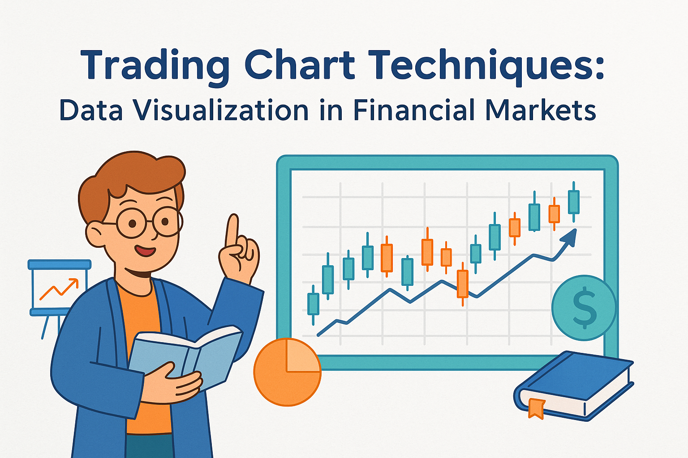
Trading Chart Techniques: Data Visualization in Financial Markets
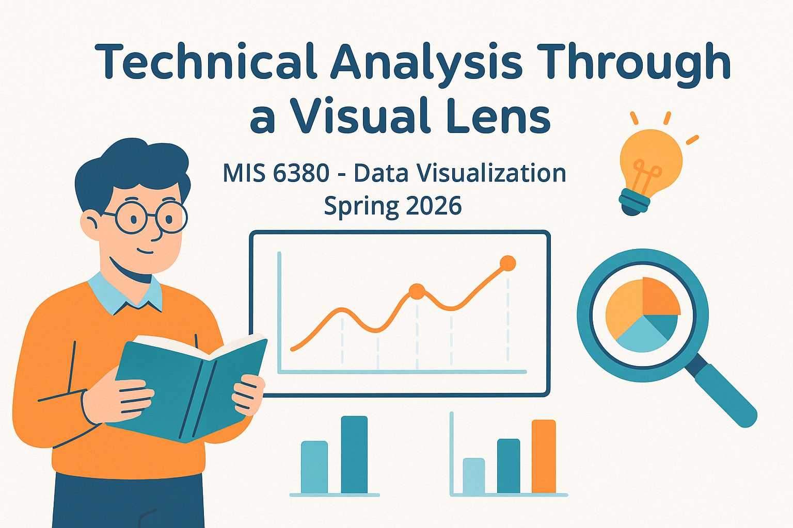
Technical Analysis Through a Visual Lens
MIS 6380 - Data Visualization Spring 2026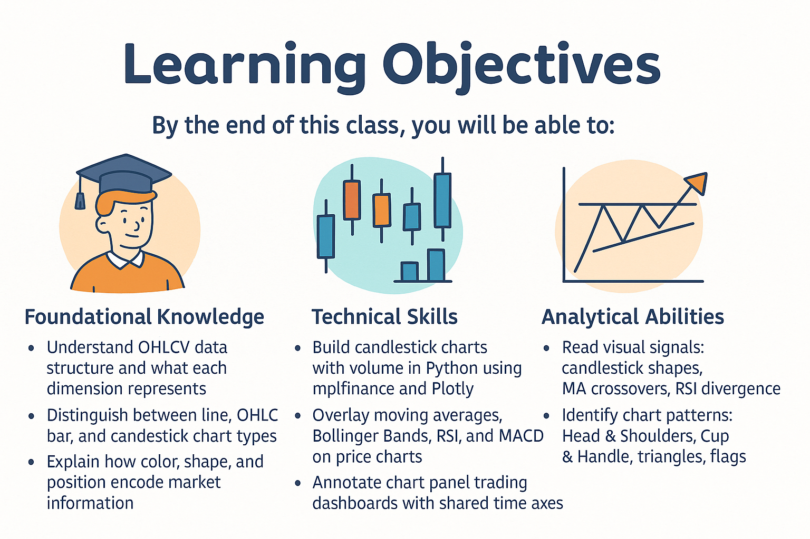
Learning Objectives
By the end of this class, you will be able to: Foundational Knowledge:- ✅ Understand OHLCV data structure and what each dimension represents
- ✅ Distinguish between line, OHLC bar, and candlestick chart types
- ✅ Explain how color, shape, and position encode market information
- ✅ Build candlestick charts with volume in Python using mplfinance and Plotly
- ✅ Overlay moving averages, Bollinger Bands, RSI, and MACD on price charts
- ✅ Construct multi-panel trading dashboards with shared time axes
- ✅ Annotate chart patterns and Fibonacci levels programmatically
- ✅ Read visual signals: candlestick shapes, MA crossovers, RSI divergence
- ✅ Identify chart patterns: Head & Shoulders, Cup & Handle, triangles, flags
- ✅ Recognize Fibonacci retracement and extension levels on a price chart
- ✅ Combine multiple indicator signals for higher-conviction analysis
- ✅ Build interactive trading dashboards with Plotly
- ✅ Visualize backtested strategy performance (equity curve, drawdown)
- ✅ Apply professional financial visualization conventions
- ✅ Critically evaluate trading chart visualizations for accuracy and bias
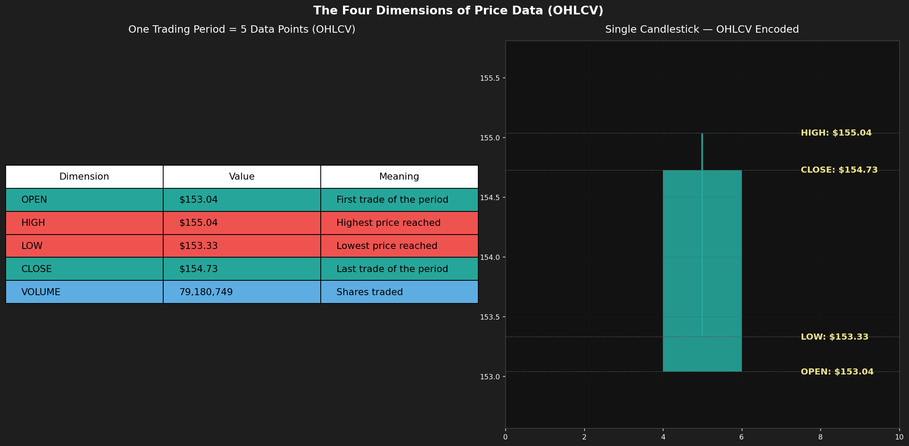
Why Trading Visualization Matters
Financial markets generate the most information-dense time series data in existence: Every Chart Is a Data Visualization Challenge:- 📈 Price encodes 4 dimensions simultaneously: Open, High, Low, Close
- 📊 Volume adds a 5th dimension — the weight of conviction behind each move
- ⏱️ Time scale choice (1-min to monthly) radically changes what the data reveals
- 🎨 Color conventions (green/red) carry universal meaning for millions of traders
- 📉 Derived indicators (RSI, MACD) are statistical transformations made visual
- 📆 Class 5 covered general temporal patterns, forecasting, decomposition
- 💹 This class covers specialized financial chart grammar used by traders worldwide
- 🔍 Technical analysis is fundamentally a visual pattern recognition discipline
- 🏦 These charts are used in real-time by hedge funds, retail traders, and institutions
- 💰 Global daily trading volume exceeds $6 trillion (forex alone)
- 📊 Technical analysis is used by ~80% of active traders
- 🤖 Algorithmic trading systems code the patterns we'll learn to see visually
- 📱 Every trading app (Robinhood, Fidelity, Bloomberg) uses these exact charts
- 🎓 Quant analysts, risk managers, and fintech PMs all read these charts daily
- ✅ A fully interactive 4-panel trading dashboard in Plotly
- ✅ Scripts to auto-generate candlestick + indicator charts for any ticker
- ✅ Annotated Fibonacci retracement levels on real historical price data
- ✅ A backtested MA crossover strategy with equity curve visualization
"The market is a device for transferring money from the impatient to the patient. Visualization helps you stay patient by seeing what's actually happening." — Warren Buffett (adapted)

The Four Dimensions of Price Data (OHLC)
Every single trading period generates exactly four prices:One Trading Period (Day, Hour, 5-Minute, etc.)
───────────────────────────────────────────────
HIGH: $152.40 ← The highest price reached during this period
OPEN: $148.20 ← The first trade price when period opened
CLOSE: $151.85 ← The last trade price when period ended
LOW: $147.60 ← The lowest price reached during this period
| Price | Visual Position | Market Meaning |
|---|---|---|
| Open | Left tick on OHLC bar / Body edge on candle | Where sentiment started |
| High | Top of upper wick/shadow | Maximum buying enthusiasm reached |
| Low | Bottom of lower wick/shadow | Maximum selling pressure reached |
| Close | Right tick on OHLC bar / Body edge on candle | Final verdict of the period |
VOLUME: 48,320,100 shares
- Volume measures HOW MUCH traded, not just where price went
- High volume on an up day = strong conviction in the move
- Low volume on an up day = weak, potentially unsustainable move
- The combination of OHLCV is called candlestick with volume data
# A simple line chart only uses Close:
close_prices = [148.20, 151.85, 149.10, 153.40, ...]
But OHLC tells the FULL story:
day_data = {
'Open': 148.20, # Started here
'High': 152.40, # Tried to go this high...
'Low': 147.60, # ...and dipped this low...
'Close': 151.85, # ...but settled here
'Volume': 48320100 # ...with this many shares traded
}

From Raw Numbers to Visual Signals
A raw pandas DataFrame is impossible to read at a glance — visualization transforms it:import pandas as pd
import yfinance as yf
Fetch real AAPL data
ticker = yf.Ticker("AAPL")
df = ticker.history(period="3mo")
print(df.head())
Open High Low Close Volume
2024-10-01 226.51 227.79 224.78 226.21 40,783,100
2024-10-02 224.56 226.03 222.36 224.66 47,515,300
2024-10-03 222.40 226.84 222.13 225.67 51,282,100
2024-10-04 227.79 228.87 225.89 226.80 38,944,100
2024-10-07 223.12 225.34 220.82 221.69 53,667,400
- 📉 October 7: Open at 223.12, but dropped to 220.82 (bearish intraday rejection) — invisible in table
- 📈 October 4: High of 228.87 but close at 226.80 — upper wick shows selling pressure at highs
- 🔴 October 7 volume (53.6M) > October 4 volume (38.9M): the DOWN day had more conviction
- 📊 The overall trend direction (5 days of data) is ambiguous in a table but obvious on a chart
import mplfinance as mpf
One line transforms the table into a chart
mpf.plot(df, type='candle', volume=True, style='charles',
title='AAPL – 3 Month View',
ylabel='Price ($)', ylabel_lower='Volume')
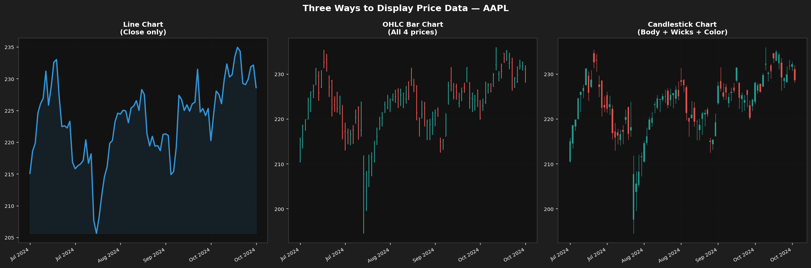
Line Charts: The Simplest View
The close-price line chart — universal, fast, but incomplete:import matplotlib.pyplot as plt
import pandas as pd
import yfinance as yf
df = yf.download("AAPL", start="2024-01-01", end="2024-12-31")
fig, ax = plt.subplots(figsize=(14, 6))
ax.plot(df.index, df['Close'], color='#3498db', linewidth=1.5, label='AAPL Close')
ax.fill_between(df.index, df['Close'], df['Close'].min(), alpha=0.1, color='#3498db')
ax.set_title('AAPL – Daily Close Price (2024)', fontsize=14, fontweight='bold')
ax.set_xlabel('Date')
ax.set_ylabel('Price ($)')
ax.grid(True, alpha=0.3)
ax.legend()
plt.tight_layout()
plt.show()
- ✅ Overall trend direction (up, down, sideways) at a glance
- ✅ Major price levels (all-time highs, key support/resistance areas)
- ✅ Relative performance over time
- ✅ Simple and clean — great for presentations to non-traders
- ❌ How prices behaved WITHIN each period (no intraday story)
- ❌ Whether periods were volatile or calm (no range information)
- ❌ Whether bulls or bears were winning each day (no open vs. close)
- ❌ Volume — no indication of conviction behind moves
✅ Comparing multiple assets (normalized line chart)
✅ Long-term annual or multi-decade views
✅ Presenting to non-technical audiences
✅ Portfolio value over time
❌ Never for active trading or technical analysis

OHLC Bar Charts: More Data, Less Beauty
The OHLC bar encodes all four price dimensions in a single vertical symbol:OHLC Bar Anatomy:
← Upper extent = HIGH
|
───┤ ← Right tick = CLOSE (price closed here)
|
┼── ← Left tick = OPEN (price opened here)
|
← Lower extent = LOW
|
Bullish Bar (Close > Open):
Right tick (Close) is ABOVE left tick (Open)
→ Buyers won this period
Bearish Bar (Close < Open):
Right tick (Close) is BELOW left tick (Open)
→ Sellers won this period
Doji Bar (Close ≈ Open):
Both ticks at roughly the same level
→ Indecision — neither side won
import mplfinance as mpf
OHLC bar chart
mpf.plot(df, type='ohlc', volume=True, style='charles',
title='AAPL – OHLC Bars', figsize=(14, 8))
| Feature | OHLC Bars | Candlesticks |
|---|---|---|
| Data shown | O, H, L, C | O, H, L, C |
| Color coding | Optional | Standard (green/red) |
| Body visibility | Low | High |
| Pattern recognition speed | Slower | Faster |
| Widely used today | Less common | Dominant globally |

Candlestick Charts: The Japanese Art of Price
Candlesticks were invented in 18th-century Japan by rice trader Homma Munehisa to visualize rice futures markets — predating Western technical analysis by 200 years: The Key Innovation — The Body:Bullish Candlestick (Close > Open): Bearish Candlestick (Close < Open):
← Upper wick ← Upper wick
┌────┴────┐ ┌─────┴────┐
│ │ ← Body (Open to Close) │ │ ← Body (Open to Close)
│ GREEN │ Color = bullish │ RED │ Color = bearish
└────┬────┘ └─────┬────┘
← Lower wick ← Lower wick
- The body is a filled rectangle from Open to Close
- Green (or white) body: Close is ABOVE Open → buyers were in control
- Red (or black) body: Close is BELOW Open → sellers were in control
- A single glance reveals the day's result without reading any numbers
- When scanning 50 charts, green/red pattern recognition is near-instant
import mplfinance as mpf
import yfinance as yf
Download data
df = yf.download("AAPL", start="2024-06-01", end="2024-09-30")
Style with dark background (professional trading terminal look)
mc = mpf.make_marketcolors(up='#26a69a', down='#ef5350',
wick={'up':'#26a69a', 'down':'#ef5350'},
volume={'up':'#26a69a', 'down':'#ef5350'})
s = mpf.make_mpf_style(marketcolors=mc, base_mpf_style='nightclouds')
mpf.plot(df, type='candle', volume=True, style=s,
title='AAPL – Candlestick Chart (Dark Terminal Style)',
figsize=(16, 9))
- Used by traders in Japan, US, Europe, Asia — the universal language of financial charts
- Every major trading platform (Bloomberg, TradingView, TD Ameritrade) defaults to candlestick view
- Mastering candlestick reading = mastering the visual grammar of global financial markets
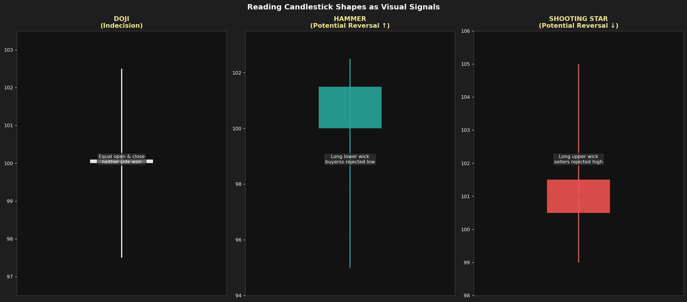
Anatomy of a Single Candlestick
Every millimeter of a candlestick encodes information: HIGH ─── ┤ (Tip of upper wick)
│ ← Upper Wick / Shadow
│ Length = distance from body top to period high
│ Long upper wick = price REJECTED at highs (selling pressure)
CLOSE ─── ┌─┴─┐
│ │ ← Body
│ │ Height = distance from Open to Close
OPEN ─── └─┬─┘ Tall body = strong directional conviction
│ Short body = indecision or small move
│ ← Lower Wick / Shadow
│ Length = distance from body bottom to period low
│ Long lower wick = price REJECTED at lows (buying support)
LOW ── ─┘ (Tip of lower wick)
| Component | What It Reveals |
|---|---|
| Body height | Conviction: tall = strong move, tiny = indecision |
| Body color | Direction: green = buyers won, red = sellers won |
| Upper wick length | How much the bulls TRIED to push up but were rejected |
| Lower wick length | How much the bears TRIED to push down but were rejected |
| Body position | Where Close sits relative to the full High-Low range |
Scenario A: Scenario B: Scenario C:
┌───┐
┌──┴──┐ │ │ ┌──┴──┐
│ │ │ │ │ │
└──┬──┘ └───┘ └──┬──┘
|
(Long lower wick (No wicks, tall (Equal wicks,
= bounce from red body = small body =
strong support) strong downtrend) doji/indecision)

Color and Fill Conventions in Candlesticks
Color grammar is the most critical visual convention in financial charts: The Universal Standard:GREEN (or White / Hollow): RED (or Black / Filled):
Close > Open Close < Open
┌─────────┐ ▓▓▓▓▓▓▓▓▓
│ BULL │ ▓ BEAR ▓
│ BODY │ ▓ BODY ▓
└─────────┘ ▓▓▓▓▓▓▓▓▓
Buyers won Sellers won
| Platform | Bullish Color | Bearish Color | Background |
|---|---|---|---|
| TradingView (default) | Green (#26a69a) | Red (#ef5350) | Dark |
| Bloomberg Terminal | White/outline | Filled/dark | Black |
| TD Ameritrade thinkorswim | Green | Red | Dark gray |
| Traditional Japanese | White/hollow | Black/filled | White |
| This course standard | #26a69a | #ef5350 | #1e1e1e dark |
# Professional dark-theme color setup (use consistently)
mc = mpf.make_marketcolors(
up='#26a69a', # Teal-green for bullish candles
down='#ef5350', # Red for bearish candles
wick={'up': '#26a69a', 'down': '#ef5350'},
volume={'up': '#26a69a', 'down': '#ef5350'},
edge={'up': '#26a69a', 'down': '#ef5350'}
)
style = mpf.make_mpf_style(
marketcolors=mc,
base_mpf_style='nightclouds',
gridcolor='#2a2a2a',
gridstyle='--'
)
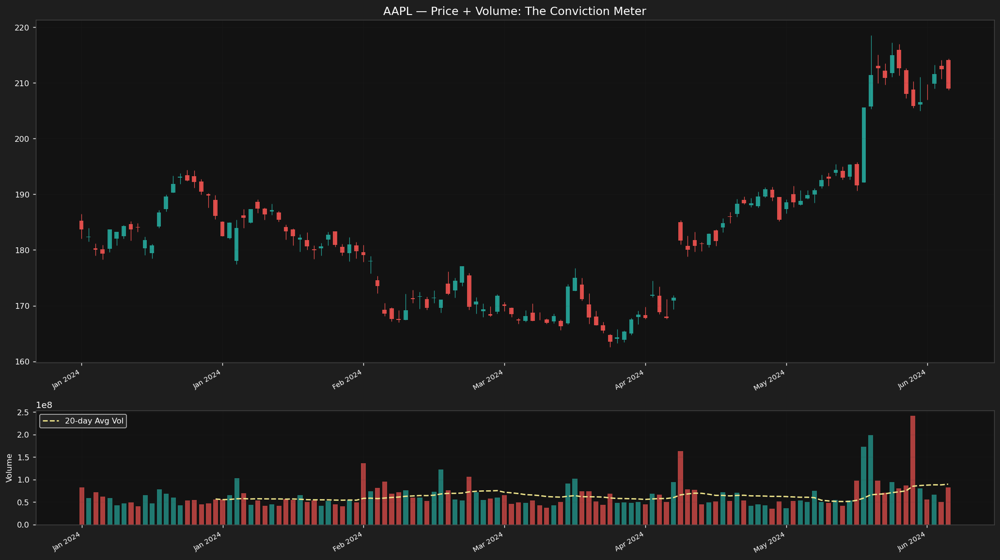
Reading Candlestick Shapes as Visual Signals
Candlestick shapes are a visual vocabulary — each shape has a name and probabilistic meaning: Single Candle Patterns (Visual Gallery):DOJI HAMMER SHOOTING STAR MARUBOZU
──┼── ┌─┴─┐ ┌─┴─┐ ┌───┐
──┼── │ │ │ │ │ │
└─┬─┘ └─┬─┘ └───┘
(no wicks)
(no lower wick)
Meaning: Meaning: Meaning: Meaning:
Indecision Potential Potential Strong
(equal bullish bearish conviction
buyers/sellers) reversal reversal (bulls won
(long lower (long upper decisively)
wick = buyers wick = sellers
rejected lows) rejected highs)
BULLISH ENGULFING: BEARISH ENGULFING:
▓▓▓ ┌───┐
┌─────┐ │ │
│ │ ← Green candle │ │
└─────┘ completely ▓▓▓▓▓ ← Red candle completely
▓▓▓ engulfs prior ▓▓▓▓▓ engulfs prior green
red candle candle
Strong bullish reversal Strong bearish reversal
# Mark a Doji on the chart
doji_dates = df[abs(df['Close'] - df['Open']) / (df['High'] - df['Low']) < 0.1].index
fig, ax = plt.subplots(figsize=(14, 7))
... plot candlesticks ...
for d in doji_dates[:5]:
ax.annotate('Doji', xy=(d, df.loc[d, 'High']),
xytext=(d, df.loc[d, 'High'] * 1.01),
fontsize=8, color='yellow',
arrowprops=dict(arrowstyle='->', color='yellow'))
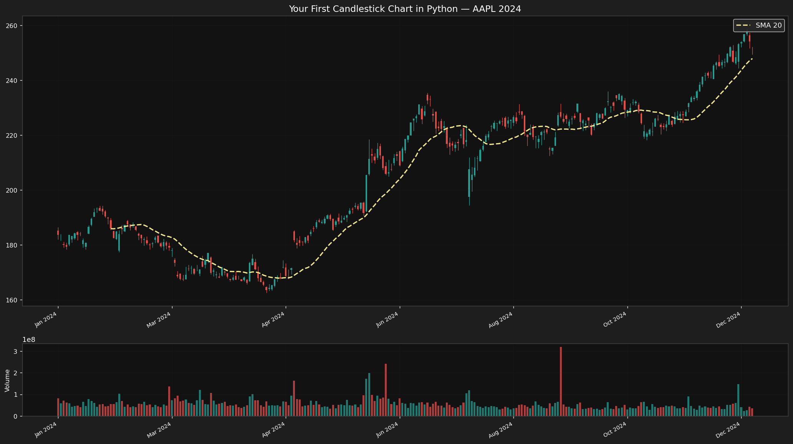
The Volume Bar: The Market's Hidden Heartbeat
Price without volume is like a weather report without wind speed — technically correct but incomplete: Volume Bar Anatomy:Volume histogram sits directly below the price chart.
Each bar height = number of shares (or contracts) traded.
Each bar color = matches the corresponding candle:
Green bar → that period closed UP
Red bar → that period closed DOWN
High volume: ████████████████ ← Conviction behind the move
Low volume: ████ ← Weak, potentially unsustainable
Volume Spike:
When volume suddenly 3x-5x the average:
████████████████████████████████████████
→ Institutional involvement (funds buying/selling)
→ News event driving unusual activity
→ Potential trend change signal
Price UP + Volume UP → Strong trend confirmation ✅
Price UP + Volume DOWN → Weak rally, possible exhaustion ⚠️
Price DOWN + Volume UP → Strong selling pressure, distribution ⚠️
Price DOWN + Volume DOWN → Low conviction pullback, likely temporary ✅
import mplfinance as mpf
fig, axes = mpf.plot(df, type='candle', volume=True, style=s,
figsize=(16, 10),
title='AAPL – Price + Volume',
returnfig=True)
The volume panel is axes[2] — add average volume line
avg_vol = df['Volume'].rolling(20).mean()
axes[2].plot(range(len(df)), avg_vol.values, color='#f0e68c',
linewidth=1.5, linestyle='--', label='20-day Avg Volume')
axes[2].legend(fontsize=8)
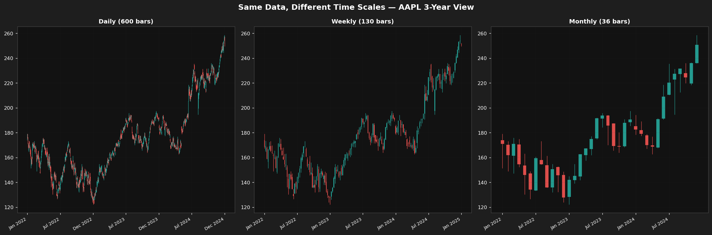
Building Your First Candlestick Chart in Python
Complete working example using mplfinance and yfinance:import mplfinance as mpf
import yfinance as yf
import pandas as pd
── Step 1: Fetch data ──────────────────────────────────────────
ticker = "AAPL"
df = yf.download(ticker, start="2024-01-01", end="2024-12-31",
auto_adjust=True)
mplfinance needs columns: Open, High, Low, Close, Volume
df = df[['Open', 'High', 'Low', 'Close', 'Volume']]
df.index = pd.to_datetime(df.index)
── Step 2: Define professional dark style ──────────────────────
mc = mpf.make_marketcolors(
up='#26a69a', down='#ef5350',
wick={'up': '#26a69a', 'down': '#ef5350'},
volume={'up': '#26a69a', 'down': '#ef5350'}
)
style = mpf.make_mpf_style(
marketcolors=mc,
base_mpf_style='nightclouds',
rc={'font.size': 10}
)
── Step 3: Add a 20-day Simple Moving Average overlay ──────────
sma20 = mpf.make_addplot(df['Close'].rolling(20).mean(),
color='#f0e68c', width=1.5, label='SMA 20')
── Step 4: Plot everything ─────────────────────────────────────
mpf.plot(
df,
type='candle',
volume=True,
style=style,
title=f'\n{ticker} – Daily Candlestick Chart (2024)',
ylabel='Price (USD)',
ylabel_lower='Volume',
addplot=[sma20],
figsize=(16, 9),
savefig='aapl_candlestick.png'
)
print("Chart saved to aapl_candlestick.png")
- Top panel: Dark-background candlestick chart with green/red candles
- Overlaid yellow line: 20-day Simple Moving Average
- Bottom panel: Color-coded volume bars matching candle direction
- Clean title, labeled axes, professional grid
pip install mplfinance yfinance pandas matplotlib
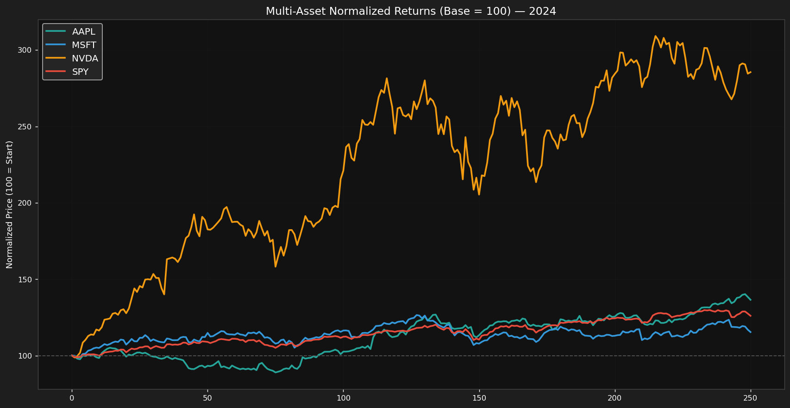
Time Scales and Aggregation
The same price data looks dramatically different depending on which time window you choose:import yfinance as yf
import pandas as pd
Download daily data for 5 years
df_daily = yf.download("AAPL", start="2019-01-01", end="2024-12-31")
Resample to weekly (W) and monthly (M) OHLCV
df_weekly = df_daily.resample('W').agg({
'Open': 'first', # First open of the week
'High': 'max', # Highest high of the week
'Low': 'min', # Lowest low of the week
'Close': 'last', # Last close of the week
'Volume': 'sum' # Total volume of the week
}).dropna()
df_monthly = df_daily.resample('ME').agg({
'Open': 'first',
'High': 'max',
'Low': 'min',
'Close': 'last',
'Volume': 'sum'
}).dropna()
print(f"Daily rows: {len(df_daily)}") # ~1260 rows
print(f"Weekly rows: {len(df_weekly)}") # ~260 rows
print(f"Monthly rows: {len(df_monthly)}") # ~60 rows
| Time Scale | Candles Cover | Best For |
|---|---|---|
| 1-minute | 1 minute | High-frequency trading, day trading |
| 5-minute | 5 minutes | Active day trading |
| 1-hour | 1 hour | Swing trading (days to weeks) |
| Daily | 1 trading day | Most common for individual investors |
| Weekly | 5 trading days | Position trading, longer-term trends |
| Monthly | ~21 trading days | Long-term investors, multi-year views |
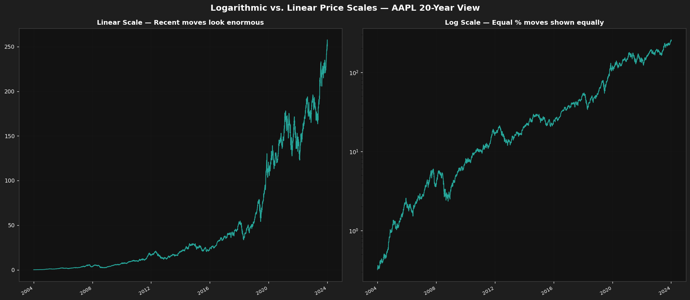
Multi-Asset Comparison: Normalized Returns Charts
The problem: AAPL trades at $175, NVDA at $450, SPY at $500 — you can't plot them on the same y-axis: Solution: Normalize all assets to 100 at the start dateimport pandas as pd
import matplotlib.pyplot as plt
import yfinance as yf
── Download multiple tickers ──────────────────────────────────
tickers = ['AAPL', 'MSFT', 'NVDA', 'GOOGL', 'SPY']
data = yf.download(tickers, start="2024-01-01", end="2024-12-31")['Close']
── Normalize: Set each series to 100 at start date ────────────
normalized = (data / data.iloc[0]) * 100
── Plot normalized returns ────────────────────────────────────
fig, ax = plt.subplots(figsize=(16, 8))
colors = ['#26a69a', '#3498db', '#e74c3c', '#f39c12', '#9b59b6']
for ticker, color in zip(tickers, colors):
ax.plot(normalized.index, normalized[ticker],
label=ticker, color=color, linewidth=2)
Add 100 baseline
ax.axhline(y=100, color='white', linestyle='--', alpha=0.4, linewidth=1)
ax.set_facecolor('#1e1e1e')
fig.set_facecolor('#1e1e1e')
ax.set_title('2024 Returns: AAPL vs MSFT vs NVDA vs GOOGL vs SPY\n(Normalized to 100 at Start)',
color='white', fontsize=14, fontweight='bold')
ax.set_xlabel('Date', color='white')
ax.set_ylabel('Normalized Price (Base = 100)', color='white')
ax.tick_params(colors='white')
ax.legend(fontsize=11, loc='upper left')
ax.grid(True, alpha=0.2, color='gray')
plt.tight_layout()
plt.show()
- A value of 130 means +30% return since the start date
- A value of 85 means -15% loss since the start date
- All series start at exactly 100 — regardless of actual share price
- This is the correct and honest way to compare investments of different price levels
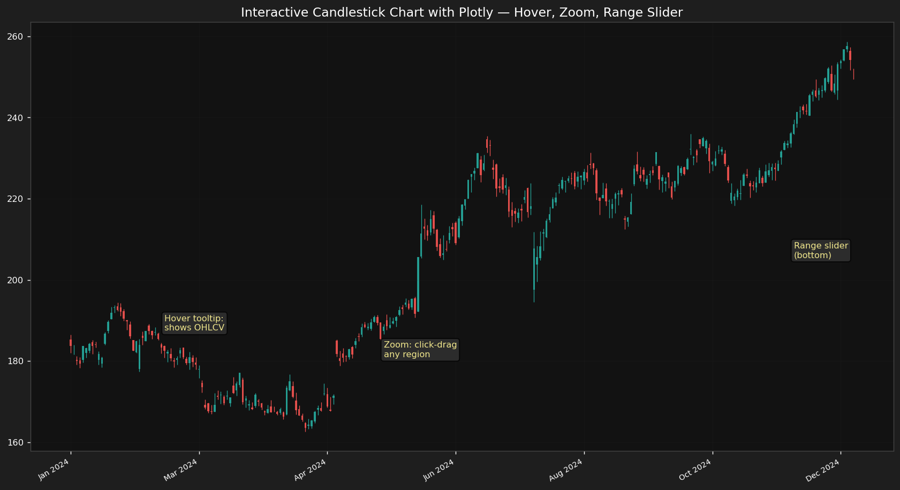
Logarithmic vs. Linear Price Scales
Linear scales lie to you on long-term charts — log scales tell the truth: The Problem With Linear Scale:Linear scale:
$1,000 to $2,000 = 1,000 units of space (100% gain)
$100 to $200 = 100 units of space (100% gain)
On a linear chart, the $1,000→$2,000 move looks 10x BIGGER
than $100→$200, even though BOTH are identical 100% returns!
Log scale:
$1,000 to $2,000 = SAME vertical distance as $100 to $200
Because log(2000) - log(1000) = log(200) - log(100) = log(2)
Equal percentage moves = equal vertical distances
This is the honest representation of investment returns
import matplotlib.pyplot as plt
import numpy as np
fig, (ax1, ax2) = plt.subplots(1, 2, figsize=(16, 6))
fig.set_facecolor('#1e1e1e')
Simulate 20-year stock price (starts at $10, grows to ~$500)
import yfinance as yf
df = yf.download("AAPL", start="2004-01-01", end="2024-12-31")
for ax, scale, title in [
(ax1, 'linear', 'Linear Scale — Recent moves look disproportionately large'),
(ax2, 'log', 'Log Scale — All percentage moves shown proportionally')
]:
ax.set_facecolor('#1e1e1e')
ax.plot(df.index, df['Close'], color='#26a69a', linewidth=1.2)
ax.set_yscale(scale)
ax.set_title(title, color='white', fontsize=11, fontweight='bold')
ax.tick_params(colors='white')
ax.set_xlabel('Year', color='white')
ax.grid(True, alpha=0.2, color='gray')
plt.tight_layout()
- Use linear scale for short-term charts (days to a few months)
- Use log scale for long-term charts (1+ year) and when comparing growth rates
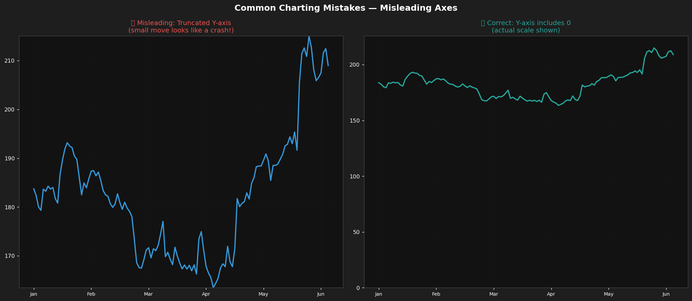
Chart Interactivity with Plotly
Static matplotlib charts are great for analysis — interactive Plotly charts are great for exploration:import plotly.graph_objects as go
import yfinance as yf
df = yf.download("AAPL", start="2024-01-01", end="2024-12-31")
fig = go.Figure(data=[go.Candlestick(
x=df.index,
open=df['Open'],
high=df['High'],
low=df['Low'],
close=df['Close'],
increasing_line_color='#26a69a',
decreasing_line_color='#ef5350',
name='AAPL'
)])
Add volume as bar chart on secondary y-axis
fig.add_trace(go.Bar(
x=df.index,
y=df['Volume'],
name='Volume',
marker_color=[
'#26a69a' if c >= o else '#ef5350'
for c, o in zip(df['Close'], df['Open'])
],
yaxis='y2',
opacity=0.5
))
fig.update_layout(
title='AAPL Interactive Candlestick Chart (2024)',
template='plotly_dark',
xaxis_rangeslider_visible=True,
yaxis2=dict(overlaying='y', side='right'),
height=600
)
fig.show() # Opens in browser — hover, zoom, pan!
- 🖱️ Hover: Shows exact OHLCV values at cursor position
- 🔍 Zoom: Click-drag to zoom into any time period
- 📅 Range slider: Navigate the full time range at bottom
- 🏷️ Legend toggle: Click to show/hide individual traces
- 📥 Export: Built-in PNG download button
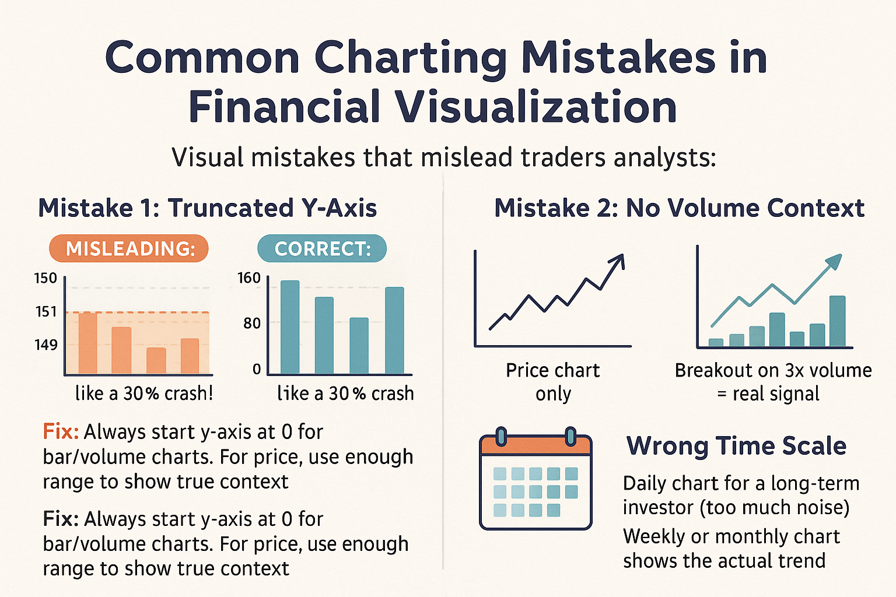
Common Charting Mistakes in Financial Visualization
Visual mistakes that mislead traders and analysts: Mistake 1: Truncated Y-AxisMISLEADING: CORRECT:
152 ─ ▓ 160 ─
151 ─ ▓▓ 120 ─
150 ─ ▓▓▓▓▓▓ 80 ─ ▓▓▓
149 ─ 40 ─ ▓▓▓▓▓▓
0 ─
A 1% move looks Shows true scale
like a 30% crash! of the move
❌ Price chart only → Can't tell if breakout has conviction
✅ Price + Volume → Breakout on 3x volume = real signal
❌ Daily chart for a long-term investor (too much noise)
✅ Weekly or monthly chart shows the actual trend
❌ Using green for bearish and red for bullish → Confuses every viewer
✅ Always: green = up, red = down (universal convention)
❌ 7 moving averages + RSI + MACD + Bollinger Bands + Fibonacci all at once
→ Visual noise, no clear signal
✅ 2-3 indicators max per chart, chosen deliberately
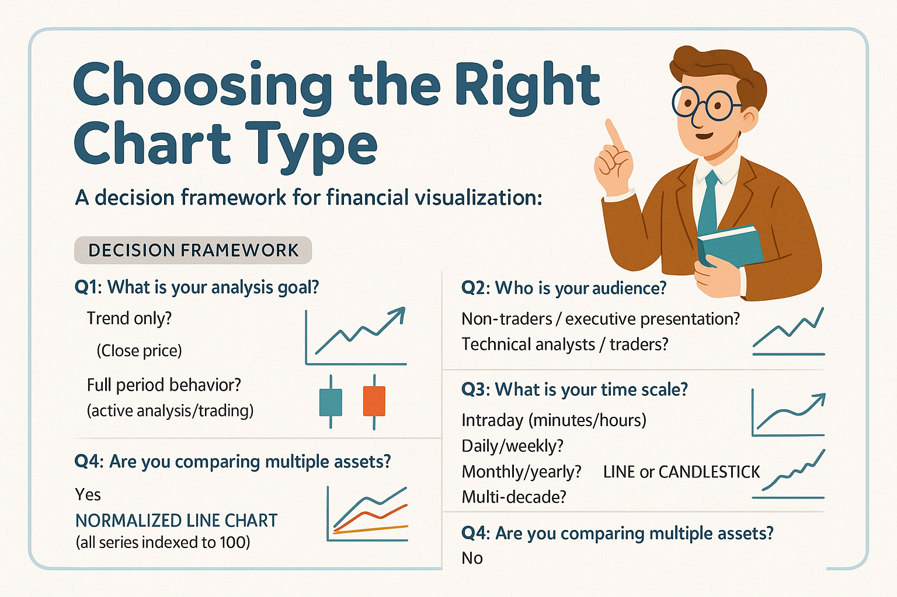
Choosing the Right Chart Type
A decision framework for financial visualization:DECISION FRAMEWORK
──────────────────────────────────────────────────────
Q1: What is your analysis goal?
Trend only? ─────────────────────────→ LINE CHART
(Close price)
Full period behavior? ────────────────→ CANDLESTICK
(active analysis/trading) or OHLC BAR
Q2: Who is your audience?
Non-traders / executive presentation? → LINE CHART
Technical analysts / traders? → CANDLESTICK
Q3: What is your time scale?
Intraday (minutes/hours)? ───────────→ CANDLESTICK
Daily/weekly? ───────────→ CANDLESTICK
Monthly/yearly? ───────────→ LINE or CANDLESTICK
Multi-decade? ───────────→ LINE (log scale)
Q4: Are you comparing multiple assets?
Yes → NORMALIZED LINE CHART (all series indexed to 100)
No → CANDLESTICK with appropriate time scale
──────────────────────────────────────────────────────
| Goal | Chart Type | Scale | Library |
|---|---|---|---|
| Executive summary | Line | Linear | matplotlib |
| Active trading | Candlestick | Linear | mplfinance |
| Long-term investor | Line | Log | matplotlib |
| Multi-asset comparison | Normalized line | Linear | matplotlib |
| Interactive exploration | Candlestick | Either | Plotly |
| Backtesting analysis | Candlestick + signals | Linear | mplfinance |
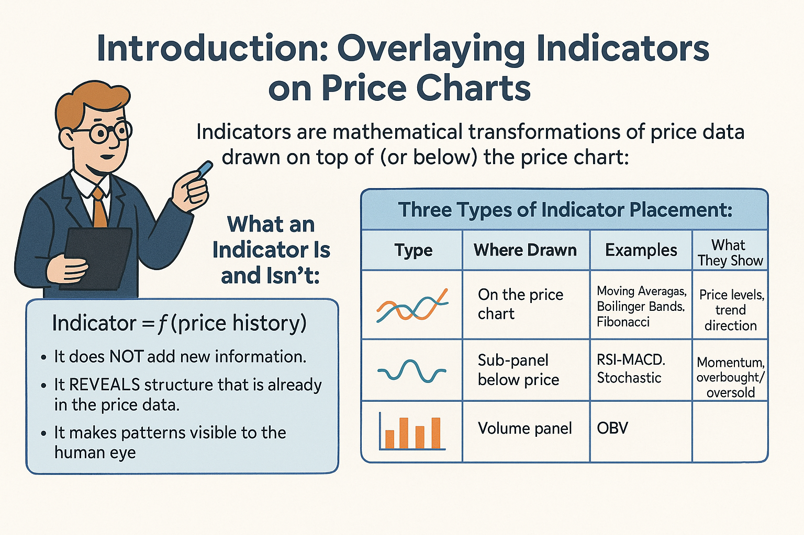
Part 1 Summary & Preview of Part 2
What You Learned in Part 1 — The Visual Grammar of Financial Markets:| Concept | Key Takeaway |
|---|---|
| OHLCV structure | Every period = 5 data points, each visually encoded |
| Line chart | Simple, shows Close only — good for trend, bad for analysis |
| OHLC bar | All 4 prices in one symbol, less intuitive than candlestick |
| Candlestick | Body + wicks encode directional conviction at a glance |
| Color convention | Green = bullish, Red = bearish (universal, never break this) |
| Candlestick shapes | Doji, Hammer, Shooting Star signal potential reversals |
| Volume | The conviction meter — confirms or questions price moves |
| Time scale | Scale selection is a visualization decision — changes the story |
| Normalized charts | The only honest way to compare different-priced assets |
| Log scale | Required for long-term charts to show equal % moves equally |
| Interactive charts | Plotly enables hover, zoom, and exploration |
In Part 2, we answer the question: "How do I filter out the noise and see the underlying trend?"
Topics coming up:
- 📈 Simple Moving Average (SMA) — rolling window smoothing
- 📉 Exponential Moving Average (EMA) — recent-biased smoothing
- ✨ Golden Cross / Death Cross — the most-watched MA signals
- 🌊 Volume Weighted Average Price (VWAP) — the institutional benchmark
- 🔢 Fibonacci Retracement — where price tends to bounce
- 🎯 Fibonacci Extensions — projecting price targets
"Charts don't predict the future. They display the past in a way that helps you make better decisions about the future." — Technical Analysis Principle
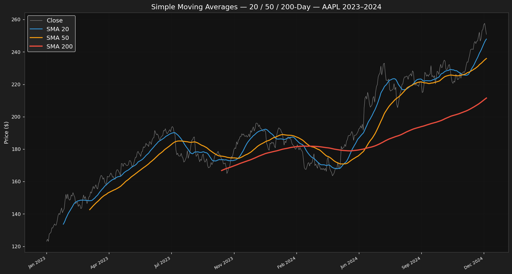
Introduction: Overlaying Indicators on Price Charts
Indicators are mathematical transformations of price data drawn on top of (or below) the price chart: What an Indicator Is — and Isn't:Indicator = f(price history) → a new visual layer on the chart
It does NOT add new information.
It REVEALS structure that is already in the price data.
It makes patterns visible to the human eye.
| Type | Where Drawn | Examples | What They Show |
|---|---|---|---|
| Overlay | On the price chart | Moving Averages, Bollinger Bands, Fibonacci | Price levels, trend direction |
| Oscillator | Sub-panel below price | RSI, MACD, Stochastic | Momentum, overbought/oversold |
| Volume-based | Volume panel | OBV, Volume Profile, VWAP | Conviction, flow |
import mplfinance as mpf
import yfinance as yf
df = yf.download("AAPL", start="2024-01-01", end="2024-12-31")
Compute moving averages
sma20 = df['Close'].rolling(20).mean()
sma50 = df['Close'].rolling(50).mean()
sma200 = df['Close'].rolling(200).mean()
Create overlay plots
overlays = [
mpf.make_addplot(sma20, color='#3498db', width=1.5, label='SMA 20'),
mpf.make_addplot(sma50, color='#f39c12', width=1.5, label='SMA 50'),
mpf.make_addplot(sma200, color='#e74c3c', width=2.0, label='SMA 200'),
]
mpf.plot(df, type='candle', volume=True, addplot=overlays,
style='nightclouds', title='AAPL with MA Overlays', figsize=(16,9))

What Is a Moving Average? The Smoothing Intuition
A moving average is a rolling window average that kills short-term noise and reveals long-term direction: The Core Idea — Step by Step:Raw Close Prices: [100, 102, 98, 105, 101, 107, 103, 108, 106, 112]
3-day SMA:
Day 3: (100 + 102 + 98) / 3 = 100.0
Day 4: (102 + 98 + 105) / 3 = 101.7
Day 5: (98 + 105 + 101) / 3 = 101.3
Day 6: (105 + 101 + 107) / 3 = 104.3
Day 7: (101 + 107 + 103) / 3 = 103.7
Day 8: (107 + 103 + 108) / 3 = 106.0
Day 9: (103 + 108 + 106) / 3 = 105.7
Day 10: (108 + 106 + 112) / 3 = 108.7
Raw prices oscillate ↑↓↑↓ (noisy)
SMA smoothly trends ↑ (signal revealed)
Raw price = driving on a bumpy road (every bump is visible)
SMA = the road smoothed by GPS averaging (direction without bumps)
Short SMA (5-day):
Responds quickly to price changes ← more reactive
Generates many false signals ← more noise
Long SMA (200-day):
Responds slowly to price changes ← major trends only
Rarely generates false signals ← very little noise
But is always late to the party ← significant lag
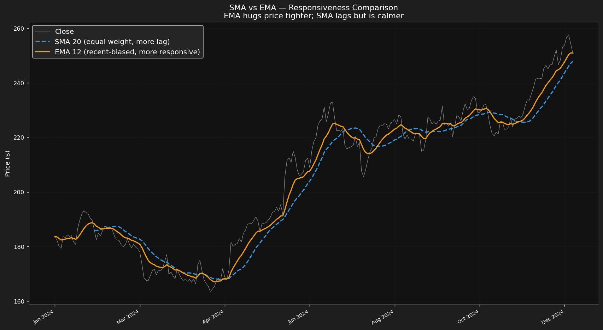
Simple Moving Average (SMA): Visualization and Code
The SMA is the most fundamental trend indicator in all of technical analysis: Formula:SMA(n) = (P₁ + P₂ + P₃ + ... + Pₙ) / n
Where P = closing price and n = number of periods
Each day gets equal weight: 1/n
| SMA | Period | What It Shows | Typical Color |
|---|---|---|---|
| Short-term | 20-day | Recent momentum, tactical | Blue |
| Medium-term | 50-day | Intermediate trend | Orange |
| Long-term | 200-day | Major trend direction | Red |
import pandas as pd
import matplotlib.pyplot as plt
import yfinance as yf
df = yf.download("AAPL", start="2023-01-01", end="2024-12-31")
Calculate all three SMAs
df['SMA_20'] = df['Close'].rolling(window=20).mean()
df['SMA_50'] = df['Close'].rolling(window=50).mean()
df['SMA_200'] = df['Close'].rolling(window=200).mean()
Plot
fig, ax = plt.subplots(figsize=(16, 7))
fig.set_facecolor('#1e1e1e')
ax.set_facecolor('#1e1e1e')
ax.plot(df.index, df['Close'], color='white', linewidth=0.8, label='Close Price', alpha=0.7)
ax.plot(df.index, df['SMA_20'], color='#3498db', linewidth=1.5, label='SMA 20')
ax.plot(df.index, df['SMA_50'], color='#f39c12', linewidth=1.5, label='SMA 50')
ax.plot(df.index, df['SMA_200'], color='#e74c3c', linewidth=2.0, label='SMA 200')
ax.set_title('AAPL – Three Moving Averages', color='white', fontsize=14, fontweight='bold')
ax.tick_params(colors='white')
ax.legend(facecolor='#2a2a2a', labelcolor='white', fontsize=11)
ax.grid(True, alpha=0.2, color='gray')
plt.tight_layout()
Price > SMA20 > SMA50 > SMA200 → Perfect bull trend alignment
Price < SMA20 < SMA50 < SMA200 → Perfect bear trend alignment
MAs tangled/crossing each other → Sideways / no clear trend

Exponential Moving Average (EMA): Weighting the Recent Past
The EMA gives more weight to recent prices, making it more responsive than SMA: How EMA Weighting Works (vs. SMA):SMA(10): Each of the 10 days gets weight = 10%
10%, 10%, 10%, 10%, 10%, 10%, 10%, 10%, 10%, 10%
EMA(10): Recent days get more weight:
Day 1 (today): ~18.2%
Day 2: ~14.9%
Day 3: ~12.2%
...decreasing exponentially...
Day 10: ~3.2%
(plus infinite tail of older prices)
Multiplier k = 2 / (n + 1)
EMA_today = (Close_today × k) + (EMA_yesterday × (1 - k))
For 12-day EMA: k = 2/(12+1) = 0.154
For 26-day EMA: k = 2/(26+1) = 0.074
import pandas as pd
import matplotlib.pyplot as plt
import yfinance as yf
df = yf.download("AAPL", start="2024-01-01", end="2024-12-31")
pandas ewm: span = period, adjust=False = recursive formula
df['EMA_12'] = df['Close'].ewm(span=12, adjust=False).mean()
df['EMA_26'] = df['Close'].ewm(span=26, adjust=False).mean()
df['SMA_20'] = df['Close'].rolling(20).mean()
fig, ax = plt.subplots(figsize=(16, 7))
fig.set_facecolor('#1e1e1e')
ax.set_facecolor('#1e1e1e')
ax.plot(df.index, df['Close'], color='white', linewidth=0.8, alpha=0.6, label='Close')
ax.plot(df.index, df['SMA_20'], color='#3498db', linewidth=1.5, linestyle='--', label='SMA 20 (lagging)')
ax.plot(df.index, df['EMA_12'], color='#f39c12', linewidth=1.8, label='EMA 12 (responsive)')
ax.set_title('EMA 12 vs SMA 20 — Responsiveness Comparison', color='white', fontsize=13)
ax.tick_params(colors='white')
ax.legend(facecolor='#2a2a2a', labelcolor='white')
ax.grid(True, alpha=0.2, color='gray')
plt.tight_layout()
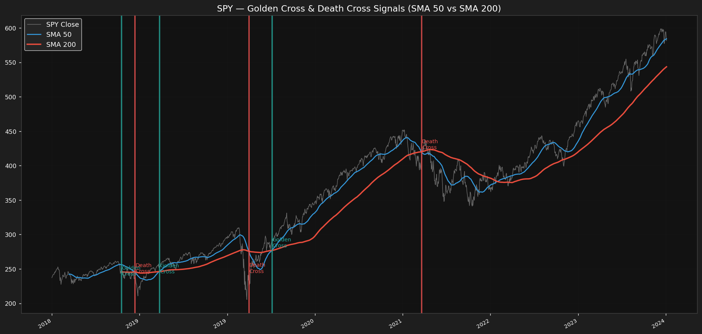
SMA vs. EMA Side-by-Side: Which to Use?
The choice between SMA and EMA is a visualization design decision:THREE MARKET CONDITIONS:
Condition 1 – STRONG UPTREND:
SMA 20: ─────────────/
EMA 12: ──────────────/ ← EMA slightly higher (more responsive)
Both work well. EMA catches the trend slightly faster.
Condition 2 – CHOPPY / RANGING MARKET:
Price: ~~~~~~~~~~~~~~~~~~~~
SMA 50: ────────── (flat, stays calm)
EMA 12: ─/\──/\──/\── (whipsaws up and down with each wobble)
SMA wins here — EMA generates too many false signals
Condition 3 – TREND REVERSAL:
Price was rising, now drops sharply
EMA turns down FIRST (more responsive) → earlier warning ✅
SMA turns down LATER (more lag) → confirmation but late ⚠️
Use EMA when:
✅ You want early signals
✅ Markets are trending (crypto, tech stocks in bull runs)
✅ Building MACD (which uses two EMAs)
Use SMA when:
✅ You want fewer false signals
✅ Markets are choppy or ranging
✅ The 200-day MA level (used by Wall Street as a key threshold)
- 200-day SMA is used by nearly all professional traders as the major bull/bear dividing line
- 12 and 26-day EMAs are the inputs for MACD (the most popular momentum indicator)
- Neither is objectively "better" — context determines the right choice
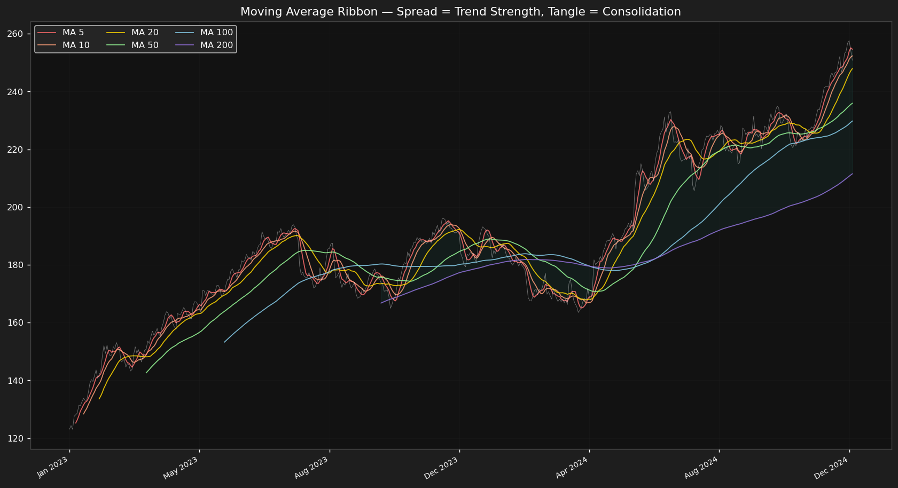
The Golden Cross and Death Cross
The two most widely watched moving average signals in global financial markets: Golden Cross:When the 50-day SMA crosses ABOVE the 200-day SMA:
200-day SMA ──────────────────────────────/─── ← 50-day
↑ ↑
both declining 50-day
crosses
above 200-day
= GOLDEN CROSS 🌟
Signal: Potential shift from bear to bull market
Action: Long-biased traders pay attention
When the 50-day SMA crosses BELOW the 200-day SMA:
50-day SMA ──────────────────────────────\─── ← 200-day
↓
50-day crosses
below 200-day
= DEATH CROSS ☠️
Signal: Potential shift from bull to bear market
Action: Risk managers take defensive positions
import pandas as pd
import matplotlib.pyplot as plt
import numpy as np
import yfinance as yf
df = yf.download("SPY", start="2018-01-01", end="2024-12-31")
df['SMA_50'] = df['Close'].rolling(50).mean()
df['SMA_200'] = df['Close'].rolling(200).mean()
Detect crosses
df['above'] = (df['SMA_50'] > df['SMA_200']).astype(int)
df['cross'] = df['above'].diff()
golden = df[df['cross'] == 1].index # SMA50 crossed above SMA200
death = df[df['cross'] == -1].index # SMA50 crossed below SMA200
fig, ax = plt.subplots(figsize=(18, 8))
fig.set_facecolor('#1e1e1e')
ax.set_facecolor('#1e1e1e')
ax.plot(df.index, df['Close'], color='#aaa', linewidth=0.8, alpha=0.7, label='SPY Close')
ax.plot(df.index, df['SMA_50'], color='#3498db', linewidth=1.5, label='SMA 50')
ax.plot(df.index, df['SMA_200'], color='#e74c3c', linewidth=2.0, label='SMA 200')
Mark crosses with vertical lines
for d in golden:
ax.axvline(d, color='#26a69a', linewidth=2, alpha=0.8)
ax.annotate('Golden\nCross', xy=(d, df.loc[d, 'SMA_200']),
color='#26a69a', fontsize=8, ha='center')
for d in death:
ax.axvline(d, color='#ef5350', linewidth=2, alpha=0.8)
ax.annotate('Death\nCross', xy=(d, df.loc[d, 'SMA_200']),
color='#ef5350', fontsize=8, ha='center')
ax.set_title('SPY – Golden Cross & Death Cross Signals (2018-2024)',
color='white', fontsize=14, fontweight='bold')
ax.tick_params(colors='white')
ax.legend(facecolor='#2a2a2a', labelcolor='white')
ax.grid(True, alpha=0.2, color='gray')
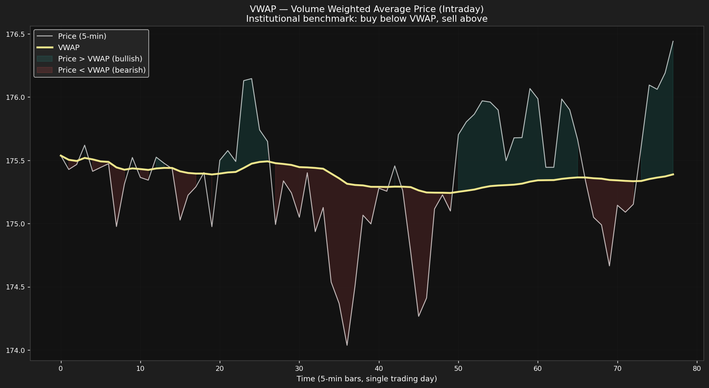
Weighted Moving Average (WMA): Linear Weighting
WMA weights prices linearly — most recent period gets the highest weight: How WMA Weighting Works:WMA(5) weights:
Day 5 (today): weight = 5 (highest)
Day 4: weight = 4
Day 3: weight = 3
Day 2: weight = 2
Day 1 (oldest): weight = 1 (lowest)
Total: 15
WMA = (P₅×5 + P₄×4 + P₃×3 + P₂×2 + P₁×1) / 15
← Less Responsive More Responsive →
SMA ──────────────── WMA ──────────── EMA
(equal weights) (linear weights) (exponential weights)
def weighted_moving_average(series, n):
weights = np.arange(1, n + 1, dtype=float)
return series.rolling(n).apply(lambda x: np.dot(x, weights) / weights.sum(), raw=True)
df['WMA_20'] = weighted_moving_average(df['Close'], 20)
df['SMA_20'] = df['Close'].rolling(20).mean()
df['EMA_20'] = df['Close'].ewm(span=20, adjust=False).mean()
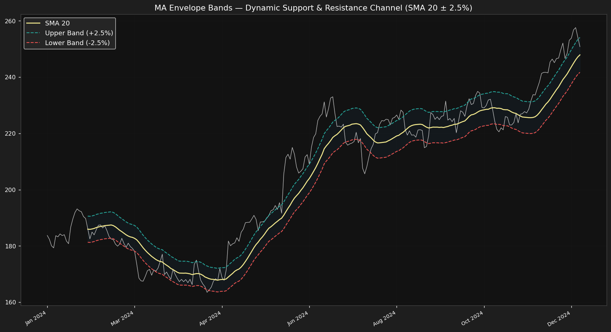
Volume Weighted Average Price (VWAP)
VWAP is the most important intraday indicator used by institutional traders: What VWAP Is:VWAP = Σ(Typical Price × Volume) / Σ(Volume)
Where: Typical Price = (High + Low + Close) / 3
VWAP resets to zero at the start of each trading day.
It represents the average price paid for ALL shares traded so far today,
weighted by how many shares traded at each price level.
Institutional buyer wants to buy 1,000,000 shares of AAPL:
- They break it into small orders throughout the day
- Goal: Buy at or BELOW VWAP → they paid less than average → good execution
- If final avg cost > VWAP → they paid MORE than average → poor execution
- VWAP is the benchmark used to evaluate trader performance on Wall Street
import pandas as pd
import matplotlib.pyplot as plt
def calculate_vwap(df):
"""Calculate VWAP — resets each day"""
df = df.copy()
df['Typical_Price'] = (df['High'] + df['Low'] + df['Close']) / 3
df['TP_Vol'] = df['Typical_Price'] * df['Volume']
# Group by date for daily reset
df['Cumulative_TP_Vol'] = df.groupby(df.index.date)['TP_Vol'].cumsum()
df['Cumulative_Vol'] = df.groupby(df.index.date)['Volume'].cumsum()
df['VWAP'] = df['Cumulative_TP_Vol'] / df['Cumulative_Vol']
return df['VWAP']
Example with 5-minute AAPL data:
df = yf.download("AAPL", interval="5m", period="5d")
df['VWAP'] = calculate_vwap(df)
- Price consistently above VWAP → bullish intraday trend, buyers in control
- Price consistently below VWAP → bearish intraday trend, sellers in control
- Price oscillating around VWAP → balanced, no directional conviction

MA Ribbons: Visualizing Multiple MAs Simultaneously
An MA ribbon plots 6-12 moving averages on the same chart — the space between them tells the story: How to Read an MA Ribbon:STRONG UPTREND: WEAK/TRANSITIONING: STRONG DOWNTREND:
MA5 ─────/ MA5 ─\/─/─\/─ MA5 \────────
MA10 ────/ MA10 ─/─\/─/─ MA10 ─\───────
MA20 ────/ MA20 ──────── ← tangled MA20 ──\──────
MA50 ────/ MA50 ──────── together MA50 ───\─────
MA100────/ MA100 ────\────
MA200────/ MA200 ─────\───
Ribbon spreading Ribbon tangling Ribbon spreading
apart UPWARD = = consolidation, apart DOWNWARD =
strong uptrend uncertainty strong downtrend
import pandas as pd
import matplotlib.pyplot as plt
import yfinance as yf
df = yf.download("AAPL", start="2023-01-01", end="2024-12-31")
periods = [5, 10, 20, 50, 100, 200]
colors = ['#ff6b6b', '#ffa07a', '#ffd700', '#98fb98', '#87ceeb', '#9370db']
fig, ax = plt.subplots(figsize=(16, 8))
fig.set_facecolor('#1e1e1e')
ax.set_facecolor('#1e1e1e')
ax.fill_between(df.index,
df['Close'].rolling(5).mean(),
df['Close'].rolling(200).mean(),
alpha=0.08, color='#26a69a', label='Ribbon zone')
for period, color in zip(periods, colors):
ma = df['Close'].rolling(period).mean()
ax.plot(df.index, ma, color=color, linewidth=1.0, label=f'MA {period}', alpha=0.8)
ax.plot(df.index, df['Close'], color='white', linewidth=0.6, alpha=0.5, label='Close')
ax.set_title('AAPL – Moving Average Ribbon', color='white', fontsize=14, fontweight='bold')
ax.tick_params(colors='white')
ax.legend(facecolor='#2a2a2a', labelcolor='white', ncol=4, fontsize=9)
ax.grid(True, alpha=0.15, color='gray')
plt.tight_layout()
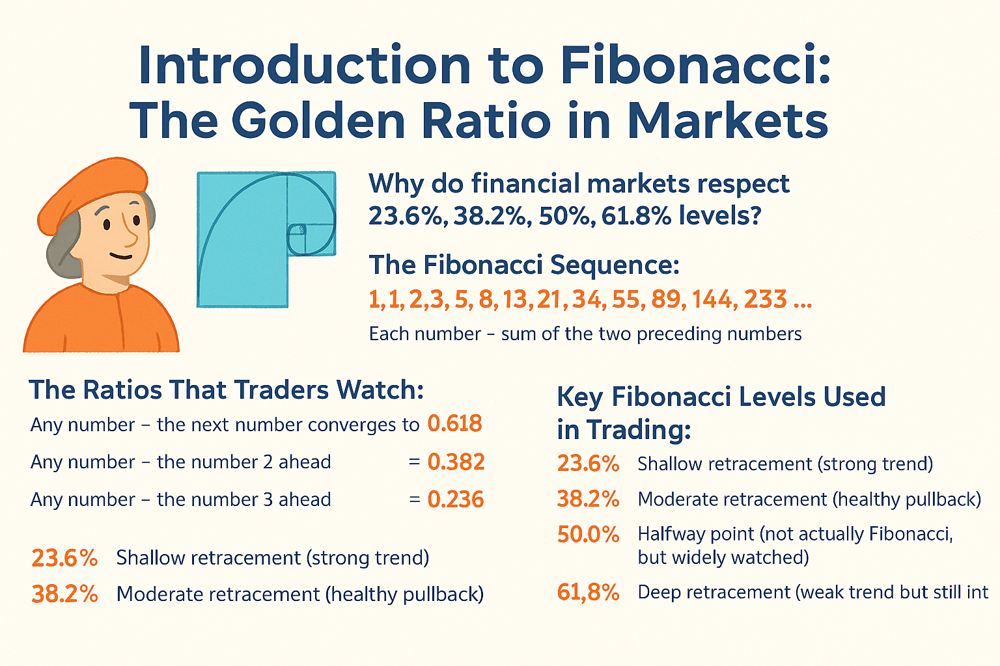
MA Envelope Bands: Dynamic Support and Resistance
MA Envelopes add two percentage-offset bands around a moving average to create a dynamic channel: Construction:Upper Band = SMA(n) × (1 + k%)
Middle Band = SMA(n)
Lower Band = SMA(n) × (1 - k%)
Common settings:
SMA(20) ± 2.5% → Short-term trading signals
SMA(50) ± 5% → Intermediate swing trading
SMA(200) ± 10% → Long-term trend channel
import pandas as pd
import matplotlib.pyplot as plt
import yfinance as yf
df = yf.download("AAPL", start="2024-01-01", end="2024-12-31")
period = 20
k = 0.025 # 2.5%
df['MA'] = df['Close'].rolling(period).mean()
df['Upper'] = df['MA'] * (1 + k)
df['Lower'] = df['MA'] * (1 - k)
fig, ax = plt.subplots(figsize=(16, 7))
fig.set_facecolor('#1e1e1e')
ax.set_facecolor('#1e1e1e')
ax.plot(df.index, df['Close'], color='white', linewidth=0.8, alpha=0.7)
ax.plot(df.index, df['MA'], color='#f0e68c', linewidth=1.5, label='SMA 20')
ax.plot(df.index, df['Upper'], color='#26a69a', linewidth=1.2, linestyle='--', label='Upper Band (+2.5%)')
ax.plot(df.index, df['Lower'], color='#ef5350', linewidth=1.2, linestyle='--', label='Lower Band (-2.5%)')
ax.fill_between(df.index, df['Upper'], df['Lower'], alpha=0.05, color='#26a69a')
ax.set_title('AAPL – MA Envelope Bands (SMA 20 ± 2.5%)',
color='white', fontsize=13, fontweight='bold')
ax.tick_params(colors='white')
ax.legend(facecolor='#2a2a2a', labelcolor='white')
ax.grid(True, alpha=0.2, color='gray')
plt.tight_layout()
- Price touching the upper band → potential short-term overbought condition
- Price touching the lower band → potential short-term oversold condition
- Note: MA envelopes differ from Bollinger Bands (which use std deviation instead of fixed %)

Introduction to Fibonacci: The Golden Ratio in Markets
Why do financial markets respect 23.6%, 38.2%, 50%, 61.8% levels? The Fibonacci Sequence:1, 1, 2, 3, 5, 8, 13, 21, 34, 55, 89, 144, 233, 377 ...
Each number = sum of the two preceding numbers
Any number ÷ the next number → converges to 0.618 (Golden Ratio reciprocal)
89 ÷ 144 = 0.618
Any number ÷ the number 2 ahead → converges to 0.382
55 ÷ 144 = 0.382
Any number ÷ the number 3 ahead → converges to 0.236
34 ÷ 144 = 0.236
23.6% → Shallow retracement (strong trend)
38.2% → Moderate retracement (healthy pullback)
50.0% → Halfway point (not actually Fibonacci, but widely watched)
61.8% → Deep retracement (weak trend but still intact)
78.6% → Very deep retracement (trend in question)
100% → Full retracement (trend reversed)
161.8% → Extension target level
261.8% → Deeper extension target
The honest answer: Because enough traders believe they will.
Fibonacci levels are a self-fulfilling prophecy:
- Millions of traders watch the 61.8% retracement level
- Many place buy orders there (expecting a bounce)
- When price reaches that level, buy orders activate
- Price does bounce → traders "confirm" Fibonacci works
- More traders learn about it → more orders → stronger levels
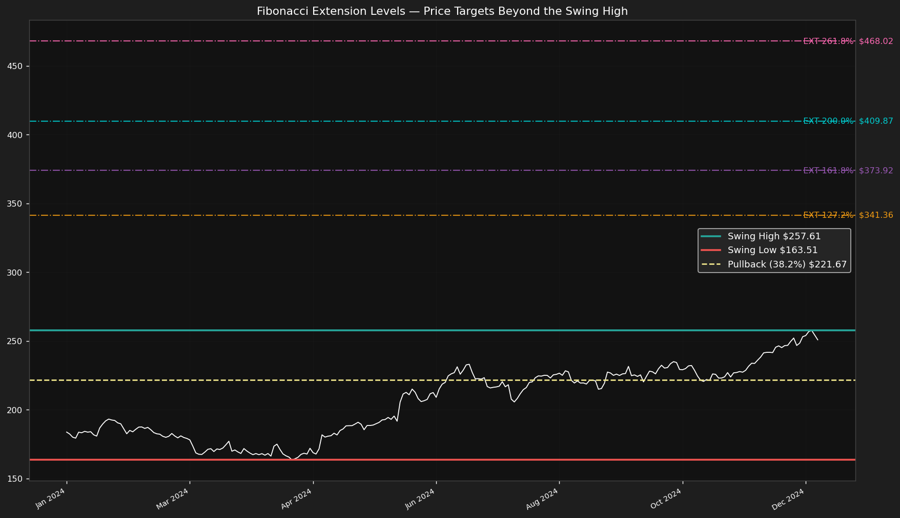
Fibonacci Retracement: Drawing Levels on a Price Chart
Fibonacci retracement is drawn between a significant swing HIGH and swing LOW: Construction Rules:In an UPTREND (measuring a pullback from a high):
1. Identify the swing LOW (recent bottom)
2. Identify the swing HIGH (recent top)
3. Draw horizontal lines at:
→ 23.6% of the distance from Low to High, measured from High
→ 38.2%
→ 50.0%
→ 61.8%
→ 78.6%
Price FALLING from the HIGH toward these levels?
Each Fibonacci level is a potential SUPPORT zone where buying may emerge.
import pandas as pd
import matplotlib.pyplot as plt
import yfinance as yf
df = yf.download("AAPL", start="2024-01-01", end="2024-12-31")
Define the swing points manually (or detect algorithmically)
swing_low = df['Close'].min() # Simplified: use actual low date
swing_high = df['Close'].max() # Simplified: use actual high date
fib_ratios = [0.0, 0.236, 0.382, 0.5, 0.618, 0.786, 1.0]
fib_levels = {r: swing_high - (swing_high - swing_low) * r for r in fib_ratios}
fib_colors = {
0.0: '#26a69a',
0.236: '#3498db',
0.382: '#f0e68c',
0.5: '#ffffff',
0.618: '#f39c12',
0.786: '#e74c3c',
1.0: '#9b59b6'
}
fig, ax = plt.subplots(figsize=(16, 8))
fig.set_facecolor('#1e1e1e')
ax.set_facecolor('#1e1e1e')
ax.plot(df.index, df['Close'], color='white', linewidth=1.0, label='AAPL Close')
for ratio, level in fib_levels.items():
color = fib_colors[ratio]
ax.axhline(y=level, color=color, linewidth=1.5,
linestyle='--' if ratio not in [0.0, 1.0] else '-')
ax.text(df.index[-1], level, f' {ratio:.1%} — ${level:.2f}',
color=color, fontsize=9, va='center')
Shade the 38.2%–61.8% "golden zone"
ax.fill_between(df.index,
fib_levels[0.382], fib_levels[0.618],
alpha=0.08, color='#f39c12', label='Golden Zone (38.2% – 61.8%)')
ax.set_title('AAPL – Fibonacci Retracement Levels', color='white',
fontsize=14, fontweight='bold')
ax.tick_params(colors='white')
ax.legend(facecolor='#2a2a2a', labelcolor='white')
ax.grid(True, alpha=0.2, color='gray')
plt.tight_layout()
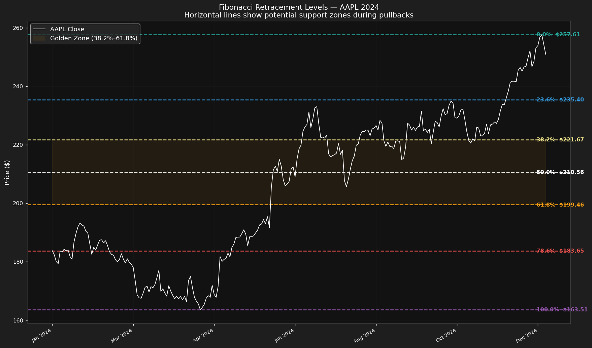
Fibonacci Extension: Projecting Price Targets
Fibonacci extensions project ABOVE the swing high (in uptrends) to identify profit targets: Extension Levels:After price retraces and bounces from a Fibonacci level,
extensions tell you WHERE price might travel next:
127.2% → First extension target (conservative)
161.8% → Golden ratio extension (most watched)
200.0% → Double the original move
261.8% → Major extension target
Construction:
1. Swing Low (A)
2. Swing High (B) — the measured move
3. Pullback Low (C) — where price retraced to
4. Extensions projected UP from A-B-C geometry
# Extension levels calculated from A, B, C points
swing_low_A = 150.0 # The starting low
swing_high_B = 200.0 # The peak
pullback_C = 175.0 # Where price pulled back to
move_AB = swing_high_B - swing_low_A # = 50.0
extension_levels = {
'127.2%': pullback_C + move_AB * 1.272,
'161.8%': pullback_C + move_AB * 1.618,
'200.0%': pullback_C + move_AB * 2.000,
'261.8%': pullback_C + move_AB * 2.618
}
print("Fibonacci Extension Targets:")
for label, level in extension_levels.items():
print(f" {label}: ${level:.2f}")
- Retracement levels are BETWEEN the swing low and high (pullback zones)
- Extension levels are BEYOND the swing high (profit targets)
- Both are drawn as horizontal lines — color-coded differently to avoid confusion
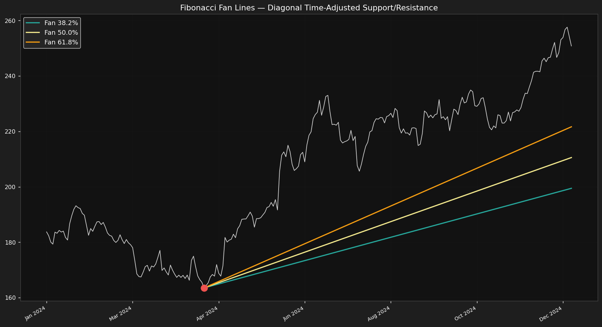
Visualizing Fibonacci Levels in Python
Complete, professional Fibonacci chart with retracements and extensions:import pandas as pd
import matplotlib.pyplot as plt
import matplotlib.patches as mpatches
import yfinance as yf
import numpy as np
def draw_fibonacci_chart(ticker, start, end, swing_low_date, swing_high_date):
df = yf.download(ticker, start=start, end=end)
swing_low = float(df.loc[swing_low_date:swing_low_date, 'Close'].iloc[0])
swing_high = float(df.loc[swing_high_date:swing_high_date, 'Close'].iloc[0])
# Retracement levels (between Low and High)
retrace = {
'0%': swing_high,
'23.6%': swing_high - (swing_high - swing_low) * 0.236,
'38.2%': swing_high - (swing_high - swing_low) * 0.382,
'50.0%': swing_high - (swing_high - swing_low) * 0.500,
'61.8%': swing_high - (swing_high - swing_low) * 0.618,
'100%': swing_low
}
fig, ax = plt.subplots(figsize=(16, 9))
fig.set_facecolor('#1e1e1e')
ax.set_facecolor('#1e1e1e')
# Price line
ax.plot(df.index, df['Close'], color='white', linewidth=1.2, zorder=5)
# Shade zones between Fibonacci levels
level_list = sorted(retrace.values())
zone_colors = ['#26a69a20', '#3498db20', '#f0e68c30', '#f39c1225', '#e74c3c20']
for i in range(len(level_list) - 1):
ax.fill_between(df.index, level_list[i], level_list[i+1],
alpha=0.15, color=zone_colors[i % len(zone_colors)])
# Draw horizontal lines
colors = ['#26a69a', '#3498db', '#f0e68c', 'white', '#f39c12', '#9b59b6']
for (label, level), color in zip(retrace.items(), colors):
ax.axhline(y=level, color=color, linewidth=1.5, linestyle='--', alpha=0.9)
ax.text(df.index[5], level + (swing_high - swing_low) * 0.005,
f'{label} ${level:.2f}', color=color, fontsize=9, fontweight='bold')
ax.set_title(f'{ticker} – Fibonacci Retracement Levels\nSwing: ${swing_low:.2f} → ${swing_high:.2f}',
color='white', fontsize=13, fontweight='bold')
ax.tick_params(colors='white')
ax.grid(True, alpha=0.15, color='gray')
plt.tight_layout()
return fig
Usage:
fig = draw_fibonacci_chart("AAPL", "2024-01-01", "2024-12-31",
"2024-01-22", "2024-07-15")
plt.show()
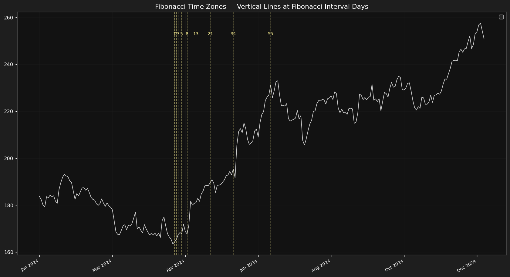
Fibonacci Fan Lines: Diagonal Levels
Fibonacci Fan Lines are diagonal support/resistance lines that incorporate both price AND time: Construction:1. Draw from a swing LOW (or HIGH) as the anchor point
- Draw a vertical line at a key future date
- Divide that vertical line at Fibonacci ratios (38.2%, 50%, 61.8%)
- Connect each division point back to the anchor point
→ These diagonal lines represent time-adjusted support/resistance
Horizontal Fib levels: ───────────────── constant price, any time
Fan lines: / / / diverging at angles from the anchor
Fan lines are dynamic: the same level is at a DIFFERENT price
on Monday vs. Friday, because the line is diagonal.
This makes them time-sensitive: a stock that rallied quickly
has steeper fan lines; a slow rally has shallower fans.
import matplotlib.pyplot as plt
import numpy as np
import yfinance as yf
from matplotlib.lines import Line2D
df = yf.download("AAPL", start="2024-01-01", end="2024-12-31")
fig, ax = plt.subplots(figsize=(16, 7))
fig.set_facecolor('#1e1e1e')
ax.set_facecolor('#1e1e1e')
ax.plot(df.index, df['Close'], color='white', linewidth=1.0, alpha=0.8)
Anchor: the swing low
anchor_idx = df['Close'].idxmin()
anchor_val = df.loc[anchor_idx, 'Close']
anchor_pos = df.index.get_loc(anchor_idx)
End point (last date), vertical extent to swing high
end_val = df['Close'].max()
fib_fans = [0.382, 0.5, 0.618]
fan_colors = ['#26a69a', '#f0e68c', '#f39c12']
for ratio, color in zip(fib_fans, fan_colors):
end_y = anchor_val + (end_val - anchor_val) * ratio
ax.plot([anchor_idx, df.index[-1]], [anchor_val, end_y],
color=color, linewidth=1.5, linestyle='-',
label=f'Fan {ratio:.1%}', alpha=0.85)
ax.scatter([anchor_idx], [anchor_val], color='#ef5350', s=100, zorder=6, label='Anchor (swing low)')
ax.set_title('AAPL – Fibonacci Fan Lines', color='white', fontsize=13, fontweight='bold')
ax.tick_params(colors='white')
ax.legend(facecolor='#2a2a2a', labelcolor='white')
ax.grid(True, alpha=0.2, color='gray')
plt.tight_layout()
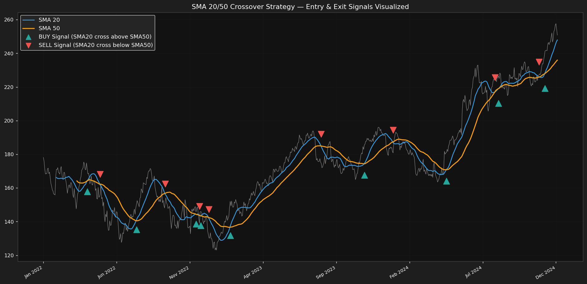
Fibonacci Time Zones: When Price Might Turn
Fibonacci Time Zones project WHEN future turning points might occur: Construction:1. Mark a significant swing point (low or high) as Day 0
- Count forward in Fibonacci intervals: 1, 2, 3, 5, 8, 13, 21, 34, 55...
- Draw vertical lines at each Fibonacci-numbered day
→ These vertical lines mark potential future turning points
↓ ↓ ↓ ↓ ↓ ↓ ↓ ↓
│ │ │ │ │ │ │ │
1 2 3 5 8 13 21 34 ← Time zones
day days days days ...
(sparse early, dense later)
import matplotlib.pyplot as plt
import numpy as np
import yfinance as yf
df = yf.download("AAPL", start="2024-01-01", end="2024-12-31")
df = df.reset_index()
fig, ax = plt.subplots(figsize=(16, 7))
fig.set_facecolor('#1e1e1e')
ax.set_facecolor('#1e1e1e')
ax.plot(df['Date'], df['Close'], color='white', linewidth=1.0, alpha=0.8)
Start from the first major low
anchor_row = df['Close'].idxmin()
fib_nums = [1, 2, 3, 5, 8, 13, 21, 34, 55]
for i, fib in enumerate(fib_nums):
zone_idx = anchor_row + fib
if zone_idx < len(df):
zone_date = df.loc[zone_idx, 'Date']
alpha = 0.8 if i < 5 else 0.4
ax.axvline(zone_date, color='#f0e68c', linewidth=1.0,
linestyle='--', alpha=alpha)
ax.text(zone_date, df['Close'].max() * 0.98,
str(fib), color='#f0e68c', fontsize=8, ha='center')
ax.set_title('AAPL – Fibonacci Time Zones', color='white', fontsize=13, fontweight='bold')
ax.tick_params(colors='white')
ax.grid(True, alpha=0.2, color='gray')
plt.tight_layout()

MA Crossover Strategy: Full Visualization with Entry/Exit Signals
Turning a visual pattern (MA crossover) into a systematic, visualized trading strategy: Strategy Rules:BUY when: SMA_20 crosses ABOVE SMA_50 (and close above SMA_200)
SELL when: SMA_20 crosses BELOW SMA_50
Entry = next open after the crossover candle
Exit = next open after the death crossover
import pandas as pd
import matplotlib.pyplot as plt
import matplotlib.patches as mpatches
import yfinance as yf
import numpy as np
df = yf.download("AAPL", start="2022-01-01", end="2024-12-31")
df['SMA_20'] = df['Close'].rolling(20).mean()
df['SMA_50'] = df['Close'].rolling(50).mean()
df['SMA_200'] = df['Close'].rolling(200).mean()
Detect crossovers
df['signal'] = 0
df.loc[df['SMA_20'] > df['SMA_50'], 'signal'] = 1 # Bullish alignment
df['crossover'] = df['signal'].diff()
buys = df[df['crossover'] == 1]
sells = df[df['crossover'] == -1]
fig, ax = plt.subplots(figsize=(18, 8))
fig.set_facecolor('#1e1e1e')
ax.set_facecolor('#1e1e1e')
ax.plot(df.index, df['Close'], color='white', linewidth=0.8, alpha=0.6)
ax.plot(df.index, df['SMA_20'], color='#3498db', linewidth=1.5, label='SMA 20')
ax.plot(df.index, df['SMA_50'], color='#f39c12', linewidth=1.5, label='SMA 50')
ax.plot(df.index, df['SMA_200'], color='#e74c3c', linewidth=2.0, label='SMA 200')
Buy signals: green up arrows
ax.scatter(buys.index, buys['SMA_20'] * 0.97, marker='^', color='#26a69a',
s=150, zorder=5, label='BUY Signal')
Sell signals: red down arrows
ax.scatter(sells.index, sells['SMA_20'] * 1.03, marker='v', color='#ef5350',
s=150, zorder=5, label='SELL Signal')
ax.set_title('AAPL – MA Crossover Strategy (SMA 20/50 with SMA 200 filter)',
color='white', fontsize=13, fontweight='bold')
ax.tick_params(colors='white')
ax.legend(facecolor='#2a2a2a', labelcolor='white', fontsize=10)
ax.grid(True, alpha=0.2, color='gray')
plt.tight_layout()
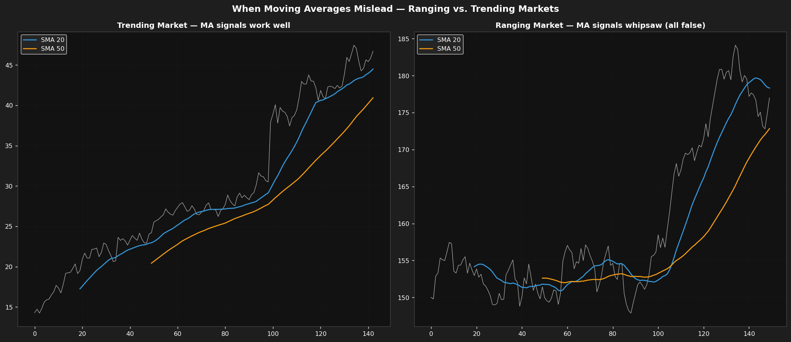
Combining Fibonacci with Moving Averages: Confluence Zones
When a Fibonacci level and a moving average coincide — that is a confluence zone: Why Confluence Matters:Single Fibonacci level: Moderate support
→ 1 reason to buy here
Single Moving Average: Moderate support
→ 1 reason to buy here
Fibonacci + SMA at the same price: STRONG support
→ 2 independent indicators agree = confluence
→ More traders watching = more orders at that level
→ Higher probability of a price bounce
import pandas as pd
import matplotlib.pyplot as plt
import yfinance as yf
df = yf.download("AAPL", start="2024-01-01", end="2024-12-31")
swing_low = df['Close'].min()
swing_high = df['Close'].max()
fib_618 = swing_high - (swing_high - swing_low) * 0.618
sma_200 = df['Close'].rolling(200).mean().iloc[-1]
Highlight confluence zone (where Fib and MA are close)
confluence_price = (fib_618 + sma_200) / 2
tolerance = (swing_high - swing_low) * 0.02 # 2% tolerance band
fig, ax = plt.subplots(figsize=(16, 8))
fig.set_facecolor('#1e1e1e')
ax.set_facecolor('#1e1e1e')
ax.plot(df.index, df['Close'], color='white', linewidth=0.8, alpha=0.7)
ax.plot(df.index, df['Close'].rolling(200).mean(),
color='#e74c3c', linewidth=2.0, label='SMA 200')
ax.axhline(fib_618, color='#f39c12', linewidth=1.5, linestyle='--',
label=f'Fib 61.8% — ${fib_618:.2f}')
Mark the confluence band
ax.axhspan(confluence_price - tolerance, confluence_price + tolerance,
alpha=0.2, color='#f0e68c', label='CONFLUENCE ZONE')
ax.set_title('AAPL – Fibonacci + SMA Confluence Zone', color='white',
fontsize=13, fontweight='bold')
ax.tick_params(colors='white')
ax.legend(facecolor='#2a2a2a', labelcolor='white')
ax.grid(True, alpha=0.2, color='gray')
plt.tight_layout()
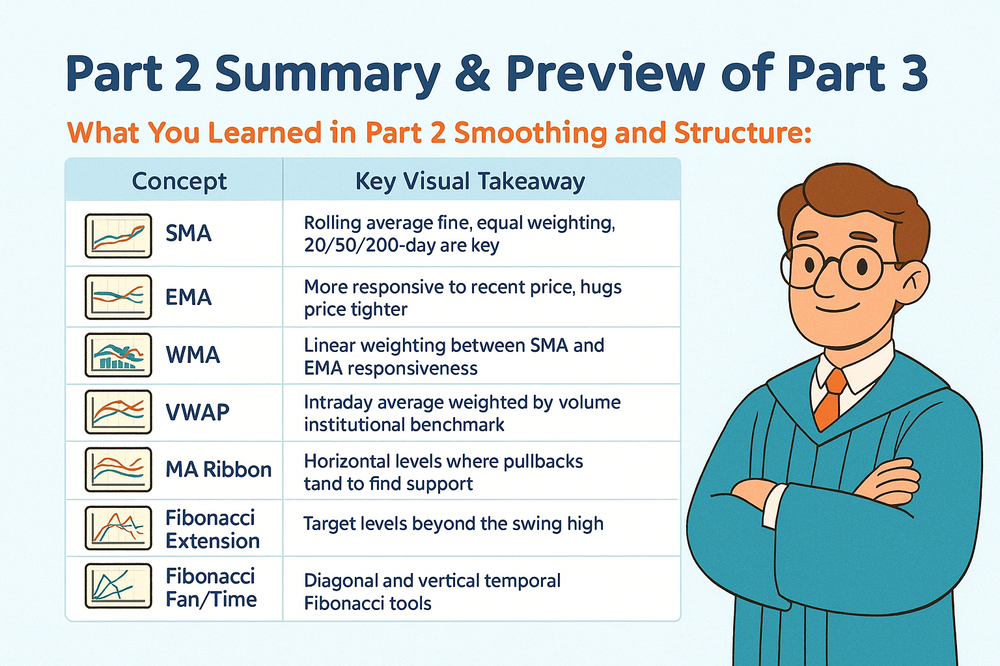
Critique: When Moving Averages Mislead
Moving averages have a serious weakness in ranging (non-trending) markets: The Whipsaw Problem:TRENDING MARKET (MAs work great):
Price moves in a clear direction
MA crossovers align with the actual trend
Result: Few signals, most profitable
RANGING MARKET (MAs fail):
Price moves sideways between support and resistance
Price repeatedly crosses above/below the MA
Each cross generates a buy or sell signal
All signals are FALSE (price was never trending)
Result: Frequent signals, all losing
import pandas as pd
import matplotlib.pyplot as plt
import yfinance as yf
Deliberately choose a sideways-moving period
df_trending = yf.download("NVDA", start="2023-01-01", end="2023-06-30") # Strong uptrend
df_ranging = yf.download("NVDA", start="2022-01-01", end="2022-06-30") # Ranging market
fig, (ax1, ax2) = plt.subplots(1, 2, figsize=(18, 7))
fig.set_facecolor('#1e1e1e')
for ax, df, title in [
(ax1, df_trending, "Trending Market — MAs Work Well"),
(ax2, df_ranging, "Ranging Market — MAs Generate Whipsaws")
]:
ax.set_facecolor('#1e1e1e')
sma20 = df['Close'].rolling(20).mean()
sma50 = df['Close'].rolling(50).mean()
ax.plot(df.index, df['Close'], color='white', linewidth=0.8, alpha=0.7)
ax.plot(df.index, sma20, color='#3498db', linewidth=1.5, label='SMA 20')
ax.plot(df.index, sma50, color='#f39c12', linewidth=1.5, label='SMA 50')
ax.set_title(title, color='white', fontsize=11, fontweight='bold')
ax.tick_params(colors='white')
ax.legend(facecolor='#2a2a2a', labelcolor='white', fontsize=9)
ax.grid(True, alpha=0.2, color='gray')
plt.suptitle('MA Performance: Trending vs. Ranging Markets', color='white',
fontsize=14, fontweight='bold')
plt.tight_layout()

Part 2 Summary & Preview of Part 3
What You Learned in Part 2 — Smoothing and Structure:| Concept | Key Visual Takeaway |
|---|---|
| SMA | Rolling average line, equal weighting, 20/50/200-day are key |
| EMA | More responsive to recent price, hugs price tighter |
| Golden/Death Cross | 50-day vs 200-day MA crossover — market-wide signal |
| WMA | Linear weighting between SMA and EMA responsiveness |
| VWAP | Intraday average weighted by volume — institutional benchmark |
| MA Ribbon | Multiple MAs simultaneously — spread = trend strength |
| Fibonacci Retracement | Horizontal levels where pullbacks tend to find support |
| Fibonacci Extension | Target levels beyond the swing high |
| Fibonacci Fan/Time | Diagonal and vertical temporal Fibonacci tools |
| Confluence Zones | Where multiple indicators agree — highest probability |
| MA Whipsaws | Why MAs fail in ranging markets |
In Part 3, we move BELOW the price chart to the indicator sub-panels:
- 📊 RSI — The 0-100 momentum speedometer
- 📉 MACD — Two moving averages minus each other, made visual
- 🎀 Bollinger Bands — Dynamic volatility channel on the price chart
- ⚡ Stochastic Oscillator — Where did price close within its recent range?
- 📏 Average True Range (ATR) — Measuring volatility without direction
- 📦 Volume Profile — The horizontal histogram showing where volume clusters
"In an uptrend, Fibonacci retracement levels show you where to BUY the dip. The moving average tells you the dip is over. Together, they tell you where AND when." — Technical Analysis Practicum

The Multi-Panel Chart Architecture
Professional trading charts are multi-panel structures — each panel answers a different question: Standard Multi-Panel Layout:┌────────────────────────────────────────────────────────┐
│ PRICE PANEL (60% of height) │
│ Candlesticks + MA overlays + Bollinger Bands │
│ Question: "What direction is price moving?" │
├────────────────────────────────────────────────────────┤
│ VOLUME PANEL (15% of height) │
│ Color-coded histogram │
│ Question: "How much conviction is behind the move?" │
├────────────────────────────────────────────────────────┤
│ RSI PANEL (12.5% of height) │
│ Oscillator 0-100 with overbought/oversold zones │
│ Question: "Is price stretched too far too fast?" │
├────────────────────────────────────────────────────────┤
│ MACD PANEL (12.5% of height) │
│ MACD line, Signal line, Histogram bars │
│ Question: "Is momentum accelerating or fading?" │
└────────────────────────────────────────────────────────┘
import matplotlib.pyplot as plt
import matplotlib.gridspec as gridspec
import pandas as pd
import yfinance as yf
df = yf.download("AAPL", start="2024-01-01", end="2024-12-31")
fig = plt.figure(figsize=(18, 12))
fig.set_facecolor('#1e1e1e')
GridSpec: 4 rows, height ratios
gs = gridspec.GridSpec(4, 1,
height_ratios=[5, 1.5, 1.5, 1.5],
hspace=0.05)
ax_price = fig.add_subplot(gs[0])
ax_volume = fig.add_subplot(gs[1], sharex=ax_price)
ax_rsi = fig.add_subplot(gs[2], sharex=ax_price)
ax_macd = fig.add_subplot(gs[3], sharex=ax_price)
for ax in [ax_price, ax_volume, ax_rsi, ax_macd]:
ax.set_facecolor('#1e1e1e')
ax.tick_params(colors='white', labelsize=8)
ax.grid(True, alpha=0.15, color='gray')
ax.spines['bottom'].set_color('#333')
ax.spines['top'].set_color('#333')
ax.spines['left'].set_color('#333')
ax.spines['right'].set_color('#333')
Hide x-tick labels except the bottom panel
plt.setp(ax_price.get_xticklabels(), visible=False)
plt.setp(ax_volume.get_xticklabels(), visible=False)
plt.setp(ax_rsi.get_xticklabels(), visible=False)
print("Multi-panel framework ready — add indicators to each axis")
- All panels share the same x-axis (
sharex=ax_price) — zoom applies to all simultaneously - The price panel is tallest — it's the primary visual focus
- Each sub-panel has its own y-axis scale (RSI is 0-100, MACD is in price units)
- Hide x-tick labels on all but the bottom panel to avoid visual clutter
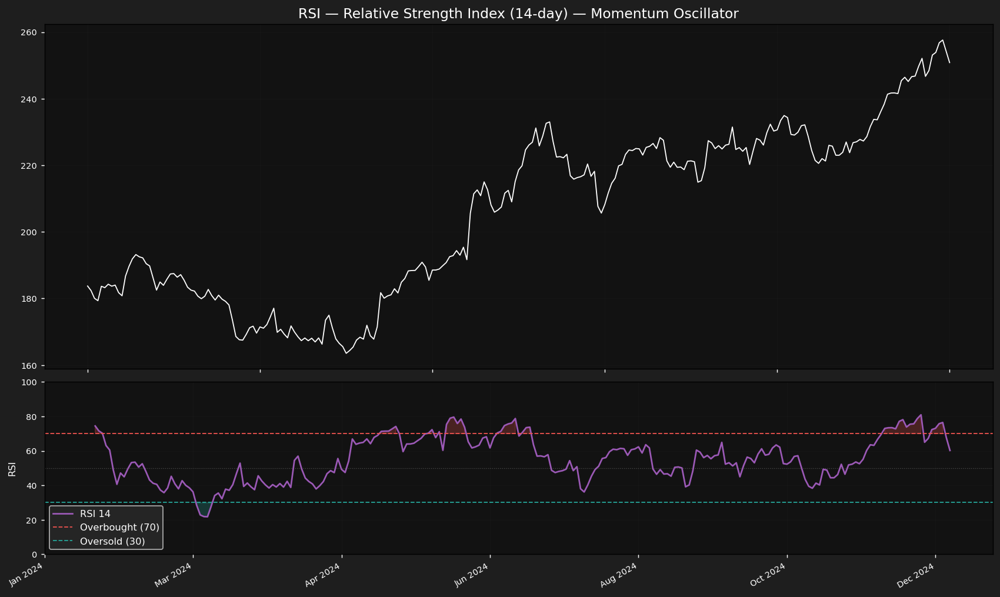
Relative Strength Index (RSI): The Momentum Oscillator
RSI is a 0-100 speedometer for price momentum — the single most widely used oscillator in trading: What RSI Measures:RSI answers: "How fast and how much has price been rising vs. falling?"
RSI = 100 → Price going UP every single day (theoretical maximum)
RSI = 70 → Traditional OVERBOUGHT threshold (price rose too fast)
RSI = 50 → Neutral zone (equal buying and selling pressure)
RSI = 30 → Traditional OVERSOLD threshold (price fell too fast)
RSI = 0 → Price going DOWN every single day (theoretical minimum)
100 ─────────────────────────────────────────────────────
80 ─
70 ─ ─ ─ ─ ─ ─ ─ ─ ─ ─ ─ ─ ─ ─ ─ ─ ─ OVERBOUGHT line
████ OVERBOUGHT ZONE (shaded red)
RSI line oscillates ────/\────/\────
████ OVERSOLD ZONE (shaded green)
30 ─ ─ ─ ─ ─ ─ ─ ─ ─ ─ ─ ─ ─ ─ ─ ─ ─ OVERSOLD line
20 ─
0 ─────────────────────────────────────────────────────
import pandas as pd
import numpy as np
import matplotlib.pyplot as plt
import yfinance as yf
def calculate_rsi(prices, period=14):
delta = prices.diff()
gain = delta.clip(lower=0)
loss = -delta.clip(upper=0)
avg_gain = gain.ewm(com=period - 1, min_periods=period).mean()
avg_loss = loss.ewm(com=period - 1, min_periods=period).mean()
rs = avg_gain / avg_loss
return 100 - (100 / (1 + rs))
df = yf.download("AAPL", start="2024-01-01", end="2024-12-31")
df['RSI'] = calculate_rsi(df['Close'])
fig, (ax1, ax2) = plt.subplots(2, 1, figsize=(16, 9), sharex=True,
gridspec_kw={'height_ratios': [3, 1]})
fig.set_facecolor('#1e1e1e')
Price panel
ax1.set_facecolor('#1e1e1e')
ax1.plot(df.index, df['Close'], color='white', linewidth=1.0)
ax1.set_title('AAPL – Price + RSI (14)', color='white', fontsize=13, fontweight='bold')
ax1.tick_params(colors='white')
ax1.grid(True, alpha=0.15, color='gray')
RSI panel
ax2.set_facecolor('#1e1e1e')
ax2.plot(df.index, df['RSI'], color='#9b59b6', linewidth=1.5, label='RSI 14')
ax2.axhline(70, color='#ef5350', linewidth=1.0, linestyle='--', label='Overbought (70)')
ax2.axhline(30, color='#26a69a', linewidth=1.0, linestyle='--', label='Oversold (30)')
ax2.axhline(50, color='gray', linewidth=0.8, linestyle=':', alpha=0.5)
ax2.fill_between(df.index, df['RSI'], 70, where=(df['RSI'] >= 70), alpha=0.25, color='#ef5350')
ax2.fill_between(df.index, df['RSI'], 30, where=(df['RSI'] <= 30), alpha=0.25, color='#26a69a')
ax2.set_ylim(0, 100)
ax2.tick_params(colors='white')
ax2.legend(facecolor='#2a2a2a', labelcolor='white', fontsize=9)
ax2.grid(True, alpha=0.15, color='gray')
plt.tight_layout()

RSI Calculation and Visual Interpretation
Understanding what the RSI formula produces helps you read the chart intuitively: Step-by-Step Calculation (14-day period):Day
Close Change Gain Loss
----
------- -------- ------- ------
1
150.0 — — —
2
152.0 +2.0 2.0 0.0
3
148.0 -4.0 0.0 4.0
4
153.0 +5.0 5.0 0.0
5
151.0 -2.0 0.0 2.0
...continuing for 14 days...
Average Gain (14 days) = sum(gains) / 14 = e.g. 2.14
Average Loss (14 days) = sum(losses) / 14 = e.g. 0.86
RS = Average Gain / Average Loss = 2.14 / 0.86 = 2.49
RSI = 100 - (100 / (1 + RS)) = 100 - (100 / 3.49) = 100 - 28.65 = 71.35
| RSI Range | Color Zone | Market Condition |
|---|---|---|
| 70 – 100 | Red shading | Overbought — rally may be extended |
| 50 – 70 | Neutral | Bullish momentum, not extreme |
| 50 | Center line | Equal buyers and sellers |
| 30 – 50 | Neutral | Bearish momentum, not extreme |
| 0 – 30 | Green shading | Oversold — decline may be extended |
RSI staying above 50 throughout a pullback:
→ Bullish — buyers defending the mid-level → strong uptrend intact
RSI staying below 50 during a rally:
→ Bearish — bears defending the mid-level → still in a downtrend

RSI Divergence: The Most Powerful RSI Signal
Divergence occurs when RSI and price move in opposite directions — an early warning of trend exhaustion: Bearish Divergence:Price Chart: RSI Panel:
B ← Higher High RSI(B) ← Lower High (RSI)
/ /
A Price makes A RSI fails to confirm
higher high the new price high
Signal: Momentum is WEAKENING even as price rises
→ Possible trend reversal ahead
Price Chart: RSI Panel:
A Price makes A RSI stays
\ lower low \ higher
B ← Lower Low RSI(B) ← Higher Low (RSI)
Signal: Momentum is STRENGTHENING even as price falls
→ Possible trend reversal ahead (to the upside)
import pandas as pd
import matplotlib.pyplot as plt
import yfinance as yf
def calculate_rsi(prices, period=14):
delta = prices.diff()
gain = delta.clip(lower=0)
loss = -delta.clip(upper=0)
avg_gain = gain.ewm(com=period - 1, min_periods=period).mean()
avg_loss = loss.ewm(com=period - 1, min_periods=period).mean()
rs = avg_gain / avg_loss
return 100 - (100 / (1 + rs))
df = yf.download("AAPL", start="2024-01-01", end="2024-12-31")
df['RSI'] = calculate_rsi(df['Close'])
fig, (ax1, ax2) = plt.subplots(2, 1, figsize=(16, 9), sharex=True,
gridspec_kw={'height_ratios': [3, 1]})
fig.set_facecolor('#1e1e1e')
for ax in [ax1, ax2]:
ax.set_facecolor('#1e1e1e')
ax.tick_params(colors='white')
ax.grid(True, alpha=0.15, color='gray')
ax1.plot(df.index, df['Close'], color='white', linewidth=1.0)
ax2.plot(df.index, df['RSI'], color='#9b59b6', linewidth=1.5)
ax2.axhline(70, color='#ef5350', linewidth=1.0, linestyle='--')
ax2.axhline(30, color='#26a69a', linewidth=1.0, linestyle='--')
ax2.set_ylim(0, 100)
Manually annotate bearish divergence (example)
Point A: price high with high RSI
Point B: higher price high but lower RSI → bearish divergence
Add annotations:
ax1.annotate('', xy=(df.index[200], df['Close'].iloc[200]),
xytext=(df.index[150], df['Close'].iloc[150]),
arrowprops=dict(arrowstyle='->', color='#ef5350', lw=1.5))
ax1.text(df.index[180], df['Close'].max() * 0.99,
'Bearish Divergence\n(price higher, RSI lower)',
color='#ef5350', fontsize=9)
ax1.set_title('AAPL – RSI Divergence Example', color='white', fontsize=13, fontweight='bold')
plt.tight_layout()

MACD: Moving Average Convergence/Divergence
MACD visualizes the relationship between two moving averages as a momentum oscillator: MACD Components — Three Visual Elements in One Panel:┌────────────────────────────────────────────────────────┐
│ │
│ MACD Line ───/────╲──/──── (blue line) │
│ Signal Line ──/────╲─/──── (orange line) │
│ Histogram ████░░░░████ (green = above, red below) │
│ ████░░░░████ │
│ ─ ─ ─ ─ ─ ─ Zero Line ─ ─ ─ ─ ─ ─ ─ ─ ─ │
│ ░░░░████░░░░ │
└────────────────────────────────────────────────────────┘
MACD Line = EMA(12) - EMA(26)
Signal Line = EMA(9) of the MACD Line
Histogram = MACD Line - Signal Line
import pandas as pd
import numpy as np
import matplotlib.pyplot as plt
import yfinance as yf
def calculate_macd(prices, fast=12, slow=26, signal=9):
ema_fast = prices.ewm(span=fast, adjust=False).mean()
ema_slow = prices.ewm(span=slow, adjust=False).mean()
macd_line = ema_fast - ema_slow
signal_line = macd_line.ewm(span=signal, adjust=False).mean()
histogram = macd_line - signal_line
return macd_line, signal_line, histogram
df = yf.download("AAPL", start="2024-01-01", end="2024-12-31")
macd, signal_line, histogram = calculate_macd(df['Close'])
fig, (ax1, ax2) = plt.subplots(2, 1, figsize=(16, 9), sharex=True,
gridspec_kw={'height_ratios': [3, 1.5]})
fig.set_facecolor('#1e1e1e')
ax1.set_facecolor('#1e1e1e')
ax1.plot(df.index, df['Close'], color='white', linewidth=1.0)
ax1.set_title('AAPL – Price + MACD', color='white', fontsize=13, fontweight='bold')
ax1.tick_params(colors='white')
ax1.grid(True, alpha=0.15, color='gray')
ax2.set_facecolor('#1e1e1e')
Histogram: green when positive, red when negative
colors_hist = ['#26a69a' if v >= 0 else '#ef5350' for v in histogram]
ax2.bar(df.index, histogram, color=colors_hist, alpha=0.7, width=0.8, label='Histogram')
ax2.plot(df.index, macd, color='#3498db', linewidth=1.5, label='MACD Line')
ax2.plot(df.index, signal_line, color='#f39c12', linewidth=1.5, label='Signal Line')
ax2.axhline(0, color='gray', linewidth=0.8, linestyle='--')
ax2.tick_params(colors='white')
ax2.legend(facecolor='#2a2a2a', labelcolor='white', fontsize=9)
ax2.grid(True, alpha=0.15, color='gray')
plt.tight_layout()
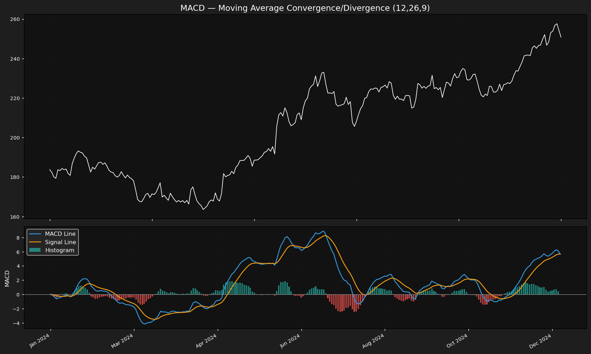
MACD Crossover Signals: Visualizing Buy and Sell Triggers
MACD crossovers are the most watched momentum signals in all of technical analysis: Bullish MACD Crossover:MACD Panel: Price Panel:
Signal ─\─ Price
╲ continues
MACD ─────╲/─ ← to rally
↑
MACD crosses ABOVE Signal Line
→ Bullish crossover signal
→ Green vertical line on chart
→ Green buy arrow on price panel
MACD Panel: Price Panel:
MACD ─────╲─── Price
╲ begins
Signal ─────╲/─ ← to decline
↑
MACD crosses BELOW Signal Line
→ Bearish crossover signal
→ Red vertical line on chart
→ Red sell arrow on price panel
# Detect MACD crossovers and plot with synchronized price panel
df['MACD'], df['Signal'], df['Hist'] = calculate_macd(df['Close'])
df['macd_above'] = (df['MACD'] > df['Signal']).astype(int)
df['macd_cross'] = df['macd_above'].diff()
bullish_cross = df[df['macd_cross'] == 1] # MACD crossed above Signal
bearish_cross = df[df['macd_cross'] == -1] # MACD crossed below Signal
On the price panel: mark entry/exit points
ax1.scatter(bullish_cross.index, bullish_cross['Close'] * 0.98,
marker='^', color='#26a69a', s=120, zorder=5, label='MACD Buy')
ax1.scatter(bearish_cross.index, bearish_cross['Close'] * 1.02,
marker='v', color='#ef5350', s=120, zorder=5, label='MACD Sell')
On the MACD panel: vertical lines at crossovers
for d in bullish_cross.index:
ax2.axvline(d, color='#26a69a', linewidth=1.0, alpha=0.6)
for d in bearish_cross.index:
ax2.axvline(d, color='#ef5350', linewidth=1.0, alpha=0.6)

MACD Histogram: Visualizing Momentum Acceleration
The MACD histogram is the most sensitive component — it shows momentum BEFORE the crossover: Reading Histogram Direction:Histogram BAR HEIGHT = MACD Line - Signal Line
When bars are GREEN and GROWING: Momentum accelerating upward
When bars are GREEN and SHRINKING: Momentum decelerating (crossover coming?)
When bars cross zero to RED: Bearish crossover just happened
When bars are RED and GROWING: Momentum accelerating downward
When bars are RED and SHRINKING: Bearish momentum fading (crossover coming?)
When bars cross zero to GREEN: Bullish crossover just happened
Price is still rising...
MACD line is still above Signal line...
But histogram bars are SHRINKING...
This shrinking histogram is an EARLY WARNING
that momentum is fading BEFORE the crossover.
Advanced traders use this to take partial profits
before the full signal appears.
import matplotlib.pyplot as plt
import numpy as np
fig, (ax1, ax2) = plt.subplots(2, 1, figsize=(16, 9), sharex=True,
gridspec_kw={'height_ratios': [3, 1.5]})
fig.set_facecolor('#1e1e1e')
Color gradient: dark green for growing, light for shrinking (positive)
hist_vals = df['Hist'].values
colors = []
for i, v in enumerate(hist_vals):
if v >= 0:
# Green: bright when growing, dim when shrinking
prev = hist_vals[i-1] if i > 0 else 0
alpha = 1.0 if v >= prev else 0.4
colors.append(f'#26a69a{int(alpha*255):02x}')
else:
prev = hist_vals[i-1] if i > 0 else 0
alpha = 1.0 if v <= prev else 0.4
colors.append(f'#ef5350{int(alpha*255):02x}')
ax2.set_facecolor('#1e1e1e')
ax2.bar(df.index, df['Hist'], color='#26a69a', alpha=0.7, width=0.8)
ax2.plot(df.index, df['MACD'], color='#3498db', linewidth=1.5)
ax2.plot(df.index, df['Signal'], color='#f39c12', linewidth=1.5)
ax2.axhline(0, color='gray', linewidth=0.8)
ax2.tick_params(colors='white')
ax2.grid(True, alpha=0.15, color='gray')

Bollinger Bands: Visualizing Volatility as a Dynamic Channel
Bollinger Bands are drawn ON the price chart — three lines that expand and contract with volatility: Construction:Middle Band = 20-day SMA
Upper Band = 20-day SMA + (2 × 20-day Standard Deviation)
Lower Band = 20-day SMA - (2 × 20-day Standard Deviation)
NARROW BANDS (bands close together):
Standard deviation is LOW → volatility is LOW
→ Market is calm, often consolidating
→ Big move may be coming ("Bollinger Squeeze")
WIDE BANDS (bands far apart):
Standard deviation is HIGH → volatility is HIGH
→ Market is making big moves
→ Already in a volatile phase
PRICE POSITION:
Price near upper band → stretched toward the high end
Price at middle band → at the average (trend line)
Price near lower band → stretched toward the low end
import pandas as pd
import matplotlib.pyplot as plt
import yfinance as yf
df = yf.download("AAPL", start="2024-01-01", end="2024-12-31")
Calculate Bollinger Bands
df['BB_mid'] = df['Close'].rolling(20).mean()
df['BB_std'] = df['Close'].rolling(20).std()
df['BB_upper'] = df['BB_mid'] + 2 * df['BB_std']
df['BB_lower'] = df['BB_mid'] - 2 * df['BB_std']
Bollinger Band Width (measure of how wide the bands are)
df['BB_width'] = (df['BB_upper'] - df['BB_lower']) / df['BB_mid']
fig, (ax1, ax2) = plt.subplots(2, 1, figsize=(16, 10), sharex=True,
gridspec_kw={'height_ratios': [4, 1]})
fig.set_facecolor('#1e1e1e')
ax1.set_facecolor('#1e1e1e')
ax1.plot(df.index, df['Close'], color='white', linewidth=0.9, label='Close')
ax1.plot(df.index, df['BB_mid'], color='#f0e68c', linewidth=1.5, label='Middle (SMA 20)')
ax1.plot(df.index, df['BB_upper'], color='#3498db', linewidth=1.2, linestyle='-', label='Upper Band (+2σ)')
ax1.plot(df.index, df['BB_lower'], color='#3498db', linewidth=1.2, linestyle='-', label='Lower Band (-2σ)')
ax1.fill_between(df.index, df['BB_upper'], df['BB_lower'], alpha=0.06, color='#3498db')
ax1.set_title('AAPL – Bollinger Bands (20, 2)', color='white', fontsize=13, fontweight='bold')
ax1.tick_params(colors='white')
ax1.legend(facecolor='#2a2a2a', labelcolor='white', fontsize=9)
ax1.grid(True, alpha=0.15, color='gray')
BB Width panel (shows volatility compression/expansion)
ax2.set_facecolor('#1e1e1e')
ax2.plot(df.index, df['BB_width'], color='#9b59b6', linewidth=1.5, label='BB Width')
ax2.fill_between(df.index, df['BB_width'], df['BB_width'].min(),
alpha=0.2, color='#9b59b6')
ax2.set_ylabel('Band Width', color='white', fontsize=9)
ax2.tick_params(colors='white')
ax2.legend(facecolor='#2a2a2a', labelcolor='white', fontsize=9)
ax2.grid(True, alpha=0.15, color='gray')
plt.tight_layout()
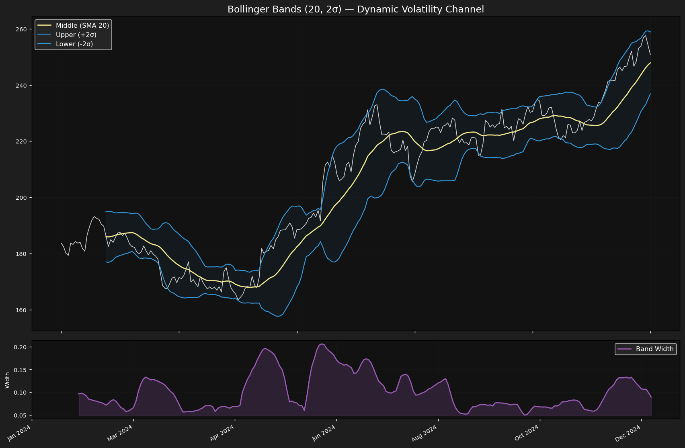
Bollinger Band Patterns: The Walk, the Squeeze, and the W-Bottom
Three key Bollinger Band chart patterns every technical trader knows: Pattern 1: The Bollinger Band WalkPrice "walking" along the upper band:
Upper Band: ─────/──────── (price hugging this line)
↑price ↑
Middle Band: ───/─────────
Lower Band: ─────────────
Signal: STRONG uptrend in progress
The fact that price can "walk" the upper band = momentum is strong.
This is NOT an automatic sell signal — strong stocks walk the upper band for weeks.
Before: After:
───────── ─────────/
────────── ← wide /
───────────── ← price ─────
────────── ← wide \
───────── ─────────\
Bands compress to → Explosive breakout
their narrowest in one direction
(squeeze)
First bottom: Price touches lower band → slight bounce
Second bottom: Price touches lower band again but RSI is HIGHER
(bullish divergence) → real reversal
/──────
/
──────/
│ ← First touch (low RSI)
──/
/
│ ← Second touch (higher RSI = divergence)
Lower Band
# BB Squeeze: when band width drops to 52-week low
df['BB_width_52wk_min'] = df['BB_width'].rolling(252).min()
squeeze_dates = df[df['BB_width'] <= df['BB_width_52wk_min'] * 1.05].index
fig, ax = plt.subplots(figsize=(16, 7))
fig.set_facecolor('#1e1e1e')
ax.set_facecolor('#1e1e1e')
ax.plot(df.index, df['Close'], color='white', linewidth=0.8)
ax.plot(df.index, df['BB_upper'], color='#3498db', linewidth=1.0)
ax.plot(df.index, df['BB_lower'], color='#3498db', linewidth=1.0)
ax.fill_between(df.index, df['BB_upper'], df['BB_lower'], alpha=0.05, color='#3498db')
for d in squeeze_dates:
ax.axvline(d, color='#f0e68c', linewidth=0.5, alpha=0.4)
ax.set_title('AAPL – Bollinger Bands with Squeeze Zones Highlighted',
color='white', fontsize=13)
ax.tick_params(colors='white')
ax.grid(True, alpha=0.15, color='gray')
plt.tight_layout()

Stochastic Oscillator: Visualizing Where Close Sits Within the Range
The Stochastic Oscillator answers: "Where did price close relative to its recent High-Low range?" Formula:%K = (Close - Lowest Low(n)) / (Highest High(n) - Lowest Low(n)) × 100
%D = 3-period SMA of %K
Where n = 14 (standard lookback period)
Interpretation:
%K near 100 → Price closed near the TOP of its n-period range (overbought)
%K near 0 → Price closed near the BOTTOM of its n-period range (oversold)
%K = 50 → Price closed in the exact middle of its range
import pandas as pd
import matplotlib.pyplot as plt
import yfinance as yf
def stochastic(df, period=14, smooth_k=3, smooth_d=3):
lowest_low = df['Low'].rolling(period).min()
highest_high = df['High'].rolling(period).max()
pct_k_raw = 100 * (df['Close'] - lowest_low) / (highest_high - lowest_low)
pct_k = pct_k_raw.rolling(smooth_k).mean() # Fast %K (smoothed)
pct_d = pct_k.rolling(smooth_d).mean() # Slow %D
return pct_k, pct_d
df = yf.download("AAPL", start="2024-01-01", end="2024-12-31")
df['Stoch_K'], df['Stoch_D'] = stochastic(df)
fig, (ax1, ax2) = plt.subplots(2, 1, figsize=(16, 9), sharex=True,
gridspec_kw={'height_ratios': [3, 1.5]})
fig.set_facecolor('#1e1e1e')
for ax in [ax1, ax2]:
ax.set_facecolor('#1e1e1e')
ax.tick_params(colors='white')
ax.grid(True, alpha=0.15, color='gray')
ax1.plot(df.index, df['Close'], color='white', linewidth=1.0)
ax1.set_title('AAPL – Price + Stochastic Oscillator', color='white', fontsize=13)
ax2.plot(df.index, df['Stoch_K'], color='#3498db', linewidth=1.5, label='%K')
ax2.plot(df.index, df['Stoch_D'], color='#f39c12', linewidth=1.5, label='%D (signal)')
ax2.axhline(80, color='#ef5350', linewidth=1.0, linestyle='--', label='Overbought (80)')
ax2.axhline(20, color='#26a69a', linewidth=1.0, linestyle='--', label='Oversold (20)')
ax2.fill_between(df.index, df['Stoch_K'], 80, where=(df['Stoch_K'] >= 80),
alpha=0.2, color='#ef5350')
ax2.fill_between(df.index, df['Stoch_K'], 20, where=(df['Stoch_K'] <= 20),
alpha=0.2, color='#26a69a')
ax2.set_ylim(0, 100)
ax2.legend(facecolor='#2a2a2a', labelcolor='white', fontsize=9)
plt.tight_layout()
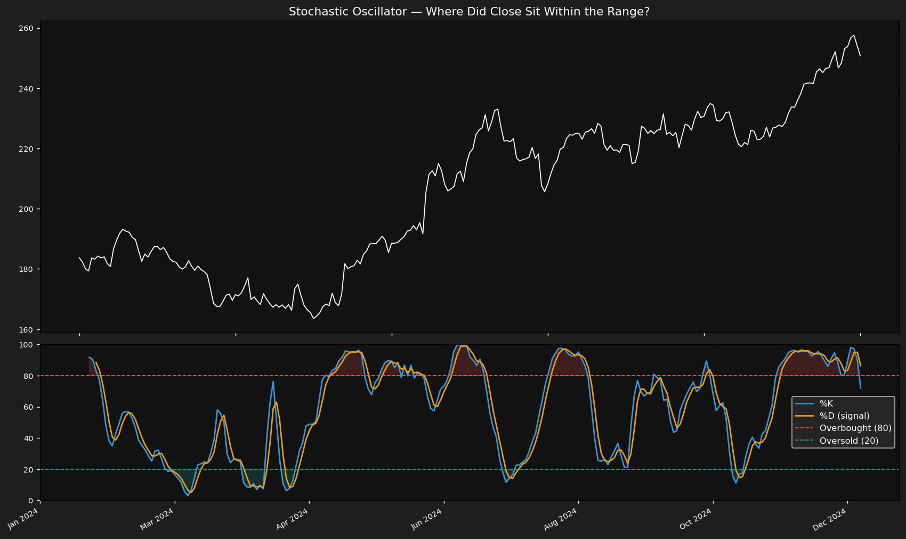
Stochastic Crossovers and Divergence
Stochastic generates signals through crossovers and divergence — similar to MACD: Stochastic Buy Signal:Conditions: 1. Both %K and %D are below 20 (oversold zone)
2. %K crosses ABOVE %D
This signals: Selling exhaustion — price may be ready to bounce
Why the zone requirement matters:
%K crossing %D at RSI=70 → not meaningful (already overbought)
%K crossing %D at RSI=15 → high probability bounce signal ✅
Bullish Stochastic Divergence:
Price: Lower Low (price made new bottom)
Stoch %K: Higher Low (oscillator made a shallower bottom)
→ Selling pressure exhausted, buyers quietly accumulating
Bearish Stochastic Divergence:
Price: Higher High (price made new top)
Stoch %K: Lower High (oscillator failed to confirm)
→ Buying pressure exhausted, distribution phase
# Detect stochastic buy signals
df['stoch_above'] = (df['Stoch_K'] > df['Stoch_D']).astype(int)
df['stoch_cross'] = df['stoch_above'].diff()
Buy signals: crossover in oversold zone
buy_signals = df[(df['stoch_cross'] == 1) & (df['Stoch_K'] < 30)]
sell_signals = df[(df['stoch_cross'] == -1) & (df['Stoch_K'] > 70)]
Plot on price panel
ax1.scatter(buy_signals.index, buy_signals['Close'] * 0.97,
marker='^', color='#26a69a', s=120, zorder=5, label='Stoch Buy')
ax1.scatter(sell_signals.index, sell_signals['Close'] * 1.03,
marker='v', color='#ef5350', s=120, zorder=5, label='Stoch Sell')

Average True Range (ATR): Measuring Volatility Without Direction
ATR measures HOW MUCH price moves on average — without regard to direction: What is True Range?True Range (TR) = maximum of:
1. High - Low (the day's simple range)
2.
High - Previous Close (gap up situations)
3.
Low - Previous Close (gap down situations)
ATR(n) = Exponential Moving Average of TR over n periods
ATR answers: "How many dollars does this stock typically move per day?"
Day 1: Close = $100
Day 2: Gap up open, Low = $105, High = $108
High - Low = $3
Low - Prev Close = $105 - $100 = $5 ← LARGER (the gap is part of the range)
True Range = $5 (includes the overnight gap)
This more accurately represents the full price movement experienced by traders.
import pandas as pd
import matplotlib.pyplot as plt
import yfinance as yf
def calculate_atr(df, period=14):
tr1 = df['High'] - df['Low']
tr2 = abs(df['High'] - df['Close'].shift(1))
tr3 = abs(df['Low'] - df['Close'].shift(1))
true_range = pd.concat([tr1, tr2, tr3], axis=1).max(axis=1)
atr = true_range.ewm(com=period - 1, min_periods=period).mean()
return atr
df = yf.download("AAPL", start="2024-01-01", end="2024-12-31")
df['ATR'] = calculate_atr(df)
fig, (ax1, ax2) = plt.subplots(2, 1, figsize=(16, 9), sharex=True,
gridspec_kw={'height_ratios': [3, 1.5]})
fig.set_facecolor('#1e1e1e')
ax1.set_facecolor('#1e1e1e')
ax1.plot(df.index, df['Close'], color='white', linewidth=1.0)
ax1.set_title('AAPL – Price + ATR (14)', color='white', fontsize=13)
ax1.tick_params(colors='white')
ax1.grid(True, alpha=0.15, color='gray')
ax2.set_facecolor('#1e1e1e')
ax2.plot(df.index, df['ATR'], color='#e74c3c', linewidth=1.5, label='ATR 14')
ax2.fill_between(df.index, df['ATR'], df['ATR'].min(), alpha=0.2, color='#e74c3c')
ax2.axhline(df['ATR'].mean(), color='#f0e68c', linewidth=1.0, linestyle='--',
label=f"Average ATR: ${df['ATR'].mean():.2f}")
ax2.set_ylabel('ATR ($)', color='white', fontsize=9)
ax2.tick_params(colors='white')
ax2.legend(facecolor='#2a2a2a', labelcolor='white', fontsize=9)
ax2.grid(True, alpha=0.15, color='gray')
plt.tight_layout()
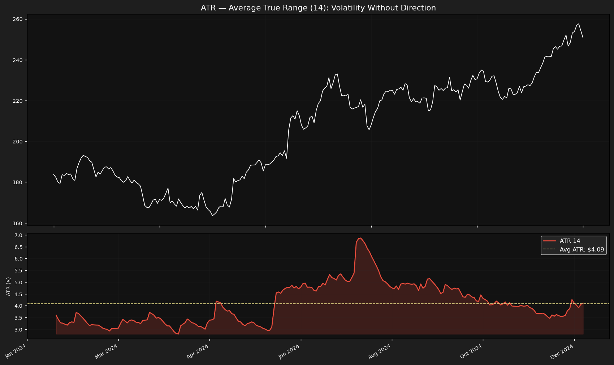
ATR-Based Stop Loss Visualization
ATR provides a volatility-adjusted stop loss that adapts to current market conditions: The Problem with Fixed Stop Losses:Stock A: ATR = $0.50 (very calm)
Stock B: ATR = $5.00 (very volatile)
Fixed stop of $2.00 below entry:
Stock A: Stop at $2.00 = 4x daily range → way too wide (useless)
Stock B: Stop at $2.00 = 0.4x daily range → way too tight (whipsawed out)
Stop Loss = Entry Price - (ATR Multiplier × ATR)
Common multipliers:
1.5x ATR → Tight stop (shorter trades, more risk of being stopped out)
2.0x ATR → Standard stop (balanced)
3.0x ATR → Wide stop (longer trades, less likely to be stopped out)
Risk-Reward Target = Entry + (2 × Stop Distance) → 1:2 risk/reward
import pandas as pd
import matplotlib.pyplot as plt
import yfinance as yf
df = yf.download("AAPL", start="2024-06-01", end="2024-12-31")
df['ATR'] = calculate_atr(df)
Simulate a trade entry
entry_date = df.index[30]
entry_price = float(df.loc[entry_date, 'Close'])
atr_at_entry = float(df.loc[entry_date, 'ATR'])
stop_loss = entry_price - 2.0 * atr_at_entry
take_profit = entry_price + 4.0 * atr_at_entry # 1:2 risk/reward
fig, ax = plt.subplots(figsize=(16, 8))
fig.set_facecolor('#1e1e1e')
ax.set_facecolor('#1e1e1e')
ax.plot(df.index, df['Close'], color='white', linewidth=1.0)
Entry point
ax.scatter([entry_date], [entry_price], color='#f0e68c', s=200, zorder=6,
marker='o', label=f'Entry: ${entry_price:.2f}')
Stop loss line
ax.axhline(stop_loss, color='#ef5350', linewidth=2, linestyle='--',
label=f'Stop Loss: ${stop_loss:.2f} (-2x ATR)')
Take profit line
ax.axhline(take_profit, color='#26a69a', linewidth=2, linestyle='--',
label=f'Take Profit: ${take_profit:.2f} (+4x ATR)')
Risk/reward shading
ax.fill_between(df.index, stop_loss, take_profit, alpha=0.05, color='#26a69a')
atr_val = atr_at_entry
ax.set_title(f'ATR-Based Risk Management (ATR = ${atr_val:.2f})\nStop = 2x ATR, Target = 4x ATR (1:2 Risk/Reward)',
color='white', fontsize=13)
ax.tick_params(colors='white')
ax.legend(facecolor='#2a2a2a', labelcolor='white')
ax.grid(True, alpha=0.15, color='gray')
plt.tight_layout()
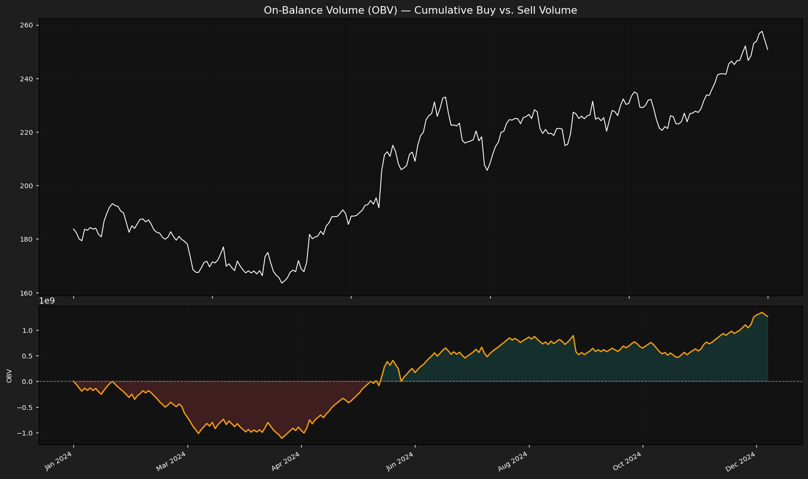
On-Balance Volume (OBV): Cumulative Buy vs. Sell Volume
OBV is a cumulative line that adds volume on up days and subtracts volume on down days: OBV Formula:If Close > Previous Close: OBV = OBV_prev + Volume (up day: add volume)
If Close < Previous Close: OBV = OBV_prev - Volume (down day: subtract volume)
If Close = Previous Close: OBV = OBV_prev (unchanged)
OBV starts at 0 and accumulates
Scenario A: OBV rising while price is FLAT or falling
→ Money is flowing IN (accumulation) even though price hasn't moved yet
→ "Smart money" is quietly buying
→ Price breakout upward likely coming
Scenario B: OBV falling while price is at NEW HIGHS
→ Volume not confirming the rally
→ "Distribution" — institutional selling into retail buying
→ Potential top formation
import pandas as pd
import matplotlib.pyplot as plt
import yfinance as yf
df = yf.download("AAPL", start="2024-01-01", end="2024-12-31")
Calculate OBV
obv = [0]
for i in range(1, len(df)):
if df['Close'].iloc[i] > df['Close'].iloc[i-1]:
obv.append(obv[-1] + df['Volume'].iloc[i])
elif df['Close'].iloc[i] < df['Close'].iloc[i-1]:
obv.append(obv[-1] - df['Volume'].iloc[i])
else:
obv.append(obv[-1])
df['OBV'] = obv
fig, (ax1, ax2) = plt.subplots(2, 1, figsize=(16, 9), sharex=True,
gridspec_kw={'height_ratios': [3, 1.5]})
fig.set_facecolor('#1e1e1e')
ax1.set_facecolor('#1e1e1e')
ax1.plot(df.index, df['Close'], color='white', linewidth=1.0)
ax1.set_title('AAPL – Price + On-Balance Volume (OBV)', color='white', fontsize=13)
ax1.tick_params(colors='white')
ax1.grid(True, alpha=0.15, color='gray')
ax2.set_facecolor('#1e1e1e')
ax2.plot(df.index, df['OBV'], color='#f39c12', linewidth=1.5, label='OBV')
ax2.fill_between(df.index, df['OBV'], 0, where=(df['OBV'] >= 0),
alpha=0.2, color='#26a69a')
ax2.fill_between(df.index, df['OBV'], 0, where=(df['OBV'] < 0),
alpha=0.2, color='#ef5350')
ax2.axhline(0, color='gray', linewidth=0.8, linestyle='--')
ax2.set_ylabel('OBV', color='white', fontsize=9)
ax2.tick_params(colors='white')
ax2.legend(facecolor='#2a2a2a', labelcolor='white')
ax2.grid(True, alpha=0.15, color='gray')
plt.tight_layout()
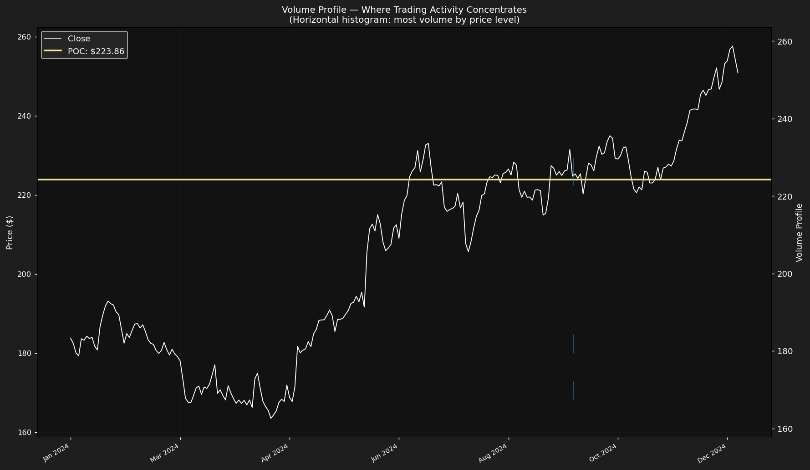
Volume Profile: Visualizing Where Trading Activity Concentrates
Volume Profile is a horizontal histogram showing at which PRICE LEVELS the most volume traded: How Volume Profile Differs from Standard Volume:Standard Volume (time-based, vertical bars):
Shows HOW MUCH traded at each TIME POINT
x-axis = time, y-axis = volume
Volume Profile (price-based, horizontal bars):
Shows HOW MUCH traded at each PRICE LEVEL
x-axis = volume, y-axis = price
Rotated 90° and overlaid on the right side of the price chart
High Volume Node (HVN): ████████████████ ← lots of volume here
→ Strong support or resistance level
→ Price moves slowly through HVNs (lots of orders)
Low Volume Node (LVN): ██ ← very little volume
→ "Price vacuum" — price moves quickly through LVNs
→ Few orders = price accelerates past this level
Point of Control (POC): ████████████████████ ← single most-traded level
→ The single most important price level in the profile
→ Acts as a strong magnet for price
import pandas as pd
import numpy as np
import matplotlib.pyplot as plt
import yfinance as yf
df = yf.download("AAPL", start="2024-01-01", end="2024-12-31")
Create price bins
n_bins = 50
price_min, price_max = df['Low'].min(), df['High'].max()
bins = np.linspace(price_min, price_max, n_bins + 1)
bin_centers = (bins[:-1] + bins[1:]) / 2
Calculate volume at each price level
vol_profile = np.zeros(n_bins)
for _, row in df.iterrows():
in_range = (bin_centers >= row['Low']) & (bin_centers <= row['High'])
if in_range.sum() > 0:
vol_profile[in_range] += row['Volume'] / in_range.sum()
Normalize
vol_profile_norm = vol_profile / vol_profile.max()
fig, ax = plt.subplots(figsize=(16, 10))
fig.set_facecolor('#1e1e1e')
ax.set_facecolor('#1e1e1e')
Price line
ax.plot(df.index, df['Close'], color='white', linewidth=1.0, zorder=5)
Volume profile: horizontal bars on the right
ax_right = ax.twinx()
ax_right.barh(bin_centers, vol_profile_norm * 0.3, # 30% of chart width
height=(price_max - price_min) / n_bins,
left=df.index[-1], color='#3498db', alpha=0.5)
Mark Point of Control
poc_price = bin_centers[vol_profile.argmax()]
ax.axhline(poc_price, color='#f0e68c', linewidth=2, linestyle='-',
label=f'Point of Control (POC): ${poc_price:.2f}', zorder=6)
ax.set_title('AAPL – Price + Volume Profile', color='white', fontsize=13)
ax.tick_params(colors='white')
ax.legend(facecolor='#2a2a2a', labelcolor='white')
ax.grid(True, alpha=0.15, color='gray')
plt.tight_layout()
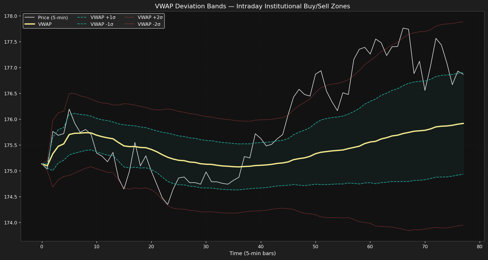
VWAP Deviation Bands: Combining Volume and Volatility
VWAP Deviation Bands extend VWAP with standard deviation bands — an intraday institutional map: Construction:VWAP = Σ(Typical Price × Volume) / Σ(Volume)
Standard Deviation bands:
VWAP + 1σ → First upper deviation (mild overbought intraday)
VWAP + 2σ → Second upper deviation (extreme overbought intraday)
VWAP - 1σ → First lower deviation (mild oversold intraday)
VWAP - 2σ → Second lower deviation (extreme oversold intraday)
Buy Zone: Price near VWAP - 1σ → Buying at a discount to average
Sell Zone: Price near VWAP + 1σ → Selling at a premium to average
Strong Buy: Price at VWAP - 2σ → Extreme intraday discount
Strong Sell: Price at VWAP + 2σ → Extreme intraday premium
Note: VWAP bands reset every day — they are purely intraday tools
def calculate_vwap_bands(df):
df = df.copy()
df['TP'] = (df['High'] + df['Low'] + df['Close']) / 3
df['TP_Vol'] = df['TP'] * df['Volume']
df['TP_Sq_Vol'] = (df['TP'] * 2) df['Volume']
# Group by date
by_date = df.groupby(df.index.date)
df['cum_tp_vol'] = by_date['TP_Vol'].cumsum()
df['cum_vol'] = by_date['Volume'].cumsum()
df['cum_tp2_vol']= by_date['TP_Sq_Vol'].cumsum()
df['VWAP'] = df['cum_tp_vol'] / df['cum_vol']
variance = df['cum_tp2_vol'] / df['cum_vol'] - df['VWAP'] ** 2
df['VWAP_std'] = np.sqrt(variance.clip(lower=0))
df['VWAP_upper1'] = df['VWAP'] + 1 * df['VWAP_std']
df['VWAP_lower1'] = df['VWAP'] - 1 * df['VWAP_std']
df['VWAP_upper2'] = df['VWAP'] + 2 * df['VWAP_std']
df['VWAP_lower2'] = df['VWAP'] - 2 * df['VWAP_std']
return df

Building a Multi-Panel Indicator Dashboard
Assembling all Part 3 indicators into a single professional multi-panel chart:import matplotlib.pyplot as plt
import matplotlib.gridspec as gridspec
import pandas as pd
import yfinance as yf
df = yf.download("AAPL", start="2024-01-01", end="2024-12-31")
Calculate all indicators
df['SMA_20'] = df['Close'].rolling(20).mean()
df['BB_mid'] = df['Close'].rolling(20).mean()
df['BB_upper']= df['BB_mid'] + 2 * df['Close'].rolling(20).std()
df['BB_lower']= df['BB_mid'] - 2 * df['Close'].rolling(20).std()
df['RSI'] = calculate_rsi(df['Close'])
df['MACD'], df['Signal'], df['Hist'] = calculate_macd(df['Close'])
Build figure
fig = plt.figure(figsize=(20, 14))
fig.set_facecolor('#1e1e1e')
gs = gridspec.GridSpec(4, 1, height_ratios=[5, 1.5, 1.5, 1.5], hspace=0.05)
ax_p = fig.add_subplot(gs[0])
ax_v = fig.add_subplot(gs[1], sharex=ax_p)
ax_r = fig.add_subplot(gs[2], sharex=ax_p)
ax_m = fig.add_subplot(gs[3], sharex=ax_p)
for ax in [ax_p, ax_v, ax_r, ax_m]:
ax.set_facecolor('#1e1e1e')
ax.tick_params(colors='white', labelsize=8)
ax.grid(True, alpha=0.12, color='gray')
Price + Bollinger Bands
ax_p.plot(df.index, df['Close'], color='white', linewidth=0.8)
ax_p.plot(df.index, df['SMA_20'], color='#f0e68c', linewidth=1.2, label='SMA 20')
ax_p.plot(df.index, df['BB_upper'], color='#3498db', linewidth=1.0, linestyle='--')
ax_p.plot(df.index, df['BB_lower'], color='#3498db', linewidth=1.0, linestyle='--')
ax_p.fill_between(df.index, df['BB_upper'], df['BB_lower'], alpha=0.05, color='#3498db')
ax_p.set_title('AAPL – Complete 4-Panel Trading Dashboard', color='white', fontsize=14)
ax_p.legend(facecolor='#2a2a2a', labelcolor='white', fontsize=9)
Volume
colors_v = ['#26a69a' if c >= o else '#ef5350'
for c, o in zip(df['Close'], df['Open'])]
ax_v.bar(df.index, df['Volume'], color=colors_v, alpha=0.7, width=0.8)
ax_v.set_ylabel('Volume', color='white', fontsize=8)
RSI
ax_r.plot(df.index, df['RSI'], color='#9b59b6', linewidth=1.3)
ax_r.axhline(70, color='#ef5350', linewidth=0.8, linestyle='--')
ax_r.axhline(30, color='#26a69a', linewidth=0.8, linestyle='--')
ax_r.fill_between(df.index, df['RSI'], 70, where=(df['RSI'] >= 70), alpha=0.2, color='#ef5350')
ax_r.fill_between(df.index, df['RSI'], 30, where=(df['RSI'] <= 30), alpha=0.2, color='#26a69a')
ax_r.set_ylim(0, 100)
ax_r.set_ylabel('RSI', color='white', fontsize=8)
MACD
hist_colors = ['#26a69a' if v >= 0 else '#ef5350' for v in df['Hist']]
ax_m.bar(df.index, df['Hist'], color=hist_colors, alpha=0.7, width=0.8)
ax_m.plot(df.index, df['MACD'], color='#3498db', linewidth=1.3, label='MACD')
ax_m.plot(df.index, df['Signal'],color='#f39c12', linewidth=1.3, label='Signal')
ax_m.axhline(0, color='gray', linewidth=0.6)
ax_m.set_ylabel('MACD', color='white', fontsize=8)
ax_m.legend(facecolor='#2a2a2a', labelcolor='white', fontsize=8)
plt.setp(ax_p.get_xticklabels(), visible=False)
plt.setp(ax_v.get_xticklabels(), visible=False)
plt.setp(ax_r.get_xticklabels(), visible=False)
plt.tight_layout()
plt.savefig('trading_dashboard.png', dpi=150, bbox_inches='tight',
facecolor='#1e1e1e')
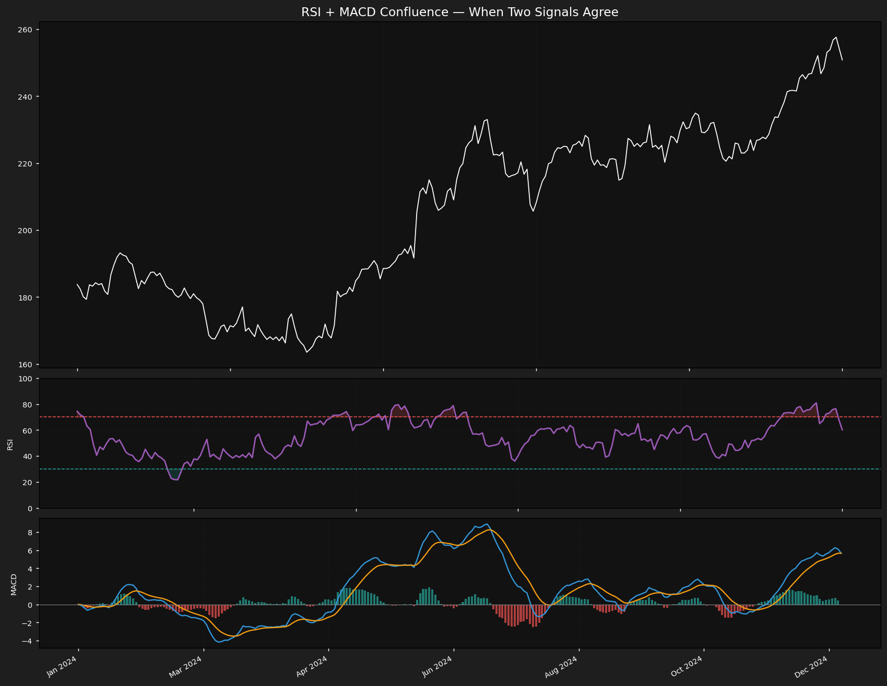
Indicator Combinations: RSI + MACD Convergence
When RSI and MACD both signal at the same time, the combined visual is far more convincing: Confluent Bullish Setup:Three-Panel View:
Price Panel: Price forms a bullish candlestick pattern (e.g., Hammer) ✅
RSI Panel: RSI crossing up through 30 (exiting oversold zone) ✅
MACD Panel: MACD line crossing above Signal line (bullish crossover) ✅
Three independent indicators agree → HIGH CONVICTION setup
Price Panel: Price breaks to new all-time high ✅
RSI Panel: RSI at 78 (overbought, but no divergence) ⚠️
MACD Panel: MACD histogram bars SHRINKING (momentum fading) ❌
Two out of three agree → MIXED signal → reduce position size, tighten stop
# Score each indicator: +1 bullish, -1 bearish, 0 neutral
def score_rsi(rsi_val):
if rsi_val < 30: return +1 # Oversold → potential buy
if rsi_val > 70: return -1 # Overbought → potential sell
return 0
def score_macd(macd_val, signal_val):
if macd_val > signal_val: return +1 # Bullish alignment
return -1
def score_price_vs_sma200(price, sma200):
if price > sma200: return +1 # Above 200-day MA → bull trend
return -1
Composite score: -3 to +3
df['Score'] = (
df['RSI'].apply(score_rsi) +
df.apply(lambda r: score_macd(r['MACD'], r['Signal']), axis=1) +
df.apply(lambda r: score_price_vs_sma200(r['Close'], r['SMA_200']), axis=1)
)
Color the price candles by composite score
high_conviction_buys = df[df['Score'] == 3]
high_conviction_sells = df[df['Score'] == -3]
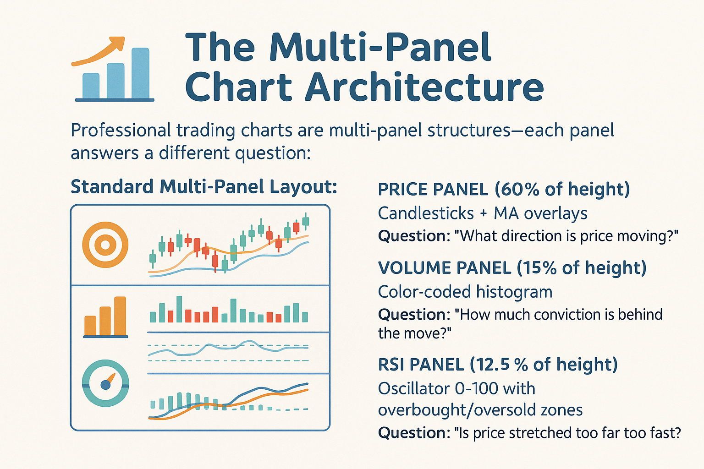
Part 3 Summary & Preview of Part 4
Complete Reference: All Part 3 Indicators| Indicator | Panel | Scale | Key Levels | Signals |
|---|---|---|---|---|
| RSI | Sub-panel | 0–100 | 70 (OB), 50, 30 (OS) | Crossover of zones, divergence |
| MACD | Sub-panel | Price units | Zero line | Line/signal crossover, histogram shrink |
| Bollinger Bands | Price overlay | Price | Upper/lower bands | Walk, squeeze, W-bottom |
| Stochastic | Sub-panel | 0–100 | 80 (OB), 20 (OS) | %K/%D crossover in zones |
| ATR | Sub-panel | Price units | Rolling average | Stop placement, volatility detection |
| OBV | Sub-panel | Cumulative | Trend direction | Divergence from price |
| Volume Profile | Price side bar | Volume | HVN, LVN, POC | Support/resistance identification |
| VWAP Bands | Intraday overlay | Price | ±1σ, ±2σ | Intraday buy/sell zones |
In Part 4, we go beyond individual indicators to:
- 📐 Chart Patterns — geometric shapes: Head & Shoulders, Cup & Handle, Triangles, Flags
- 🌊 Elliott Wave Theory — fractal wave structure across all time frames
- 🎯 Pattern + Indicator Confirmation — why two signals beat one
- 🖥️ Full Interactive Dashboard — building the complete 4-panel Plotly dashboard
- 📈 Backtesting Visualization — equity curves, drawdown charts, return distributions
"No single indicator is a crystal ball. But three indicators all saying the same thing at the same time? That's when experienced traders get serious." — Technical Trading Practicum
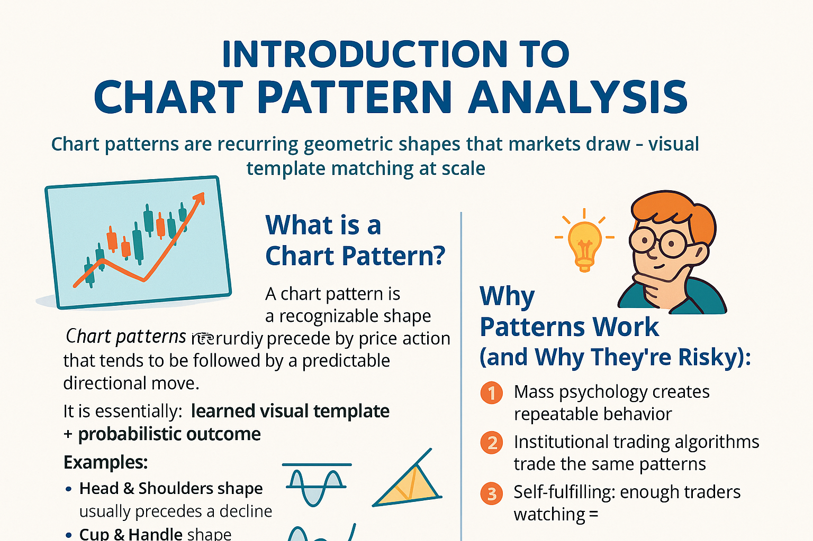
Introduction to Chart Pattern Analysis
Chart patterns are recurring geometric shapes that markets draw — visual template matching at scale: What is a Chart Pattern?A chart pattern is a recognizable shape formed by price action over time
that tends to be followed by a predictable directional move.
It is essentially: learned visual template + probabilistic outcome
Examples:
Head & Shoulders shape → usually precedes a decline
Cup & Handle shape → usually precedes a rally
Triangle shape → usually precedes a breakout (direction varies)
WHY THEY WORK:
1. Mass psychology creates repeatable behavior
2. Institutional trading algorithms trade the same patterns
3. Self-fulfilling: enough traders watching = enough orders to make them real
4. Represent measurable supply/demand imbalances
WHY THEY FAIL:
1. Never work 100% of the time
2. Pattern identification is subjective ("in the eye of the beholder")
3. Market context matters enormously (same pattern in a bull vs. bear market)
4. The higher the timeframe, the more reliable; noise on 5-min charts
| Category | Definition | Examples |
|---|---|---|
| Reversal Patterns | Signal end of current trend | Head & Shoulders, Double Top/Bottom |
| Continuation Patterns | Signal temporary pause in current trend | Flag, Pennant, Cup & Handle |
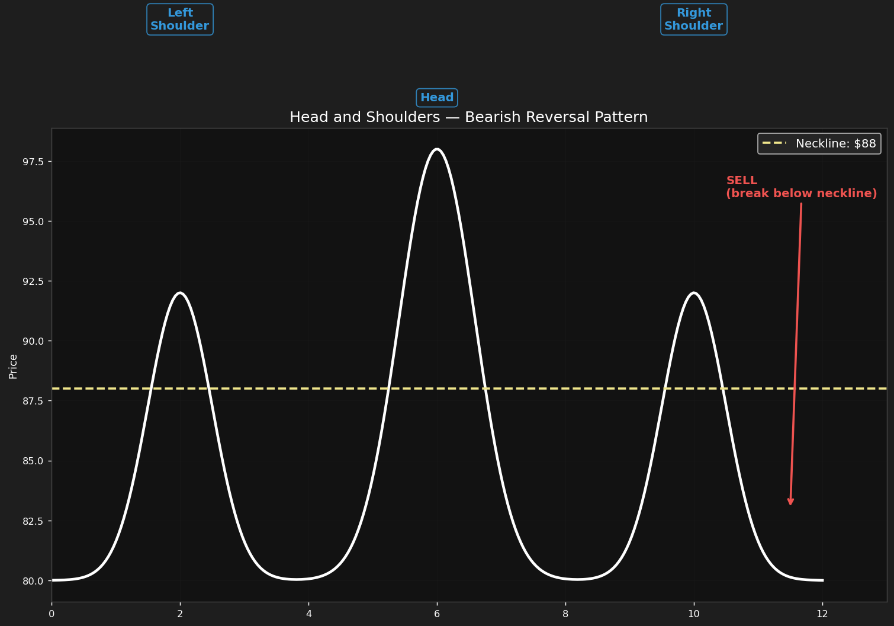
Head and Shoulders: The King of Reversal Patterns
The Head and Shoulders top is the most recognized and widely respected bearish reversal pattern: Anatomy: Head
/ \
Left / \ Right
Shoulder Shoulder
/\ /\
/ \ / \ ← Approximately same height
/ \──────/ \
Neckline ← Support line through the two troughs
\
\ ← Breakdown below neckline = SELL SIGNAL
\
1. Left Shoulder: Price rallies to a high, then pulls back
- Head: Price rallies to a HIGHER high (the peak), then pulls back
- Right Shoulder: Price attempts to rally again, but only reaches APPROX same height as left shoulder
- Neckline: Line connecting the two pullback lows (between left shoulder and head, and head and right shoulder)
- Breakdown: Price closes below the neckline → bearish signal activated
import matplotlib.pyplot as plt
import numpy as np
def draw_head_shoulders(ax):
"""Stylized Head and Shoulders pattern"""
# Left shoulder
x_ls = np.linspace(0, 3, 50)
y_ls = -((x_ls - 1.5)*2) 4 + 100
# Head
x_h = np.linspace(3, 7, 80)
y_h = -((x_h - 5)*2) 5 + 115
# Right shoulder
x_rs = np.linspace(7, 10, 50)
y_rs = -((x_rs - 8.5)*2) 4 + 100
# Neckline (flat between the troughs)
neckline_y = 88
x_nk = np.array([1.5, 9.5])
y_nk = np.array([neckline_y, neckline_y])
ax.plot(x_ls, y_ls, color='white', linewidth=2)
ax.plot(x_h, y_h, color='white', linewidth=2)
ax.plot(x_rs, y_rs, color='white', linewidth=2)
ax.plot(x_nk, y_nk, color='#f0e68c', linewidth=2, linestyle='--', label='Neckline')
# Breakdown
x_break = np.linspace(9.5, 12, 30)
y_break = np.linspace(neckline_y, neckline_y - 20, 30)
ax.plot(x_break, y_break, color='#ef5350', linewidth=2, label='Breakdown')
# Labels
ax.text(1.5, 102, 'Left\nShoulder', color='#3498db', ha='center', fontsize=10)
ax.text(5, 117, 'Head', color='#ef5350', ha='center', fontsize=10, fontweight='bold')
ax.text(8.5, 102, 'Right\nShoulder',color='#3498db', ha='center', fontsize=10)
ax.annotate('SELL signal:\nBreak below neckline',
xy=(10.5, neckline_y - 5), xytext=(10, neckline_y + 10),
color='#ef5350', fontsize=9,
arrowprops=dict(arrowstyle='->', color='#ef5350'))
fig, ax = plt.subplots(figsize=(14, 7))
fig.set_facecolor('#1e1e1e')
ax.set_facecolor('#1e1e1e')
draw_head_shoulders(ax)
ax.set_title('Head and Shoulders — Bearish Reversal Pattern', color='white', fontsize=14)
ax.tick_params(colors='white')
ax.legend(facecolor='#2a2a2a', labelcolor='white')
ax.set_ylabel('Price', color='white')
plt.tight_layout()
Once price breaks below the neckline, the projected target is:
Target = Neckline Price - (Head Price - Neckline Price)
In other words: the pattern projects a move down equal to the height of the head above the neckline.
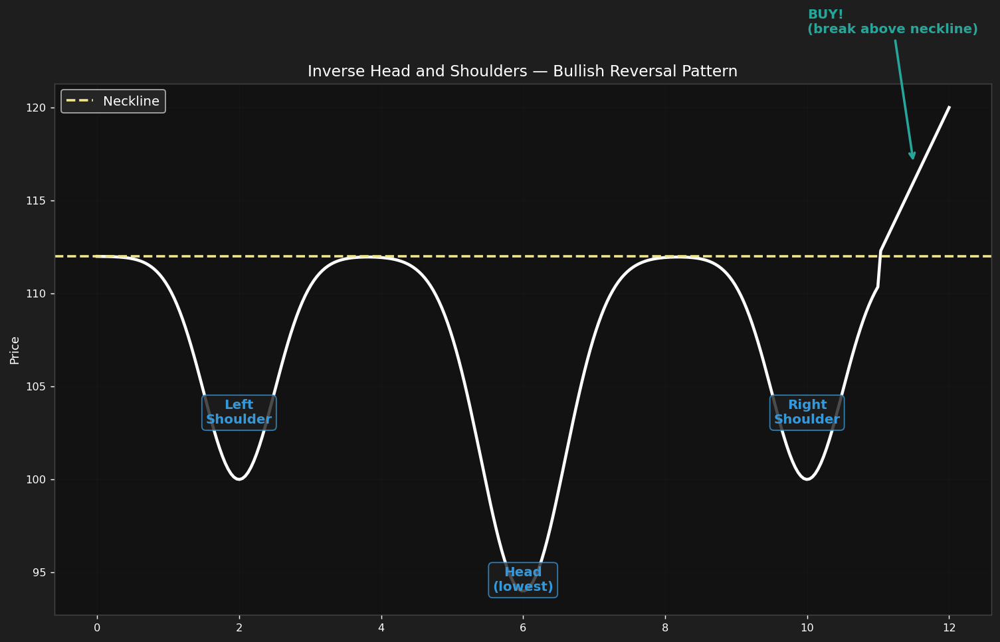
Inverse Head and Shoulders: The Bullish Mirror
The Inverse Head and Shoulders is the exact geometric reverse — a bullish reversal from a downtrend: Anatomy: Neckline ─ ─ ─ ─ ─ ─ ─ ─ ─ ─ ← Resistance line
/ \ /
/ \ Head / ← Breakout above neckline = BUY signal
Left \ / \ /
Shoulder \ / \ /
V \──────/ Right Shoulder
/
\
/
\
/
\
(lowest point of Head)
- Forms at the END of a downtrend (not an uptrend)
- Head is the LOWEST point (not the highest)
- Breakout is to the UPSIDE (price closes above the neckline)
- Volume typically increases on the breakout to confirm
import matplotlib.pyplot as plt
import numpy as np
fig, ax = plt.subplots(figsize=(14, 7))
fig.set_facecolor('#1e1e1e')
ax.set_facecolor('#1e1e1e')
Inverse H&S: mirror of the regular one
t = np.linspace(0, 12, 300)
neckline_y = 112
Left shoulder (trough)
y_ls = neckline_y - 12 np.exp(-((t - 1.5)*2) / 0.5)
Head (deeper trough)
y_head = y_ls - 15 np.exp(-((t - 5)*2) / 0.8)
Right shoulder (shallow trough)
y_rs = y_head - 12 np.exp(-((t - 8.5)*2) / 0.5)
Combine
price = np.maximum(y_ls, np.maximum(y_head, y_rs))
price = np.clip(price, 85, 130)
ax.plot(t, price, color='white', linewidth=2, label='Price')
ax.axhline(neckline_y, color='#f0e68c', linewidth=2, linestyle='--', label='Neckline')
Breakout
ax.annotate('', xy=(11, neckline_y + 10), xytext=(10, neckline_y),
arrowprops=dict(arrowstyle='->', color='#26a69a', lw=2.5))
ax.text(10.5, neckline_y + 12, 'BUY\nBreakout!', color='#26a69a', fontsize=11, fontweight='bold')
Labels
ax.text(1.5, 95, 'Left\nShoulder', color='#3498db', ha='center', fontsize=10)
ax.text(5, 88, 'Head\n(lowest)', color='#ef5350', ha='center', fontsize=10, fontweight='bold')
ax.text(8.5, 95, 'Right\nShoulder',color='#3498db', ha='center', fontsize=10)
ax.set_title('Inverse Head and Shoulders — Bullish Reversal Pattern', color='white', fontsize=13)
ax.tick_params(colors='white')
ax.legend(facecolor='#2a2a2a', labelcolor='white')
plt.tight_layout()
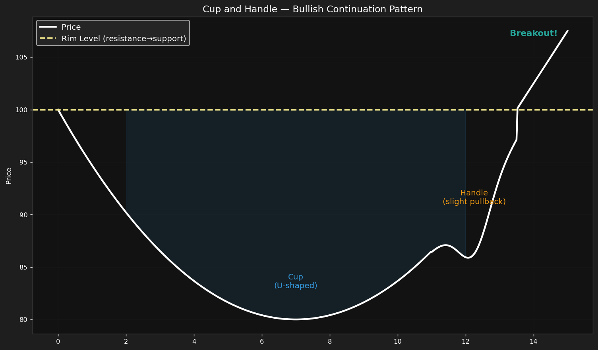
Cup and Handle: The Rounding Bottom
The Cup and Handle is one of the most reliably bullish chart patterns — a slow, gradual recovery: Anatomy: Left rim Right rim
─────────────────────────────
\ /────── ← BREAKOUT above rim
\ Cup /───── ← Handle (small pullback)
\ (U-shape)/
\ /
\ /
────────
(The cup bottom)
Formation time: Weeks to MONTHS (longer = more reliable)
Handle depth: 10-15% retracement from the right rim
- The U-shape (not a V-shape) shows a gradual, orderly recovery
- V-shaped recoveries are too sharp — they suggest panic buying, not accumulation
- The handle represents a brief consolidation/shakeout before the final breakout
- Volume should increase on the breakout above the rim — confirms real demand
import numpy as np
import matplotlib.pyplot as plt
t = np.linspace(0, 15, 500)
Create cup: U-shaped curve
cup_depth = 20
cup_center = 7
cup_y = 100 + cup_depth * ((t - cup_center)2 / (cup_center2)) - cup_depth
cup_y = np.clip(cup_y, 80, 105)
Create handle: small pullback from the right rim
handle_mask = (t >= 11) & (t <= 13.5)
handle_y = cup_y.copy()
handle_y[handle_mask] = cup_y[handle_mask] - 5 np.exp(-((t[handle_mask] - 12.25)*2) / 0.4)
Breakout
breakout_mask = t >= 13.5
handle_y[breakout_mask] = 100 + (t[breakout_mask] - 13.5) * 4
fig, ax = plt.subplots(figsize=(14, 7))
fig.set_facecolor('#1e1e1e')
ax.set_facecolor('#1e1e1e')
ax.plot(t, handle_y, color='white', linewidth=2)
ax.axhline(100, color='#f0e68c', linewidth=1.5, linestyle='--', label='Rim Level (resistance → support)')
Shade the cup
cup_x = t[(t >= 2) & (t <= 12)]
cup_vals = handle_y[(t >= 2) & (t <= 12)]
ax.fill_between(cup_x, cup_vals, 100, alpha=0.1, color='#3498db', label='Cup')
Annotations
ax.text(7, 83, 'Cup Bottom\n(rounded U-shape)', color='#3498db', ha='center', fontsize=10)
ax.text(12.25, 91, 'Handle\n(slight pullback)', color='#f39c12', ha='center', fontsize=10)
ax.text(14, 107, 'Breakout!\n(above rim)', color='#26a69a', ha='center', fontsize=10, fontweight='bold')
ax.set_title('Cup and Handle — Bullish Continuation Pattern', color='white', fontsize=13)
ax.set_ylabel('Price', color='white')
ax.tick_params(colors='white')
ax.legend(facecolor='#2a2a2a', labelcolor='white')
plt.tight_layout()
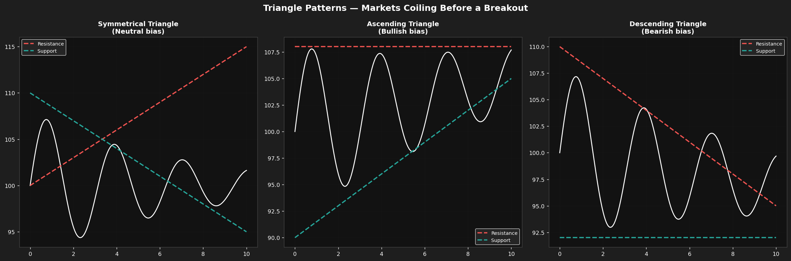
Triangle Patterns: Symmetrical, Ascending, Descending
Triangles form when price makes progressively narrower swings — the market is "coiling" before a breakout: Three Triangle Variants:SYMMETRICAL ASCENDING DESCENDING
Lower highs + Higher lows Flat top + Higher lows Lower highs + Flat bottom
╲ ╱ ──────────── ╲
╲ ╱ ╱ ╱ ╲────────
╲ ╱ ╱ ╱ ╱ ╲
╲ ╱ ╱ ╱ ╱ ╲────────
╲ ╱ ╱─────────╱ ╲
─────
Breakout: Either direction Breakout: Usually UP Breakout: Usually DOWN
Bias: Neutral Bias: Bullish Bias: Bearish
(follow the trend)
import matplotlib.pyplot as plt
import numpy as np
fig, axes = plt.subplots(1, 3, figsize=(18, 6))
fig.set_facecolor('#1e1e1e')
titles = ['Symmetrical Triangle', 'Ascending Triangle', 'Descending Triangle']
colors = ['white', 'white', 'white']
for ax, title in zip(axes, titles):
ax.set_facecolor('#1e1e1e')
ax.set_title(title, color='white', fontsize=11, fontweight='bold')
ax.tick_params(colors='white')
ax.grid(True, alpha=0.1, color='gray')
t = np.linspace(0, 10, 100)
Symmetrical
upper_s = 110 - t * 1.5
lower_s = 90 + t * 1.5
price_s = 100 + 10 np.sin(t 2) np.exp(-t 0.15)
axes[0].plot(t, price_s, color='white', linewidth=1.5)
axes[0].plot(t, upper_s, color='#ef5350', linewidth=1.5, linestyle='--', label='Resistance (descending)')
axes[0].plot(t, lower_s, color='#26a69a', linewidth=1.5, linestyle='--', label='Support (ascending)')
axes[0].legend(facecolor='#2a2a2a', labelcolor='white', fontsize=8)
Ascending
axes[1].plot(t, np.full_like(t, 108), color='#ef5350', linewidth=2, linestyle='--', label='Flat resistance')
lower_a = 90 + t * 1.5
axes[1].plot(t, lower_a, color='#26a69a', linewidth=2, linestyle='--', label='Rising support')
price_a = 100 + 8 np.sin(t 2) np.exp(-t 0.1) + t * 0.5
axes[1].plot(t, price_a, color='white', linewidth=1.5)
axes[1].legend(facecolor='#2a2a2a', labelcolor='white', fontsize=8)
Descending
upper_d = 110 - t * 1.5
axes[2].plot(t, upper_d, color='#ef5350', linewidth=2, linestyle='--', label='Falling resistance')
axes[2].plot(t, np.full_like(t, 92), color='#26a69a', linewidth=2, linestyle='--', label='Flat support')
price_d = 100 + 8 np.sin(t 2) np.exp(-t 0.1) - t * 0.3
axes[2].plot(t, price_d, color='white', linewidth=1.5)
axes[2].legend(facecolor='#2a2a2a', labelcolor='white', fontsize=8)
plt.suptitle('Triangle Patterns: Three Variations', color='white', fontsize=14, fontweight='bold')
plt.tight_layout()
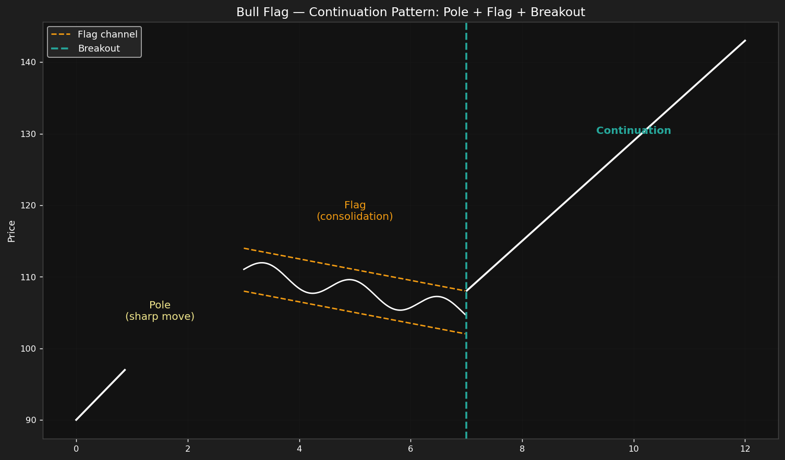
Flag and Pennant Patterns: Brief Pauses in Strong Trends
Flags and pennants are continuation patterns that form after a sharp directional move: Anatomy:BULL FLAG: BEAR FLAG:
↑ Flag Pole ↓ Flag Pole
╱ ╲
╱ ╲
╱ ╲
╱ ────────────────── Flag channel ╲ ──────── (rises slightly)
────────────────── (slight downward drift) ──────
────────────────── (consolidation) ╲────────────
↓ ↓
Breakout UP (continuation of uptrend) Breakdown DOWN (continuation of downtrend)
Target = Entry + Flag Pole Height
If flag pole = $20 rise
Entry at breakout = $100
Target = $100 + $20 = $120
This is called the "measured move" — the expected magnitude of the next leg
import numpy as np
import matplotlib.pyplot as plt
t = np.linspace(0, 12, 400)
fig, (ax1, ax2) = plt.subplots(1, 2, figsize=(16, 7))
fig.set_facecolor('#1e1e1e')
Bull Flag
pole_mask = t < 3
flag_mask = (t >= 3) & (t <= 7)
cont_mask = t >= 7
price_bf = np.zeros_like(t)
price_bf[pole_mask] = 90 + t[pole_mask] * 8 # Sharp rise (pole)
price_bf[flag_mask] = price_bf[pole_mask].max() - (t[flag_mask] - 3) * 1.5 + \
1.5 np.sin((t[flag_mask] - 3) 4) # Slight drift + noise
price_bf[cont_mask] = price_bf[flag_mask][-1] + (t[cont_mask] - 7) * 7 # Continuation
ax1.set_facecolor('#1e1e1e')
ax1.plot(t, price_bf, color='white', linewidth=2, label='Price')
ax1.axvspan(3, 7, alpha=0.1, color='#3498db', label='Flag (consolidation)')
ax1.axvline(7, color='#26a69a', linewidth=2, linestyle='--', label='Breakout')
ax1.set_title('Bull Flag — Continuation Pattern', color='white', fontsize=12)
ax1.annotate('Pole', xy=(1.5, 104), color='#f39c12', fontsize=11, ha='center')
ax1.annotate('Flag', xy=(5, 122), color='#3498db', fontsize=11, ha='center')
ax1.annotate('Continuation', xy=(10, 135), color='#26a69a', fontsize=10, ha='center')
ax1.tick_params(colors='white')
ax1.legend(facecolor='#2a2a2a', labelcolor='white', fontsize=9)
ax1.grid(True, alpha=0.1, color='gray')
Pennant (converging trendlines during consolidation)
ax2.set_facecolor('#1e1e1e')
price_p = price_bf.copy()
upper_p = np.where(flag_mask, price_bf[flag_mask][0] - (t - 3) * 0.5, np.nan)
lower_p = np.where(flag_mask, price_bf[flag_mask][0] - (t - 3) * 2.5, np.nan)
ax2.plot(t, price_bf, color='white', linewidth=1.5)
ax2.plot(t, upper_p, color='#f39c12', linewidth=1.5, linestyle='--')
ax2.plot(t, lower_p, color='#f39c12', linewidth=1.5, linestyle='--', label='Pennant trendlines')
ax2.axvline(7, color='#26a69a', linewidth=2, linestyle='--', label='Breakout')
ax2.set_title('Pennant — Similar to Flag, Converging Lines', color='white', fontsize=12)
ax2.tick_params(colors='white')
ax2.legend(facecolor='#2a2a2a', labelcolor='white', fontsize=9)
ax2.grid(True, alpha=0.1, color='gray')
plt.suptitle('Flag and Pennant Continuation Patterns', color='white', fontsize=14, fontweight='bold')
plt.tight_layout()
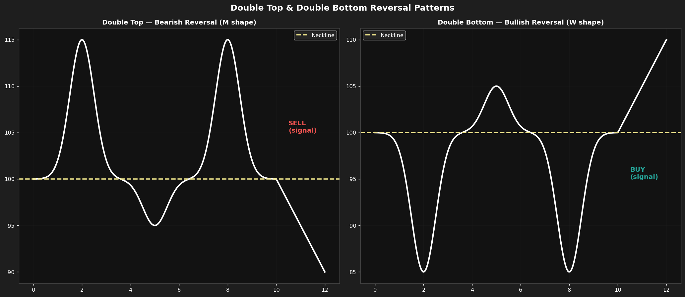
Double Top and Double Bottom: Testing Limits Twice
Double tops and bottoms test a key level twice — and fail the second time: Double Top (Bearish Reversal) — "M" Shape: A B
/\ /\ ← Both peaks at approximately the same price
/ \ / \
/ \ / \
/ \────/ \
↑ \
Neckline \─── ← Breakdown below neckline = SELL
(support at the trough
between the two peaks)
↑ Breakout above neckline = BUY
Neckline ─────────────────
\ / \ /
\ / \ /
\──/ \──/
A B
← Both troughs at approximately the same price
import matplotlib.pyplot as plt
import numpy as np
fig, (ax1, ax2) = plt.subplots(1, 2, figsize=(16, 7))
fig.set_facecolor('#1e1e1e')
t = np.linspace(0, 12, 300)
neckline = 100
Double Top (M shape)
dt_price = neckline + 15 * (np.exp(-((t-2)2)/0.5) + np.exp(-((t-8)2)/0.5)) - \
5 (np.exp(-((t-5)*2)/0.5))
dt_price = np.where(t > 10, neckline - (t - 10) * 5, dt_price)
ax1.set_facecolor('#1e1e1e')
ax1.plot(t, dt_price, color='white', linewidth=2)
ax1.axhline(neckline, color='#f0e68c', linewidth=2, linestyle='--', label=f'Neckline: ${neckline}')
ax1.scatter([2, 8], [neckline + 15, neckline + 15], color='#ef5350', s=200, zorder=6, label='Peaks (A & B)')
ax1.annotate('SELL\n(breakdown)', xy=(10.5, neckline - 5), color='#ef5350', fontsize=11, fontweight='bold')
ax1.set_title('Double Top — Bearish Reversal (M shape)', color='white', fontsize=12)
ax1.legend(facecolor='#2a2a2a', labelcolor='white')
ax1.tick_params(colors='white')
ax1.grid(True, alpha=0.1, color='gray')
Double Bottom (W shape) — mirror
db_price = neckline - 15 * (np.exp(-((t-2)2)/0.5) + np.exp(-((t-8)2)/0.5)) + \
5 (np.exp(-((t-5)*2)/0.5))
db_price = np.where(t > 10, neckline + (t - 10) * 5, db_price)
ax2.set_facecolor('#1e1e1e')
ax2.plot(t, db_price, color='white', linewidth=2)
ax2.axhline(neckline, color='#f0e68c', linewidth=2, linestyle='--', label=f'Neckline: ${neckline}')
ax2.scatter([2, 8], [neckline - 15, neckline - 15], color='#26a69a', s=200, zorder=6, label='Troughs (A & B)')
ax2.annotate('BUY\n(breakout)', xy=(10.5, neckline + 5), color='#26a69a', fontsize=11, fontweight='bold')
ax2.set_title('Double Bottom — Bullish Reversal (W shape)', color='white', fontsize=12)
ax2.legend(facecolor='#2a2a2a', labelcolor='white')
ax2.tick_params(colors='white')
ax2.grid(True, alpha=0.1, color='gray')
plt.suptitle('Double Top & Bottom Reversal Patterns', color='white', fontsize=14, fontweight='bold')
plt.tight_layout()
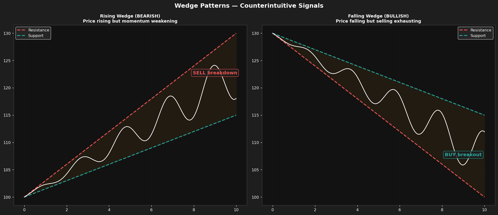
Wedge Patterns: Rising and Falling
Wedges are converging trendlines that slope in the SAME direction — counterintuitively: The Key Insight — Rising Wedge Is BEARISH:RISING WEDGE (Bearish): FALLING WEDGE (Bullish):
─────────────────╲ ╲────────────────
──────────────────╲ ← price ╲─────────────── ← price
╲ ╲
Both trendlines ╲ Both trendlines ╲
slope UPWARD, ╲ slope DOWNWARD, ╲──
but converge ↓ but converge ↑
→ BREAKDOWN coming → Bearish → BREAKOUT coming → Bullish
REASONING: REASONING:
Price making higher highs Price making lower lows
BUT higher lows are getting BUT lower highs are getting
increasingly shallow → less extreme →
buying pressure is WEAKENING selling pressure is EXHAUSTING
even as price rises even as price falls
import matplotlib.pyplot as plt
import numpy as np
fig, (ax1, ax2) = plt.subplots(1, 2, figsize=(16, 7))
fig.set_facecolor('#1e1e1e')
t = np.linspace(0, 10, 200)
Rising wedge
upper_rw = 100 + t * 3
lower_rw = 100 + t * 1.5
for ax, upper, lower, title, signal_color, signal_text in [
(ax1, upper_rw, lower_rw, 'Rising Wedge (BEARISH — converging upward)', '#ef5350', 'SELL breakdown'),
(ax2, 130 - t3, 130 - t1.5, 'Falling Wedge (BULLISH — converging downward)', '#26a69a', 'BUY breakout')
]:
ax.set_facecolor('#1e1e1e')
ax.plot(t, upper, color='#ef5350' if 'Rising' in title else '#26a69a', linewidth=2, linestyle='--', label='Resistance')
ax.plot(t, lower, color='#26a69a' if 'Rising' in title else '#ef5350', linewidth=2, linestyle='--', label='Support')
ax.fill_between(t, upper, lower, alpha=0.07, color='#f39c12')
# Synthesize price bouncing within the wedge
price_noise = (upper + lower) / 2 + (upper - lower) 0.3 np.sin(t * 3)
ax.plot(t, price_noise, color='white', linewidth=1.5, label='Price')
# Breakout arrow
y_break = lower[-1] - 8 if 'Rising' in title else upper[-1] + 8
ax.annotate('', xy=(10, y_break), xytext=(9, lower[-1] if 'Rising' in title else upper[-1]),
arrowprops=dict(arrowstyle='->', color=signal_color, lw=2.5))
ax.text(9.5, y_break - 2 if 'Rising' in title else y_break + 1,
signal_text, color=signal_color, fontsize=11, fontweight='bold')
ax.set_title(title, color='white', fontsize=11, fontweight='bold')
ax.tick_params(colors='white')
ax.legend(facecolor='#2a2a2a', labelcolor='white', fontsize=9)
ax.grid(True, alpha=0.1, color='gray')
plt.suptitle('Wedge Patterns', color='white', fontsize=14, fontweight='bold')
plt.tight_layout()
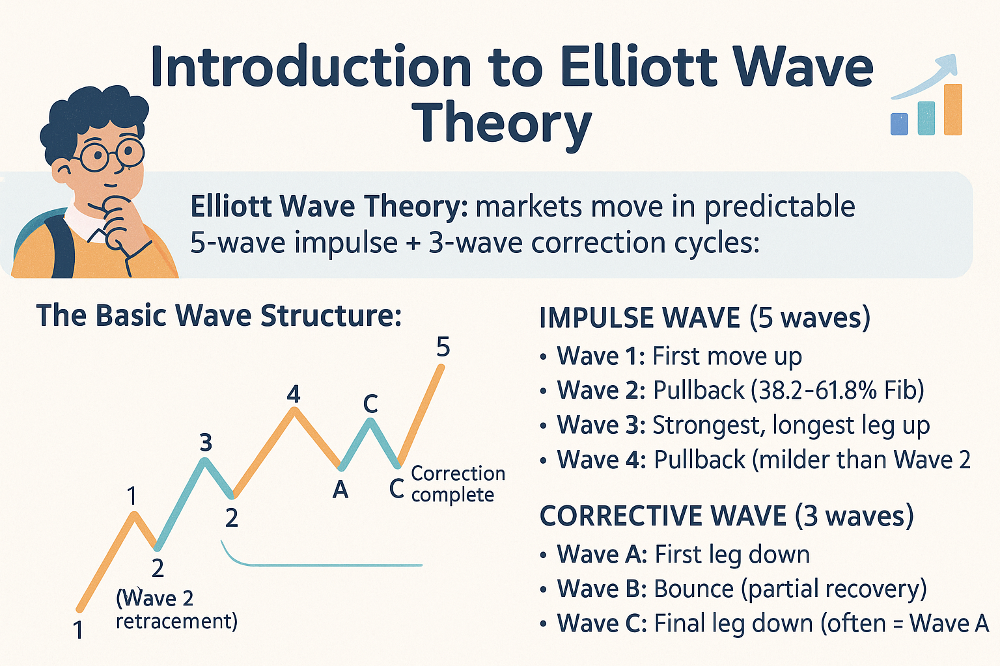
Introduction to Elliott Wave Theory
Elliott Wave Theory: markets move in predictable 5-wave impulse + 3-wave correction cycles: The Basic Wave Structure: 5
/ \
3 / \ A
/ \ / \ / \
/ 4 \ / B
/ \ / \
2 \ / C ← Correction complete
/\ /
/ \ /
/ \/
1 (Wave 2 retracement)
IMPULSE WAVE (5 waves): CORRECTIVE WAVE (3 waves):
Wave 1: First move up Wave A: First leg down
Wave 2: Pullback (38.2-61.8% Fib) Wave B: Bounce (partial recovery)
Wave 3: Strongest, longest leg up Wave C: Final leg down (often = Wave A length)
Wave 4: Pullback (milder than 2)
Wave 5: Final push up
1. Wave 2 can NEVER retrace below the start of Wave 1
- Wave 3 can NEVER be the shortest impulse wave (1, 3, or 5)
- Wave 4 can NEVER overlap Wave 1's price territory
import matplotlib.pyplot as plt
import numpy as np
Define wave turning points
points = {
'Start': (0, 100),
'1': (2, 115),
'2': (3, 107), # Fib 50% retracement of Wave 1
'3': (6, 135), # Strongest leg
'4': (7, 125), # Milder pullback
'5': (9, 142), # Final push
'A': (10, 130), # Correction begins
'B': (11, 136), # Bounce
'C': (13, 118) # Final corrective leg
}
labels = list(points.keys())
coords = list(points.values())
xs = [c[0] for c in coords]
ys = [c[1] for c in coords]
fig, ax = plt.subplots(figsize=(14, 8))
fig.set_facecolor('#1e1e1e')
ax.set_facecolor('#1e1e1e')
Impulse waves (1-5) in teal
ax.plot(xs[:6], ys[:6], color='#26a69a', linewidth=2.5, label='Impulse (1-5)')
Corrective waves (A-C) in red/orange
ax.plot(xs[5:], ys[5:], color='#ef5350', linewidth=2.5, label='Correction (A-B-C)')
Label each wave
for label, (x, y) in points.items():
offset_y = 3 if label in ['1', '3', '5', 'B'] else -5
color = '#26a69a' if label.isdigit() else '#ef5350'
ax.annotate(label, xy=(x, y), xytext=(x, y + offset_y),
color=color, fontsize=14, fontweight='bold', ha='center',
bbox=dict(boxstyle='circle,pad=0.3', fc='#1e1e1e', ec=color, lw=1.5))
ax.set_title('Elliott Wave Theory — 5-3 Wave Structure', color='white', fontsize=14, fontweight='bold')
ax.set_ylabel('Price', color='white')
ax.tick_params(colors='white')
ax.legend(facecolor='#2a2a2a', labelcolor='white', fontsize=11)
ax.grid(True, alpha=0.15, color='gray')
plt.tight_layout()
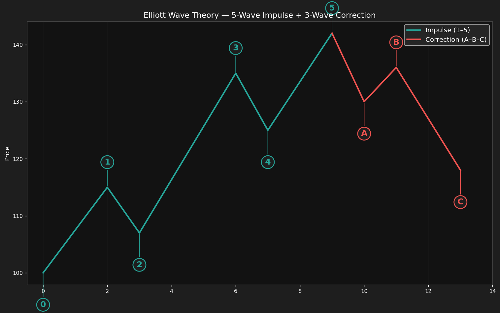
Elliott Wave Rules and Visual Guidelines
Three hard rules and three guidelines that validate or invalidate a wave count: The Three Hard Rules (Cannot Be Violated):RULE 1: Wave 2 never retraces past Wave 1's origin
Valid: Invalid:
1 1
/ \ / \ 2 goes below
/ 2 / ← start of 1 ❌
0
RULE 2: Wave 3 is never the shortest impulse wave
Valid: Invalid:
3 5 5
/ \ / \ / \ 3 is shorter
1 4 \ 3 / \ than 1 or 5 ❌
/ \ \ / \_/ \
0 2 1
2
RULE 3: Wave 4 never enters Wave 1's price territory
Valid: Invalid:
3 5 3 5
/ \/ / \ 4 /
1 4 1 \/
\ \ ↓ Wave 4 drops
2 2 below Wave 1 top ❌
Wave 2 retracement: Commonly 50% or 61.8% of Wave 1
Wave 3 extension: Commonly 161.8% of Wave 1
Wave 4 retracement: Commonly 38.2% of Wave 3
def validate_elliott_waves(turning_points):
"""
turning_points = {'0': 100, '1': 115, '2': 107, '3': 135, '4': 125, '5': 142}
Returns: list of rule violations
"""
violations = []
# Rule 1: Wave 2 cannot go below Wave 1 start
if turning_points['2'] <= turning_points['0']:
violations.append("RULE 1 VIOLATED: Wave 2 retraced below Wave 1 start")
# Rule 2: Wave 3 cannot be the shortest impulse
w1_len = turning_points['1'] - turning_points['0']
w3_len = turning_points['3'] - turning_points['2']
w5_len = turning_points['5'] - turning_points['4']
if w3_len == min(w1_len, w3_len, w5_len):
violations.append("RULE 2 VIOLATED: Wave 3 is the shortest impulse wave")
# Rule 3: Wave 4 cannot enter Wave 1 territory
if turning_points['4'] <= turning_points['1']:
violations.append("RULE 3 VIOLATED: Wave 4 entered Wave 1's price territory")
return violations if violations else ["✅ All three rules satisfied — valid wave count"]

Annotating Wave Counts in Python
Adding professional Elliott Wave labels to a real historical price chart:import matplotlib.pyplot as plt
import matplotlib.patches as mpatches
import yfinance as yf
import pandas as pd
import numpy as np
df = yf.download("AAPL", start="2023-01-01", end="2024-06-30")
fig, ax = plt.subplots(figsize=(18, 9))
fig.set_facecolor('#1e1e1e')
ax.set_facecolor('#1e1e1e')
ax.plot(df.index, df['Close'], color='white', linewidth=1.2, alpha=0.8)
Manually identified turning points (dates and prices)
In practice, you identify these through price structure analysis
wave_points = [
('0_Start', '2023-01-03', df.loc['2023-01-03':'2023-01-06', 'Close'].min(), '#aaa'),
('1', '2023-02-02', df.loc['2023-02-01':'2023-02-05', 'Close'].max(), '#26a69a'),
('2', '2023-03-13', df.loc['2023-03-10':'2023-03-15', 'Close'].min(), '#26a69a'),
('3', '2023-07-19', df.loc['2023-07-17':'2023-07-21', 'Close'].max(), '#26a69a'),
('4', '2023-10-26', df.loc['2023-10-24':'2023-10-28', 'Close'].min(), '#26a69a'),
('5', '2023-12-14', df.loc['2023-12-12':'2023-12-16', 'Close'].max(), '#26a69a'),
('A', '2024-01-22', df.loc['2024-01-20':'2024-01-24', 'Close'].min(), '#ef5350'),
('B', '2024-02-01', df.loc['2024-01-30':'2024-02-02', 'Close'].max(), '#ef5350'),
('C', '2024-04-19', df.loc['2024-04-17':'2024-04-22', 'Close'].min(), '#ef5350'),
]
for label, date_str, price, color in wave_points:
try:
date = pd.Timestamp(date_str)
offset = 5 if label in ['1', '3', '5', 'B'] else -8
ax.annotate(
label.replace('0_Start', '0'),
xy=(date, price),
xytext=(date, price + offset),
color=color,
fontsize=13,
fontweight='bold',
ha='center',
arrowprops=dict(arrowstyle='-', color=color, lw=1.0),
bbox=dict(boxstyle='round,pad=0.2', fc='#1e1e1e', ec=color, lw=1.5)
)
except:
pass
ax.set_title('AAPL – Elliott Wave Count (2023-2024)', color='white', fontsize=14, fontweight='bold')
ax.set_ylabel('Price ($)', color='white')
ax.tick_params(colors='white')
ax.grid(True, alpha=0.15, color='gray')
plt.tight_layout()
Combining Patterns with Indicators: The Confirmation Principle
A chart pattern confirmed by indicators is far more reliable than a pattern alone: Three-Part Confirmation Checklist:Pattern: Head & Shoulders forming (bearish) → +1 bearish signal
RSI: RSI falling, currently at 55 (neutral) → +0 neutral signal
MACD: MACD crosses below Signal line → +1 bearish signal
Score: 2/3 bearish → moderate confidence, proceed with caution
vs.
Pattern: Head & Shoulders neckline break → +1 bearish
RSI: RSI below 50, bearish divergence → +1 bearish
MACD: MACD histogram negative and growing → +1 bearish
Volume: Volume surges on the breakdown → +1 bearish
Score: 4/4 bearish → HIGH CONFIDENCE signal
import matplotlib.pyplot as plt
import matplotlib.gridspec as gridspec
import yfinance as yf
df = yf.download("AAPL", start="2024-01-01", end="2024-12-31")
df['RSI'] = calculate_rsi(df['Close'])
df['MACD'], df['Signal'], df['Hist'] = calculate_macd(df['Close'])
fig = plt.figure(figsize=(18, 12))
fig.set_facecolor('#1e1e1e')
gs = gridspec.GridSpec(3, 1, height_ratios=[4, 1.5, 1.5], hspace=0.05)
ax_p = fig.add_subplot(gs[0])
ax_r = fig.add_subplot(gs[1], sharex=ax_p)
ax_m = fig.add_subplot(gs[2], sharex=ax_p)
for ax in [ax_p, ax_r, ax_m]:
ax.set_facecolor('#1e1e1e')
ax.tick_params(colors='white', labelsize=9)
ax.grid(True, alpha=0.12, color='gray')
Price
ax_p.plot(df.index, df['Close'], color='white', linewidth=1.0)
ax_p.set_title('Pattern + Indicator Confirmation Example', color='white', fontsize=13)
RSI
ax_r.plot(df.index, df['RSI'], color='#9b59b6', linewidth=1.5)
ax_r.axhline(70, color='#ef5350', linewidth=0.8, linestyle='--')
ax_r.axhline(30, color='#26a69a', linewidth=0.8, linestyle='--')
ax_r.axhline(50, color='gray', linewidth=0.6, linestyle=':', alpha=0.5)
ax_r.fill_between(df.index, df['RSI'], 70, where=(df['RSI'] >= 70), alpha=0.2, color='#ef5350')
ax_r.fill_between(df.index, df['RSI'], 30, where=(df['RSI'] <= 30), alpha=0.2, color='#26a69a')
ax_r.set_ylim(0, 100)
ax_r.set_ylabel('RSI', color='white', fontsize=9)
MACD
hist_colors = ['#26a69a' if v >= 0 else '#ef5350' for v in df['Hist']]
ax_m.bar(df.index, df['Hist'], color=hist_colors, alpha=0.7, width=0.8)
ax_m.plot(df.index, df['MACD'], color='#3498db', linewidth=1.3)
ax_m.plot(df.index, df['Signal'], color='#f39c12', linewidth=1.3)
ax_m.axhline(0, color='gray', linewidth=0.6)
ax_m.set_ylabel('MACD', color='white', fontsize=9)
plt.setp(ax_p.get_xticklabels(), visible=False)
plt.setp(ax_r.get_xticklabels(), visible=False)
plt.tight_layout()

Support and Resistance Visualization
Support and resistance are the foundation of all technical analysis — horizontal price walls: Definitions:SUPPORT: A price level where buying interest is strong enough
to STOP a decline and cause a bounce
Visual: Price repeatedly "touches" this level and bounces UP
RESISTANCE: A price level where selling interest is strong enough
to STOP a rally and cause a pullback
Visual: Price repeatedly "touches" this level and bounces DOWN
ROLE REVERSAL (Critical Concept):
Old Resistance → becomes new Support (after a breakout above)
Old Support → becomes new Resistance (after a breakdown below)
import pandas as pd
import matplotlib.pyplot as plt
import yfinance as yf
df = yf.download("AAPL", start="2024-01-01", end="2024-12-31")
fig, ax = plt.subplots(figsize=(16, 8))
fig.set_facecolor('#1e1e1e')
ax.set_facecolor('#1e1e1e')
ax.plot(df.index, df['Close'], color='white', linewidth=1.0, label='AAPL Close', zorder=5)
Define key levels manually (or use rolling max/min detection)
support_levels = [165.0, 175.0, 185.0]
resistance_levels = [190.0, 200.0, 210.0]
for level in support_levels:
if df['Close'].min() <= level <= df['Close'].max():
ax.axhline(level, color='#26a69a', linewidth=2, linestyle='-', alpha=0.7)
ax.text(df.index[-1], level, f' S ${level:.0f}', color='#26a69a', fontsize=10, va='center')
for level in resistance_levels:
if df['Close'].min() <= level <= df['Close'].max():
ax.axhline(level, color='#ef5350', linewidth=2, linestyle='-', alpha=0.7)
ax.text(df.index[-1], level, f' R ${level:.0f}', color='#ef5350', fontsize=10, va='center')
ax.set_title('AAPL – Support and Resistance Levels', color='white', fontsize=13, fontweight='bold')
ax.tick_params(colors='white')
ax.legend(facecolor='#2a2a2a', labelcolor='white')
ax.grid(True, alpha=0.15, color='gray')
plt.tight_layout()
Building a Complete Trading Dashboard: Architecture
Before writing code, design the layout — architecture first, implementation second: Dashboard Blueprint:┌─────────────────────────────────────────────────────────────────┐
│ TITLE: "AAPL Trading Dashboard — [Date Range]" │
│ Ticker selector / Date range controls (Plotly dropdowns) │
├─────────────────────────────────────────────────────────────────┤
│ │
│ PANEL 1: PRICE (60% height) │
│ • Candlesticks (green/red) │
│ • SMA 20 (blue dashed), SMA 50 (orange), SMA 200 (red) │
│ • Bollinger Bands (blue channel, shaded) │
│ • Buy/Sell signal arrows (if strategy overlay selected) │
│ │
├─────────────────────────────────────────────────────────────────┤
│ PANEL 2: VOLUME (15% height) │
│ • Color-coded volume bars │
│ • 20-day average volume line (dashed) │
├─────────────────────────────────────────────────────────────────┤
│ PANEL 3: RSI (12.5% height) │
│ • RSI line (purple) │
│ • 70 / 50 / 30 reference lines │
│ • Red/green shading in extreme zones │
├─────────────────────────────────────────────────────────────────┤
│ PANEL 4: MACD (12.5% height) │
│ • Histogram bars (green/red) │
│ • MACD line (blue) + Signal line (orange) │
│ • Zero line │
└─────────────────────────────────────────────────────────────────┘
↕ All panels share the same x-axis (time)
1. Height ratios: [5, 1.5, 1.5, 1.5] → price panel dominates
- sharex=True → zoom in price panel zooms all panels
- Dark theme → professional trading terminal aesthetic
- Consistent color coding throughout all panels
- Y-axes on right side → price scale readable at a glance
- Grid lines → light gray, not distracting
Trading Dashboard: Python Implementation Part 1
Building the price and volume panels:import matplotlib.pyplot as plt
import matplotlib.gridspec as gridspec
import matplotlib.patches as mpatches
import pandas as pd
import numpy as np
import yfinance as yf
def build_trading_dashboard(ticker="AAPL", start="2024-01-01", end="2024-12-31"):
# ── Fetch data ──────────────────────────────────────────────
df = yf.download(ticker, start=start, end=end, auto_adjust=True)
df.columns = [c[0] for c in df.columns] if isinstance(df.columns[0], tuple) else df.columns
# ── Calculate indicators ────────────────────────────────────
df['SMA_20'] = df['Close'].rolling(20).mean()
df['SMA_50'] = df['Close'].rolling(50).mean()
df['SMA_200'] = df['Close'].rolling(200).mean()
df['BB_mid'] = df['SMA_20']
df['BB_std'] = df['Close'].rolling(20).std()
df['BB_upper']= df['BB_mid'] + 2 * df['BB_std']
df['BB_lower']= df['BB_mid'] - 2 * df['BB_std']
# ── Build figure ────────────────────────────────────────────
fig = plt.figure(figsize=(20, 14))
fig.set_facecolor('#1e1e1e')
gs = gridspec.GridSpec(4, 1, height_ratios=[5, 1.5, 1.5, 1.5], hspace=0.04)
ax_p = fig.add_subplot(gs[0])
ax_v = fig.add_subplot(gs[1], sharex=ax_p)
ax_r = fig.add_subplot(gs[2], sharex=ax_p)
ax_m = fig.add_subplot(gs[3], sharex=ax_p)
for ax in [ax_p, ax_v, ax_r, ax_m]:
ax.set_facecolor('#121212')
ax.tick_params(axis='both', colors='#aaa', labelsize=8)
ax.grid(True, alpha=0.12, color='#333', linestyle='-', linewidth=0.5)
for spine in ax.spines.values():
spine.set_color('#333')
# ── PANEL 1: Price + MAs + Bollinger ────────────────────────
# Candlestick bars (manual since we're using matplotlib)
up_mask = df['Close'] >= df['Open']
down_mask = ~up_mask
for mask, color in [(up_mask, '#26a69a'), (down_mask, '#ef5350')]:
subset = df[mask]
ax_p.bar(subset.index, subset['Close'] - subset['Open'],
bottom=subset['Open'], color=color, width=0.6, alpha=0.9)
ax_p.vlines(subset.index, subset['Low'], subset['High'],
color=color, linewidth=0.7)
# MA overlays
ax_p.plot(df.index, df['SMA_20'], color='#3498db', linewidth=1.2, linestyle='--', label='SMA 20')
ax_p.plot(df.index, df['SMA_50'], color='#f39c12', linewidth=1.4, label='SMA 50')
ax_p.plot(df.index, df['SMA_200'], color='#e74c3c', linewidth=2.0, label='SMA 200')
# Bollinger Bands
ax_p.plot(df.index, df['BB_upper'], color='#5dade2', linewidth=0.9, linestyle=':')
ax_p.plot(df.index, df['BB_lower'], color='#5dade2', linewidth=0.9, linestyle=':')
ax_p.fill_between(df.index, df['BB_upper'], df['BB_lower'], alpha=0.04, color='#3498db')
ax_p.set_title(f'{ticker} – Trading Dashboard ({start} to {end})',
color='white', fontsize=14, fontweight='bold', pad=12)
ax_p.set_ylabel('Price (USD)', color='#aaa', fontsize=9)
ax_p.legend(loc='upper left', facecolor='#1a1a1a', labelcolor='#ccc',
fontsize=9, framealpha=0.8)
# ── PANEL 2: Volume ──────────────────────────────────────────
vol_colors = ['#26a69a' if c >= o else '#ef5350'
for c, o in zip(df['Close'], df['Open'])]
ax_v.bar(df.index, df['Volume'], color=vol_colors, alpha=0.7, width=0.7)
ax_v.plot(df.index, df['Volume'].rolling(20).mean(),
color='#f0e68c', linewidth=1.0, linestyle='--', label='Avg Vol (20)')
ax_v.set_ylabel('Volume', color='#aaa', fontsize=8)
ax_v.legend(loc='upper right', facecolor='#1a1a1a', labelcolor='#ccc', fontsize=8)
plt.setp(ax_p.get_xticklabels(), visible=False)
plt.setp(ax_v.get_xticklabels(), visible=False)
return fig, ax_p, ax_v, ax_r, ax_m, df
fig, ax_p, ax_v, ax_r, ax_m, df = build_trading_dashboard("AAPL")
print("Price and volume panels complete — adding RSI and MACD next...")

Trading Dashboard: Python Implementation Part 2
Adding RSI and MACD panels to complete the full dashboard:# ── PANEL 3: RSI ────────────────────────────────────────────────
def calculate_rsi(prices, period=14):
delta = prices.diff()
gain = delta.clip(lower=0).ewm(com=period-1, min_periods=period).mean()
loss = (-delta.clip(upper=0)).ewm(com=period-1, min_periods=period).mean()
rs = gain / loss
return 100 - (100 / (1 + rs))
def calculate_macd(prices, fast=12, slow=26, signal=9):
ema_f = prices.ewm(span=fast, adjust=False).mean()
ema_s = prices.ewm(span=slow, adjust=False).mean()
macd = ema_f - ema_s
sig = macd.ewm(span=signal, adjust=False).mean()
hist = macd - sig
return macd, sig, hist
df['RSI'] = calculate_rsi(df['Close'])
df['MACD'], df['Signal_MACD'], df['Hist'] = calculate_macd(df['Close'])
RSI panel
ax_r.plot(df.index, df['RSI'], color='#9b59b6', linewidth=1.5, label='RSI (14)')
ax_r.axhline(70, color='#ef5350', linewidth=0.9, linestyle='--', alpha=0.8)
ax_r.axhline(50, color='#666', linewidth=0.6, linestyle=':', alpha=0.6)
ax_r.axhline(30, color='#26a69a', linewidth=0.9, linestyle='--', alpha=0.8)
ax_r.fill_between(df.index, df['RSI'], 70,
where=(df['RSI'] >= 70), alpha=0.2, color='#ef5350')
ax_r.fill_between(df.index, df['RSI'], 30,
where=(df['RSI'] <= 30), alpha=0.2, color='#26a69a')
ax_r.set_ylim(0, 100)
ax_r.set_yticks([30, 50, 70])
ax_r.set_ylabel('RSI', color='#aaa', fontsize=8)
ax_r.legend(loc='upper right', facecolor='#1a1a1a', labelcolor='#ccc', fontsize=8)
MACD panel
hist_colors = ['#26a69a' if v >= 0 else '#ef5350' for v in df['Hist']]
ax_m.bar(df.index, df['Hist'], color=hist_colors, alpha=0.75, width=0.7, label='Histogram')
ax_m.plot(df.index, df['MACD'], color='#3498db', linewidth=1.4, label='MACD')
ax_m.plot(df.index, df['Signal_MACD'], color='#f39c12', linewidth=1.4, label='Signal')
ax_m.axhline(0, color='#555', linewidth=0.8, linestyle='-')
ax_m.set_ylabel('MACD', color='#aaa', fontsize=8)
ax_m.legend(loc='upper right', facecolor='#1a1a1a', labelcolor='#ccc', fontsize=8)
plt.setp(ax_r.get_xticklabels(), visible=False)
Format dates on bottom panel
import matplotlib.dates as mdates
ax_m.xaxis.set_major_formatter(mdates.DateFormatter('%b %Y'))
ax_m.xaxis.set_major_locator(mdates.MonthLocator(interval=2))
plt.setp(ax_m.get_xticklabels(), rotation=30, ha='right', color='#aaa', fontsize=8)
plt.tight_layout()
plt.savefig('aapl_trading_dashboard.png', dpi=150, bbox_inches='tight',
facecolor='#1e1e1e')
print("Dashboard saved to aapl_trading_dashboard.png")

Interactive Trading Dashboard with Plotly
Upgrade the static matplotlib dashboard to a fully interactive Plotly version:import plotly.graph_objects as go
from plotly.subplots import make_subplots
import pandas as pd
import yfinance as yf
def interactive_trading_dashboard(ticker="AAPL", period="1y"):
df = yf.download(ticker, period=period, auto_adjust=True)
df.columns = [c[0] if isinstance(c, tuple) else c for c in df.columns]
# Calculate indicators
df['SMA_20'] = df['Close'].rolling(20).mean()
df['SMA_50'] = df['Close'].rolling(50).mean()
df['SMA_200'] = df['Close'].rolling(200).mean()
df['BB_mid'] = df['SMA_20']
df['BB_upper']= df['BB_mid'] + 2 * df['Close'].rolling(20).std()
df['BB_lower']= df['BB_mid'] - 2 * df['Close'].rolling(20).std()
df['RSI'] = calculate_rsi(df['Close'])
df['MACD_line'], df['Signal_line'], df['Hist'] = calculate_macd(df['Close'])
# Build subplots
fig = make_subplots(
rows=4, cols=1,
shared_xaxes=True,
vertical_spacing=0.02,
row_heights=[0.5, 0.15, 0.17, 0.18],
subplot_titles=[f'{ticker} Price', 'Volume', 'RSI (14)', 'MACD (12,26,9)']
)
# ── Row 1: Candlesticks + MAs + Bollinger ───────────────────
fig.add_trace(go.Candlestick(
x=df.index, open=df['Open'], high=df['High'],
low=df['Low'], close=df['Close'],
increasing_line_color='#26a69a', decreasing_line_color='#ef5350',
name='Price'
), row=1, col=1)
for ma, color, dash, name in [
('SMA_20', '#3498db', 'dash', 'SMA 20'),
('SMA_50', '#f39c12', 'solid', 'SMA 50'),
('SMA_200', '#e74c3c', 'solid', 'SMA 200'),
]:
fig.add_trace(go.Scatter(x=df.index, y=df[ma], line=dict(color=color, width=1.5, dash=dash),
name=name), row=1, col=1)
fig.add_trace(go.Scatter(x=df.index, y=df['BB_upper'], line=dict(color='#5dade2', width=1, dash='dot'),
name='BB Upper', showlegend=False), row=1, col=1)
fig.add_trace(go.Scatter(x=df.index, y=df['BB_lower'], line=dict(color='#5dade2', width=1, dash='dot'),
name='BB Lower', fill='tonexty', fillcolor='rgba(93,173,226,0.05)',
showlegend=False), row=1, col=1)
# ── Row 2: Volume ────────────────────────────────────────────
vol_colors = ['#26a69a' if c >= o else '#ef5350'
for c, o in zip(df['Close'], df['Open'])]
fig.add_trace(go.Bar(x=df.index, y=df['Volume'], marker_color=vol_colors,
name='Volume', opacity=0.7), row=2, col=1)
# ── Row 3: RSI ───────────────────────────────────────────────
fig.add_trace(go.Scatter(x=df.index, y=df['RSI'], line=dict(color='#9b59b6', width=1.5),
name='RSI'), row=3, col=1)
for level, color in [(70, 'rgba(239,83,80,0.4)'), (30, 'rgba(38,166,154,0.4)')]:
fig.add_hline(y=level, line_color=color, line_dash='dash', line_width=1, row=3, col=1)
# ── Row 4: MACD ──────────────────────────────────────────────
hist_colors_plotly = ['#26a69a' if v >= 0 else '#ef5350' for v in df['Hist']]
fig.add_trace(go.Bar(x=df.index, y=df['Hist'], marker_color=hist_colors_plotly,
name='MACD Histogram', opacity=0.7), row=4, col=1)
fig.add_trace(go.Scatter(x=df.index, y=df['MACD_line'], line=dict(color='#3498db', width=1.5),
name='MACD Line'), row=4, col=1)
fig.add_trace(go.Scatter(x=df.index, y=df['Signal_line'], line=dict(color='#f39c12', width=1.5),
name='Signal Line'), row=4, col=1)
# ── Layout ───────────────────────────────────────────────────
fig.update_layout(
title=dict(text=f'{ticker} – Interactive Trading Dashboard', font=dict(size=18, color='white')),
template='plotly_dark',
height=900,
showlegend=True,
xaxis_rangeslider_visible=False,
legend=dict(bgcolor='rgba(26,26,26,0.8)', font=dict(color='white')),
paper_bgcolor='#1e1e1e',
plot_bgcolor='#121212',
)
fig.write_html(f'{ticker}_dashboard.html')
print(f"Interactive dashboard saved to {ticker}_dashboard.html")
return fig
fig = interactive_trading_dashboard("AAPL", "1y")
fig.show()
Backtesting Visualizations: Did the Strategy Work?
A strategy is not complete until you visualize its performance over historical data: The Three Performance Visualizations:1. EQUITY CURVE: Portfolio value over time
y-axis: Portfolio $ value (or cumulative return)
x-axis: Time
→ Shows if the strategy grew money over time
- DRAWDOWN CHART: How far from the peak
y-axis: % below peak (always negative or zero)
x-axis: Time
→ Shows max loss periods, risk profile
- TRADE RETURN DISTRIBUTION: Per-trade profitability histogram
y-axis: Number of trades
x-axis: % return per trade
→ Shows win/loss ratio and outlier trades
import pandas as pd
import numpy as np
import matplotlib.pyplot as plt
import yfinance as yf
df = yf.download("AAPL", start="2020-01-01", end="2024-12-31")
df['SMA_20'] = df['Close'].rolling(20).mean()
df['SMA_50'] = df['Close'].rolling(50).mean()
df['signal'] = np.where(df['SMA_20'] > df['SMA_50'], 1, 0)
df['position']= df['signal'].shift(1)
df['returns'] = df['Close'].pct_change()
df['strategy']= df['returns'] * df['position']
Cumulative returns
df['cum_return_strat'] = (1 + df['strategy']).cumprod()
df['cum_return_bh'] = (1 + df['returns']).cumprod()
Drawdown
rolling_max = df['cum_return_strat'].cummax()
df['drawdown'] = (df['cum_return_strat'] - rolling_max) / rolling_max
fig, axes = plt.subplots(3, 1, figsize=(16, 14))
fig.set_facecolor('#1e1e1e')
Equity curves
axes[0].set_facecolor('#1e1e1e')
axes[0].plot(df.index, df['cum_return_strat'], color='#26a69a', linewidth=2, label='SMA Crossover Strategy')
axes[0].plot(df.index, df['cum_return_bh'], color='#3498db', linewidth=2, linestyle='--', label='Buy & Hold (AAPL)')
axes[0].set_title('Equity Curve: SMA 20/50 Crossover vs. Buy & Hold (2020-2024)',
color='white', fontsize=13, fontweight='bold')
axes[0].axhline(1, color='gray', linewidth=0.8, linestyle='--')
axes[0].set_ylabel('Portfolio Value (Starting = 1.0)', color='white')
axes[0].legend(facecolor='#2a2a2a', labelcolor='white')
axes[0].tick_params(colors='white')
axes[0].grid(True, alpha=0.15, color='gray')
Drawdown
axes[1].set_facecolor('#1e1e1e')
axes[1].fill_between(df.index, df['drawdown'], 0, color='#ef5350', alpha=0.5, label='Drawdown')
axes[1].plot(df.index, df['drawdown'], color='#ef5350', linewidth=1.0)
axes[1].set_ylabel('Drawdown (%)', color='white')
axes[1].set_title('Drawdown Over Time', color='white', fontsize=12)
axes[1].tick_params(colors='white')
axes[1].grid(True, alpha=0.15, color='gray')
axes[1].yaxis.set_major_formatter(plt.FuncFormatter(lambda y, _: f'{y*100:.1f}%'))
Return distribution
axes[2].set_facecolor('#1e1e1e')
trade_returns = df[df['strategy'] != 0]['strategy'].dropna()
axes[2].hist(trade_returns, bins=50, color='#3498db', edgecolor='#1e1e1e', alpha=0.8)
axes[2].axvline(0, color='white', linewidth=1.5, linestyle='--')
axes[2].axvline(trade_returns.mean(), color='#26a69a', linewidth=2, linestyle='-',
label=f"Mean: {trade_returns.mean()*100:.3f}%")
axes[2].set_xlabel('Daily Return (%)', color='white')
axes[2].set_ylabel('Frequency', color='white')
axes[2].set_title('Per-Trade Return Distribution', color='white', fontsize=12)
axes[2].legend(facecolor='#2a2a2a', labelcolor='white')
axes[2].tick_params(colors='white')
axes[2].grid(True, alpha=0.15, color='gray')
plt.tight_layout()
plt.savefig('backtest_results.png', dpi=150, bbox_inches='tight', facecolor='#1e1e1e')
Common Mistakes in Trading Visualization
Visual pitfalls that lead traders and analysts astray: Mistake 1: Hindsight Bias (Most Common)❌ WRONG: Drawing Fibonacci levels or patterns on a chart
and then zooming into only the section where they worked
→ Every pattern "works" if you cherry-pick the examples
✅ RIGHT: Backtesting the pattern over hundreds of occurrences
and measuring the actual win rate across the full dataset
❌ WRONG: RSI + MACD + Stochastic + CCI + Williams %R + MFI
All measuring momentum → they all say the same thing
More indicators ≠ more information
✅ RIGHT: 1 trend indicator (e.g., SMA 200)
+ 1 momentum indicator (e.g., RSI)
+ 1 volatility indicator (e.g., Bollinger Bands)
= Complete picture without redundancy
❌ WRONG: Y-axis starts at $149 when price ranges from $148 to $155
→ A 0.7% decline looks like a 50% crash
→ Commonly used by financial media to make charts dramatic
✅ RIGHT: Y-axis includes enough range to show context
Or uses percentage change (honest relative scale)
❌ WRONG: Using a 5-minute RSI to make a long-term investment decision
Different time horizons, completely different signals
✅ RIGHT: Match your indicator time frame to your trade time horizon
Day trader → use intraday indicators (5-min, 1-hour)
Long-term investor → use weekly/monthly indicators
❌ WRONG: Testing 1,000 different MA combinations on historical data,
finding the one that worked best → then claiming it's "the strategy"
This is curve fitting → will fail on future data
✅ RIGHT: Choose indicator parameters based on fundamental reasoning,
then test on OUT-OF-SAMPLE data (data not used in optimization)
Summary, Resources, and Next Steps
The Complete Journey — What You Learned Across 80 Slides: Part 1 — The Visual Grammar:- OHLCV data structure, candlestick anatomy, color conventions
- Line vs. OHLC vs. candlestick chart types
- Volume as the conviction meter
- Python: mplfinance, Plotly, logarithmic scales
- SMA, EMA, WMA, VWAP — smoothing and their tradeoffs
- Golden Cross / Death Cross
- Fibonacci retracement, extension, fan lines, time zones
- Confluence zones — where independent indicators agree
- RSI (0-100 speedometer), RSI divergence
- MACD (three-component oscillator), histogram early signals
- Bollinger Bands (dynamic volatility channel)
- Stochastic Oscillator, ATR, OBV, Volume Profile
- Head & Shoulders, Cup & Handle, triangles, flags, wedges
- Double top/bottom, support/resistance, role reversal
- Elliott Wave Theory and annotation
- Multi-panel dashboards: matplotlib static + Plotly interactive
- Backtesting visualization: equity curve, drawdown, return distribution
| Resource | Type | Focus |
|---|---|---|
| Technical Analysis of Financial Markets — John Murphy | Book | Comprehensive reference |
| TradingView.com | Platform | Real-time charting (free tier available) |
mplfinance docs | Library | Python candlestick charts |
yfinance docs | Library | Free stock data |
plotly Finance docs | Library | Interactive dashboards |
| Investopedia Technical Analysis | Website | Pattern definitions |
backtrader library | Library | Full backtesting framework |
pip install mplfinance yfinance plotly pandas numpy matplotlib
pip install python-pptx # For PowerPoint export
- 🔧 Build your own automated screening script to scan 500 stocks for patterns
- 📊 Create a live dashboard that pulls real-time data every minute
- 🤖 Code a full systematic strategy with entry, exit, and position sizing rules
- 📈 Connect your strategy to a paper trading account (Alpaca, Interactive Brokers)
- 🧪 Learn proper backtesting methodology with walk-forward analysis
"The goal of technical analysis is not to predict the future — it is to objectively identify what the market is doing right now and react accordingly. The chart is the map. You still have to drive." — Final Principle of Technical Analysis